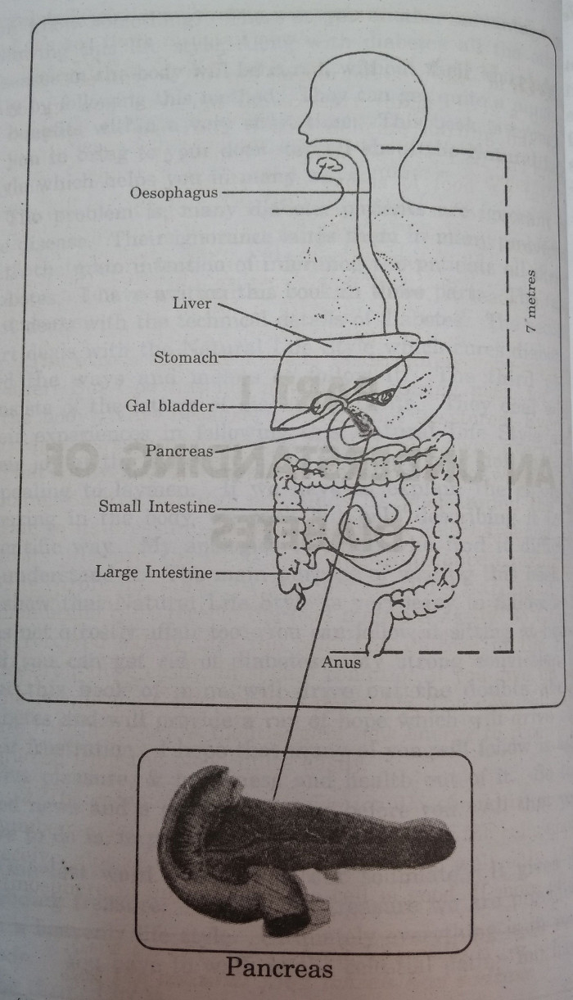
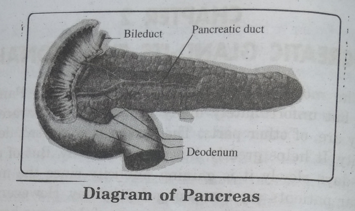
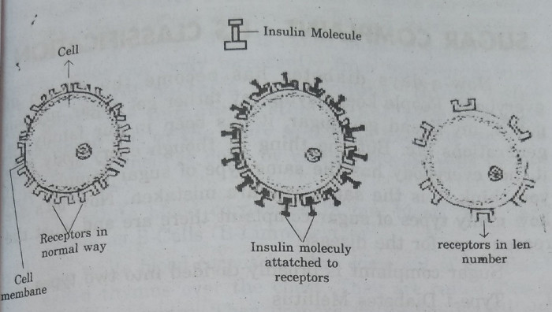
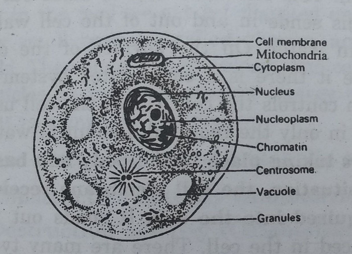

A PROVEN CURE FOR DIABETES THROUGH NATURAL LIFE STYLE
[Sukhajeevana Sopaanaalu - 9]
Take care of your Health
It will take care of
Your Wealth and happiness
Give up Salt
Get rid of Sugar
Dr. Manthena Satyanarayana Raju
Translated by
M. Rajya Sri
Lecturer in English
Contents
- What do you mean by Diabetes
- pancreatic Gland - Its functionality
- The Saga of Insulin
- Sugar complaint - Its classification
- The cells - Their Metabolism
- Causes of Diabetes
- Symptoms of Diabetes
- The Dangers due to Diabetes
- Complications of Diabetes
- Why Natural Life Style?
- Water and its Vantage
- The Sun Food that drives away Diabetes
- The Arkapakvaharam that cures Diabetes
- The Salt that harms live cells
- The daily routine for Diabetic Patients
- How to minimise medication
- Answers for Frequent doubts.
- Experiences - Expressions
IN THE HOLY PRESENCE OF GANGA...!
Ganga is like India's soul. The divine river Ganges started its journey from Himalayas and it has distributed its beautiful and an altruistic mind to people like Ganga Raju Garu. Pious Ganges has presented us all Sri Gangaraju Garu as blue-eyed boy of her sisters Krishna and Godavari. As the name befits, Gangaraju Garu is philanthropist in mind, word and deed. He is like gleam of moon to the beauty of Natural Life Style. He is our friend and guide philosopher to make our dreams a reality. His magnanimity helped our mission of Natural Life Style to reach greater heights. To such a great personality this book is dedicated whole-heartedly.
Yours ever lovingly,
Manthena Satyanarayana Raju
Nothing is Impossible!
Life is not a bed of roses! Fortune, according to mythology, is a blind woman who turns our wheel of fortune. That is the reason why we have many ups and downs in our life. But in the modern days, we are inviting many troubles with open arms.
God has created many beautiful things - a fast flowing stream, a huge mountain, a beautiful flower, a tasty fruit, the vast sky, the twinkling stars etc. The very same God has created the ugly duckling, the ferocious lion, the harmful bacteria, the destructive volcano etc. We cannot blame God for creating these destructive elements. He has created both Good and evil, both Adam and Satan. He has also created the mind of man, the third eye, with which he can differentiate between good and evil. Man is given this reasoning power and analysing nature.
Man has yet another talent. He can recreate whatever God has created. When God has created Satellites, man has created artificial satellites. So far so good. But sometimes man's creation is nothing but destruction of God's creation. This is especially true regarding food. The sun food created by God is destroyed by man. He is cooking it, adding salt and masalas to it, storing it in cold storage and re-heating it. In one word, he is destroying all that is good in it. He is enjoying all that is bad. So this unnatural food is laying a foundation for diseases. He is not using his brain to know the harm caused to himself by himself!
There is a funny saying that if we stand in the heart of Vijayawada and throw a stone, even if it does not hit a pig, it will definitely hit a 'Subba Rao'. Now we can modify it and say that even if it does not hit Subba Rao, it will hit a diabetic patient. Diabetes has become the fashion of the day. In such a critical age, here comes Dr. Manthena Satyanarayana Raju, like Gandhi to save us from the clutches of the terrible disease and to make us lead a life of dharma. He poses a logical question to us.
When you are prepared to take medicines; follow diet restrictions and suffer life long, why can't you just follow diet restrictions life long and forget suffering and medicines life long?'
They are not exactly diet restrictions. They may appear so initially, but they take us to Amruthaahar (Heavenly Food) ultimately. They teach us a Natural Life Style. So it is in our hands ultimately to be benefited by it or not! I am so thrilled to translate this wonderful book on diabetes into English and help in my humble way in Dr. Raju Gaaru's marathon project.
- M. Rajya Sri
About the Translator
Mrs. M. Rajya Sri needs no introduction to the readers and the followers of Dr. Manthena Satyanarayana Raju. She has already translated three books of Dr. Raju, which were published in June 2002. They are 'Natural Life Style for a Perfectly Healthy Living', 'Health is Happiness' and 'Food and thought'.
Mrs. Rajya Sri hails from an educated and publishing family. Her mother Smt. M. Leelavathi Devi was a graduate in Mathematics and film censor board member. Her father Sri M.N. Rao was a doyen of Telugu Publishing and EMESCO fame. Her husband Sri K.V.R. Rao is the Director of Finance of St. Alphona's Educational Society, which manages St. Alphonsa's High School and St. Alphonsa's Junior College. Sri K.V.R. Rao has brought out the innate talent in his wife, of which she herself was unaware of! He has encouraged her to write, he has given her valuable suggestions at every step and all the moral support required.
Rajya Sri has been working as an English Lecturer for more than two decades in Nagarjuna Junior College; S.R. Nagar, Hyderabad. She won Gold Medal in Telugu in B.A. Hence she is good at both English and Telugu and has written articles and stories in both. She has translated novels, magazines, stories and articles from English to Telugu and vice versa.
Translation is not an easy task. It requires in depth knowledge of both languages. In addition to that, the translated piece of work should retain all the original features of the masterpiece, but again give you the impression of a direct book instead of a translation. It should retain the style and language of the original-jovial, serious, narrative, descriptive, conversational, high-sounding etc.
I have read all her translations and they varied from simple and jovial to serious and high-sounding. The children's magazine Varka she translated from English to Telugu had some typical limitations. The magazine came with white pages with the pictures already printed on it. whatever she writes, translates, should fill in the pages without leaving any gap. That task of hers shows she is adept in it.
The translations of Dr. Manthena Satyanarayana Raju prove my statement true. She has summed up the entire thought flow of doctor in small slogan. For the book 'Food and Thought', she wrote.
'Good food for the day,
Gives you good thought for the day'
For this book on diabetes 'Give up salt, Get rid of sugar'
This is possible only if she can get into the mind of the author. Her style is as simple as Dr. Raju's Style!
The quotations at the end of the page are no less - 'one small negligence on your part makes you wage a war against all the parts'. 'Tell me about your food and I will tell you about your nature and health'. 'As the food, so the cells. As the cells, so the health'.
I hope this book will spread Dr. Manthena Satyanarayana Raju's Philanthropic service far and wide, all over the globe. I wish both Dr. Raju and Rajya Sri all the best.
M.S. Kumar
Vice-President,
Bridgelogix Corporation
9717 East 42nd Street, Suite 100
Tulsa, OK 74146-3613
THE PHILANTHROPIC LIFE OF SRI GOKARAJU GANGARAJU
India is called Bharata Desam in Telugu. The letter 'Bha' means Light, knowledge and dharma. 'Rati' mean interest. Since our people have an interest to lead a life of Dharma our country is called Bharata (Bharati) Desam. Gokaraju Gangaraju is one of the rarest gems of India who leads such a life of Dharma in every action of his. He is an incarnation of Indian Culture.
He is not only a leading industrialist, but also a philanthropist in the field of socialistic, cultural and educational activities. He is a well known personality to all the people in Andhra as a 'Deena Bandhu'. To talk about his socialistic activities done directly and indirectly, the donations given without thinking of publicity is like measuring a huge mountain.
He started his career as any ordinary man, but rose up to great heights within no time. He completed his B. Pharmacy in 1970 and joined as a chemist in Siris company and worked at various levels for five years. He started his own company, 'Chemiloids' in 1976 with his great efforts. He faced many hardships for the company in the initial stages. But he is a true example of Bhatruhari's poem. The best category of men don't give up any work they take up. The same was the case with Sri Gangaraju. By 1980-81, he won profits for the company and thereby won export Award from Indian Government.
Later with his strong determination, Laila Group of Companies came into existence. He started a company called Laila Impex as Export oriented unit (EOU) in 1992 and exported Ayurvedic and Herbal Extracts all over the world. He was thus popular for spreading our age old Ayurvedic Medical science far and wide. He received the Export Award for 2001 from our chief Minister. The same way he was honoured with Honorary Doctorate for the new medical system in 1994 by the government of Sri Lanka.
He took over the Delta Paper Mills which has been running on losses for the past 25 years. He made the firm gain profits in his management. He took over Hanuman Sugars in 2001. he created history in that. He broke the records of any sugar factory in his deal with the farmers and thereby provided a new hope of life for the farmers in that area. This is just one example to show that he doesn't think in the lines of an industrialist alone but has a large heart which would help the society.
He feels that industries are like temples. We can derive this feeling from his own words. 'If a temple gives peace of mind to people, an industry gives a means of life. So instead of establishing new companies, if we activate sick industries, we can, not only help the workers in those industries, but we can also extend our service to people and the nation at large. Since he has such a philanthropic attitude, today his company is running with 3000 employees and 150 crores turnover. It is one of the best in the country. His services in the field of spiritual, educational, sports and cultural activities are equally remarkable.
Spiritual Field: He is a devotee of many sages like Kanchi Jayendra Saraswathi, Vijayendra Saraswathi, Chinna Jeeyar Swami, Srungeri Peetadhipathi, Dayananda Saraswathi and the like. He is participating in many social services with their blessings and appreciations. He helped financially in the establishment of vedic school in Hrushikesh. He is Secretary to Jeeyar Educaion Trust (JET). With the blessings of Swami he is putting into practice many good activities. He is tending a helping hand to the social activities of Viswa Hindu Parished. He constructed a beautiful temple of Iskcon from his own pocket with the help of Sri G.S. Raju. It is on the banks of the river Krishna.
Social Service: Name any havoc, any calamity you can see Sri Gangaraju's helping hand there. When the coastal area was affected by the storm he donated at once Rs. 10,00,000. The Government lent a helping hand to the families of brave soldiers who sacrificed their lives to the Kargil War. But even before the government could react, he helped those families with Rupees 5,00,000 along with Siris proprietor Rama Raju. This was handed over by Sri Chinna Jeeyar Swami. Viswa Hindu Parishad provides medical assistance to thousands of patience through their mobile hospital. He provides thousands of rupees every month to help the parties. He provided complete financial support for the construction of Kalyana Mandapam in Mutyalampadu in Vijayawada.
Cultural Activities: You can see Sri Gangaraju Garu in the forefront of any cultural activity in Vijayawada. He is the founder member of Alluri Seetha Rama Raju cultural Association. When Gandhi hill was closed down, he spent lakhs of rupees in its renovation under the suggestions of Ch.V.P. Murthi Raju, a famous freedom fighter. He brought back its past glory. In the same way he reopened the dilapidated Tagore's Library. He helped financially in the construction of one gallery in the stadium being constructed by Vijayawada Municipal Corporation. He is the committee member of construction of Ghantasala Government College. He plans to construct an open auditorium which will be useful to students and artists. He keeps on helping many such cultural programmes and activities.
Educational Field: The best education teaches you to be humble. The same way the highly educated man is associated in many activities in educational field. He founded Gokaraju Rangaraju College for Engineering and Technology. He is the Director of Medical College sponsored by Alluri Seetharama Raju Educational Society in Eluru. He is advisory Member of Pinnamaneni Venkateswara Rao Medical College founded by Siddhartha Academy. He established Gokaraju Ranga Raju Surya Public School in Vijayawada. He established Junior and Degree Colleges in Aswaraopet in the name of V.K.D.V. Satyanarayana Raju to provide education for the tribals there. There are many girijans and slum dwellers in villages. He is providing financial aid to run 100 single teachers' schools for such illiterates. He is doing wonders, which even the government would not do, for many such downtrodden due to his zeal to help others.
Sports Field: He has not left out his services in the sports field too. He has been the Secretary to Krishna District Cricket Association which encourages hundreds of sportsmen to shine in their field of talent.
He played a key role in arranging the three day cricket match between Zimbambve and Presidents XI. He is putting in all his efforts to bring down West Indies Verses India match to Vijayawada. His sole ambition is to bring a name and fame for Vijayawada in the field of Cricket and add its name in International Cricket field.
He has been helping people in various fields thus. Now he has been following Natural Life Style and having derived the pleasures out of it is rendering a helping hand in the colossal movement of spreading Natural Life Style. He is continuously extending his co-operation in the construction of an Ashram in the lap of nature beside Krishaveni river. He joins us in spreading it nationally and internationally and make thousands of people healthy and happy.
My heartfelt thanks to Sri Gokaraju Gangaraju who is a great industrialist, a philanthropist, a soft-spoken man, a social worker and well respected man, I deem it as my great pleasure to be able to dedicate this book of mine to Sri Gangaraju with humble hands.
- Manthena Satyanarayana Raju
Acknowledgments
Writing a book is like doing a yagna. Writing a book on health is a Mahayagna. It requires great talent and co-operation of many. I desired to write a book exclusively for diabetic people to find salvation for many patients from the terrible disease. If my dream has come true, and this finished product is before you, I can't forget the eternal services of many well-wishers behind it. My special thanks goes to Sri Gokaraju Ganga Raju (M.D. Laila Group of Companies, Vijayawada) because he stood through me throughout my project. He was one with me in my longing to provide natural health to one and all. To enable my writing to go on uninterrupted, he provided an ashram for me in the scorching heat of summer. He took every care of me to finish the book on diabetes in Telugu entitled 'Prakruti Vidhanam - Madhumeha Nidanam'.
My thanks to the printing press management, staff and especially to Sri Sivaji Raju for bringing this book into light within a very limited time. They have done it as their own personal work.
I am also grateful to many of my followers who follow this Natural Life Style, who have been benefited by it and who have come forward most willingly to share their experiences with us. My thanks to one and all.
Vijayawada.
6-6-2002
- Manthena Satyanarayana Raju
GOOD NEWS FOR YOU
All creatures living on earth are the children of Mother Nature. Good health is the birth right of any creature. Every living being has been enjoying its birth right since ages past. Even man has been enjoying so, till recently. The dawn of civilization made ill health a man's birthright. Ever since civilization dawned on, man has not been leading a natural life in the norms of Nature. His life is gradually taking him away from nature, away from the dharmas of the body. When the conditions are not favourable, the body cannot fulfill its dharma properly. the problem starts with the cells, to begin with. In whichever part, the cells get affected, that particular part becomes affected and it cannot fulfil its duty properly. Slowly the other parts of the body get decayed. Such a problem is shown outwardly in the form of some disease. The disease thus shown outwardly is diabetes.
Diabetes is an unnatural element. It only pinpoints to us that we are not leading a natural life. If we desire to get back our natural health, we should lead a Natural Life Style. Then the unnatural element in our body (Diabetes) disappears totally. Our body is gifted with a born by Nature to purify itself. If we make use of this boon, we can totally drive out diabetes. It will never again dare to show its face to us. If we are not able to drive out this unnatural element in our body it simply means that we are committing some mistake somewhere. Instead of rectifying the mistake committed we are blindly leading our life. Since this mistake is handed down from generation to generation, this diabetes is becoming a hereditary disease. The one which had started in a small scale has spread far and wide like a big tree. All this is man made. Man is brought to this fate all by himself.
Diabetes has been playing with our lives for thousands of years. The situation is worsening day by day. Statistics tells us that more than one percent of people in India are affected by diabetes at an early age, more than 12% are affected at old age. Roughly 16.5% of them are from Andhra Pradesh. Andhra Pradesh stands in number one position in containing diabetic patients. Out of every 8 old people, one man is suffering from diabetes. As days pass by, there is every chance of this number increasing. This seems to find a permanent position in the lives of mankind. Medicines were invented for this disease. They help man to some extent. The tragedy is, though medical science is advancing at jet spend, it has not found a medicine yet, to drive out diabetes completely. In spite of different types of treatment and different medicines available, they would not curtail the growth and spread of diabetes. In such changed circumstances, people have come prepared to bear it with a grin and accept it as a harsh reality. They have resigned to their fate and they are willing to accept it life long.
Doctors tell us that once a diabetic, always a diabetic. There is no cure for it. We should be prepared to take medicines life long. The problem with diabetes is - it is the Ring of diseases. It doesn't come alone. It starts affecting each part gradually, causing many more diseases. Finally we get dejected and frustrated in life. Forever we will be searching ways but we are not able to come out of it successfully. This is the life style of not one, but of almost every one. We long for a day when a new medicine will be launched into the world, when we will get back the lost health. Many of us feel very dejected and feel there is nothing more to enjoy or expect in life. That is the present trend.
The saying goes - we search for the baby all over the house when the baby is all the time in the cradle. The same way we are searching of a cure for diabetes everywhere else. What is the reason for becoming diabetic? Is it not because we have strayed away from Nature? How do we mend it? Only by following Natural method. Natural method can be classified into two ways - Naturopathy and Natural Life Style. Naturopathy includes fasting, mud bath, Asanas, pranayama, steam bath etc. The treatment varies according to the symptoms of the disease. Since we are Mother Nature's children, Naturopathy or Natural Life Style are very helpful to us.
Natural Life Style guides us how to lead our life all the 24 hours of the day. If we amend our Life Style we get back the natural element and we can drive out diabetes completely. We commit many mistakes in matters of our body right from the time we get up to the time we go to bed. If we wish to avert these mistakes we should refine some of our habits like drinking water, eating food, cooking food, excretory action, doing exercise or taking rest.
Diabetes can be brought under control just by following Natural Life Style. We don't have to take allopathy medicine or take naturopathy treatment, as long as we follow this good life style. We will not be affected by Diabetes again. I myself have been following this Natural Life Style for the last 8 years. I made thousands of people follow this Natural Life Style and we have observed remarkable improvement in the conditions of diabetic patients. We ourselves are astonished at the easy way in which diabetes is totally cured. But the tragedy is people are unaware of such an easy treatment for diabetes. If all of us make this Natural Life Style our life style, we can totally eradicate diabetes. We can drive it away from the world completely.
The good news for the diabetic patients is - They can cure themselves of diabetes, sitting at home. They can gradually get rid of diabetes by following the Natural Life Style. They can eat all the fruits. They can eat root vegetables. They can eat sweets once in a while. They can eat rice too. Still they need not be scared of suffering from diabetes again. You know something? There is yet another advantage in following this life style. Along with diabetes all the other diseases in the body will be cured, without their knowledge, only by following this method. They can get quite a number of benefits within a very short time. This book is brought to you to bring to your door step all about the Natural Life Style which helps you in many ways.
The problem is, many diabetic patients are ignorant of the disease, Their ignorance lands them in many problems. With the main intention of informing the patients all about diabetes, I have written this book in three parts. The first part deals with the technical details of diabetes. The second part deals with the Natural Life Style which cures diabetes and the ways and means to follow it. The third part consists of the letters of diabetic patients. They deal with their experiences in following this Natural Life Style and their joy at the discovery. The first part may not be very appealing to laymen. If we have to explain the changes occurring in the body, we can't but help describing it in a scientific way. My apologies to those who find it difficult to understand it. The main purpose of writing this book is to show that Natural Life Style is very easy to follow and it is not a costly affair too. You can follow it sitting at home and you can get rid of diabetes. My strong conviction is that this book of mine will drive out the doubts about diabetes and will provide a ray of hope which will drive out their frustration. I hope that many of you will follow it and derive pleasure, & happiness and health out of it. So the Good news and a good means are before you. All that you have to do is, to put it into practice.
One last word. Nature is our soulmate. It gives us unending treasure. Out of this treasure we are providing you a heavenly life style. Ultimately everything is in your hands. You have to walk in the celestial path. You have to be thrilled by it.
PART I - AN UNDERSTANDING OF DIABETES

1. WHAT DO YOU MEAN BY DIABETES?
- Diabetes, Diabetes everywhere - A cure for it in Natural Way
- Glucose gives your energy - Excess of it gives you Diabetes
- Sugar complaint is otherwise Diabetes - Excess of thirst is one symptom
- Diabetes may come unannounced - But it can be cured announced
The disease Diabetes is originally called 'Diabetes Mellitus'. Gradually, the word mellitus disappeared and only diabetes remained. So whether it is referred to as diabetes or as diabetes mellitus, they mean one and the same. If we try to understand the meaning of diabetes mellitus, the word diabetes in Greek language means through syphon. Syphon means through which the liquid flows from a higher level to a lower level. The word mellitus means the flow of sweet blood in the body and the outward flow of sweet urine. Scientists have found out that the urine is sweet because of the presence of sugar known as 'glucose' in it. That's why this disease is known as diabetes mellitus. It is called 'Madhumeham' in Ayurvedam. In colloquial language it is known as sugar complaint. We keep saying 'I got sugar, my husband also got it, even that lady has sugar'. So even I will refer to it now and then as sugar complaint.
There is another type of diabetes. In that the urine will not be sweet, but the person passes out urine quite frequently. This is the main symptom of this and this type is known as 'Diabetes Insipidus'. 'Insipidus' means 'quickly'. So in this type, urine will be in great quantity, but it doesn't have sugar. This type is not very harmful. The scientists have said that people get it very rarely. Till now we have seen why sugar complaint is given these names. Now let us see what exactly is sugar complaint.
Glucose is that which gives us energy. It means Glucose is the other name of energy. Normally there is a certain amount of sugar in our blood. Mostly the sugar in the blood will be in the form of glucose. In addition to glucose, the blood contains fructose, lactose, galactose etc. They too are sugar items. The glucose in the blood doesn't remain constant. The reading before taking food is different from that after taking food. Fasting blood sugar conducted in two ways and should have the following readings.
1) The blood sugar content should be 80-120 mg%. This includes glucose and other sugar items.
2) Only glucose (blood glucose) in the blood should be 80-100 mg%
People mostly under go only the first type of blood test (blood sugar). Doctors rarely advice the second type (blood glucose). Now-a-days, they are using different words like 'blood sugar', 'blood glucose' and they are going for different tests for these. The readings mentioned above are for a healthy person during fasting. After taking food, even if glucose and other sugar items increase in blood, a hormone called insulin in us, brings down their level. Whoever doesn't have this insulin or in whomsoever it doesn't work properly, the activity of reducing glucose is disturbed. As a result the glucose in the blood remains more than in the normal condition. The disease in which the glucose is always more is called 'Sugar Complaint'.
The 5 litres of blood we normally have, when it flows through kidneys undergoes many changes, gets filtered and then urine comes out of it. When blood is filtered in the kidneys, the useful nutrients and glucose go back to the blood, and only waste materials go out. This is a normal course of action.
This normal course changes in sugar patients. They have more of glucose items in blood, than required. Since excess of glucose is stored in it, to save the body from this, the kidneys send out some glucose too from the body. So glucose also comes out through urine. The glucose that comes out through urine doesn't come out alone, it pulls along with it plenty of water too. So they urinate more than ordinary people. Since the excess of glucose takes out with it plenty of water through urine, the water content in the body will get reduced. To compensate the loss of water, the body sends out signals to the patient in the form of thirst. That's why sugar patients have this symptom of thirst always.
The food we eat, gets converted into glucose after it is digested. It travels in blood and reaches the cells. We require insulin hormone to make this glucose reach the cells. But, for sugar patients this insulin hormone doesn't function at all or even if it functions, not to the full extent. As a result, the cells don't receive glucose to carry on their work of producing energy. Crores and crores of cells will be weak. If they don't have energy, we don't have energy. So another symptom of this disease is 'weakness'.
Glucose, the energiser of the cells, remains at the entrance of the cells, but can't get through the cells outer layer. 'Water, water everywhere, but not a drop to drink' Glucose is there, but not in the cell. When the cell's hunger is not fulfilled, it keeps crying for food. When their hunger is not satiated, our hunger is not satiated. So another symptom of this disease is 'excess of hunger'.
The food we eat conatins three types of food material. They are carbohydrates, proteins and fats. Our body makes use of the glucose extracted mostly from carbohydrates and provides energy thus to the body. In case of sugar patients, since supply of insulin is not sufficient, since the cells don't receive glucose from carbohydrates, the body prepares glucose from proteins and fats. It means the activities involving carbohydrates, fats, proteins get reversed. Hence diabetes is also called 'Metabolic Disorder'.
To sum up - when insulin fails partially or totally, when supply of the glucose content is more in the blood, when the person urinates more, feels more of thirst, hunger and weakness, you can say the person is suffering from sugar complaint.
But if urine contains sugar, you cannot call it sugar complaint. the sugar in urine can be seen for some other reasons too. So if all other symptoms detailed above are seen only, it can be treated as sugar complaint.
This sugar complaint is not treated as a disease normally. Why does any one get it? How does pancreas gland function? How is insulin produced? Why does insulin reduce? How is insulin produced? What are the symptoms of sugar complaint? What are the harms caused by it? What diet should be taken to control it? What are the advantages of exercises? How is Natural life style helpful to sugar patients? How is fasting helpful? I am going to analyse each one of these in detail in the following chapters. If you wish to know all about diabetes and wish to get rid of it totally, you should follow every detail about it carefully. Since scientific explanations are given, read it slowly, if necessary read it again and again till you get every inch of it into your brain. Anybody gets this complaint unknowingly, without his knowledge, but knowingly he can drive it out. So come on, open your eyes and fight out your enemy with your intelligence.
2. PANCREATIC GLAND - ITS FUNCTIONALITY
- As the Pancreas - So the energy of the body
- Pancreatic juice helps in digestion - It contains Tripsin, Emylase, Lipase
- Insulin - the means of transport for Glucose - Insulin - the fuel for Glucose to become energy
The most important part in our body is Pancreas gland, but unfortunately many people are not aware of it as they are, of other parts. The reason is, it doesn't demand publicity. It helps greatly, but does it silently. But of course now-a-days slowly it is gaining publicity since the number of sugar patients are increasing day by day. However much we eat, to convert that into energy useful for our body, the Pancreas gland should function properly. When some cells in the Pancreas gland don't function properly, sugar complaint crops up. So let's try to understand all about its functioning briefly.
Structure of Pancreas gland: This is arranged in our digestive system under the stomach horizontally. One side of it is wider which is towards deodenum. The other side is thin like a tail towards the left kidney. The broader side is called head and the thinner side the tail. All over the pancreas gland there are small islands made out of special cells. They are more towards the tail. They are called Islets of langer hanes. These Islets of langer hanes in the pancreas gland are about ten lakhs. Each islet contains three types of cells. They are - Alpha, Beta and Delta Cells. Each one of these three produce three different types of hormones. The hormone insulin comes out of the beta cells.
Pancreas produces especially two types of fluids 1. Pancreatic juice, 2. Hormones like insulin, Glucagone and Stomato Statin that come out of islets.
Now let's see what these fluids do!

1) Pancreatic Juice: The food we take will be digested to some extent in the stomach and then it will be sent into the deodenum, the upper part of the small intestines. When food is sent into the deodenum, the pancreatic juice is released from the pancreas. This juice digests the proteins and fats. There is yet another help rendered by this juice. The Pancreas releases more of acidity so that it can be balanced. It is because this juice has acidic quality. This saves the intestines.
Pancreas contain 3 important enzymes to digest food 1.Trypsin, 2.Amylase, 3.Lipase. Out of these, the enzyme 'Trypsin' converts proteins into amino acids. The proteins in the food we eat join the blood in the form of amino acids. The enzyme 'Lipase' converts the carbohydrates, left out after digestion in the stomach, into sugar. The enzyme trypsin digests fats into fatty acids and glysoral.
It means the fats we eat join the blood as fatty acids and glycerol. Thus pancreatic juice is essential for the digestion of all the three types of food we eat. Thus the Pancreas releases 900 ml of pancreatic juice per day and plays an important role in the process of digestion.
2. Insulin: In every islet of pancreas there are about 10,000 to 20,000 beta cells. These beta cells produce insulin. Most of the food we eat is in the form of carbohydrates. These Carbohydrates are converted into glucose after digestion. The food thus converted into glucose is released into the blood. It is a mistake to assume that we get energy as soon as glucose is released into the blood. The energy is released only when the glucose from the blood enters into every cell and gets burnt up there. If we assume every cell to be a fire place, it needs an oil to burn it. To burn the glucose, the oil required here is the insulin. So glucose reaches the cells and gets burnt as energy only with the help of insulin. Insulin decides upon the amount of glucose in the blood from time to time. When insulin is not produced properly, the glucose in the blood increases and it becomes sugar complaint.
3) Glucagon: The Alpha cells in the Pancreas release this hormone. If insulin reduces the amount of glucose in the blood, this glucagon increases the amount of sugar in the blood. When the sugar in the blood is less than the required quantity, this hormone releases the stored glucose in the liver into the blood.
4. Stomato Statin: The delta cells in the Pancreas release this hormone. This reduces the sugar increased by glucagon and helps insulin. In other words, it acts as a mediator between insulin and glucagon.
Thus by producing insulin, the pancreas plays an important role in the metabolic activity but how is insulin released into the blood? How does it work? Let's discuss these in the next chapter.
3. THE SAGA OF INSULIN
- Insulin comes out of the beta cells - It's a protein which can melt
- Glucose increases in the blood - Beta cells send forth insulin
- Insulin molecule is the key - It opens the door for Glucose to the cell
- Deficiency of Insulin - the root cause of Diabetes - Hit at the root cause
We have learnt in the previous chapter that the hormone insulin is created out of beta cells in the Pancreas gland. This can be defined as one type of protein which can dissolve. It is stored as secretory granules in beta cells. 40-50 units of this insulin is produced per day in healthy people. When the Pancreas gland works normally, it can store up to 200 units of insulin.
The beta cells release the insulin hormone subject to the condition of glucose in the blood. Which means, as the glucose amount in the blood increases, so also the insulin in the blood increases, so that the glucose quantity won't increase more. The recent researches proved that, as soon as the beta cells sense the increase in the glucose, they release at once the insulin. It was also proved that insulin is produced even as we feel like eating something. So this precautionary measure controls the percentage of sugar in the blood.
The production of insulin is based on the food we eat. Sweets and Carbohydrates produce more of insulin. Proteins too produce it to some extent, but they are not as powerful as carbohydrates. So if you eat carbohydrates with protein they can release more of insulin. A healthy body contains the required amount of insulin. Naturally the glucose in the blood too will be in the required quantity only.
Insulin is produced in two stages.
1. First Stage: The food we eat gets digested, turns into glucose and is released into blood. As soon as the beta cells come to know of its entry into the blood they release the stored insulin into the blood.
2. Second Stage: When the glucose quantity increases in the blood, some signals are sent to the beta cells. The beta cells at once understand that glucose is more and so activate the parts which produce insulin and send it into blood immediately.
Thus as soon as glucose increases in the blood, no sooner than insulin is made to flow into the blood to reduce it.
Some hormones living in our intestines help a greater release of insulin hormone. They are Glucagone, Secretin, Colycystokinin, gastrin, Pancreozymin. Gastric Inhibitory Pepti (GIP) is the most important of all. GIP hormone is produced more in intestines and that in turn helps in greater production of insulin. This hormone increases the cyclic A.M.P. in Beta cells which in turn produces more of insulin.
The work done by insulin
-
It supplies glucose to the cells for their activities.
-
It helps in the process of glucose turning into energy (Hastens the speed of energy conversion).
-
It converts glucose into glycogen and stores it in liver and muscles. The excess of glucose after it fulfils the requirements of the body is stored thus in the body.
-
It converts the fatty acids in blood into fats and stores it in adipose cells.
-
It also helps in the conversion of excess glucose in the liver into fats. These fats are also stored in adipose cells.
-
Since it controls the conversion of glycogen into glucose, it hinders the excess of sugar percentage in the blood.
-
It stops the conversion of Carbohydrates and fats into glucose.
All the benefits mentioned above will go on smoothly as long as insulin hormone is sufficient. Whereas if this insulin is less or is missing, the whole scene gets reversed and the body faces hell of a problem.
Now let's see how insulin is related to the cells and how insulin supplies glucose to the beta cells.
How insulin supplies glucose to the cell
Every cell in our body is covered with a thin outer layer. This is called cell membrane. There are some receptors on the outer layer to send anything inside the cells. These receptors show some reaction as soon as insulin molecules reach them. If we compare the insulin molecule to the key and the receptors to the lock, each insulin key opens each receptor's lock and at once many chemical reactions take place on the outer layer. Then the glucose molecules enter the cell. If glucose has to enter thus the cells, every receptor at every cell must be in a condition to react to every insulin molecule. Not only that, every cell should contain the required number of receptors. They should also have sufficient number of insulin molecules. Only then will insulin allow glucose into the cells. It means the insulin should be sufficient and should be energetic. From all this, we can arrive at the simple conclusion that the root cause of diabetes is the condition of the cells.

Sugar complaint can crop up due to any of these possibilities. Insulin may be more but it is not energetic, or insulin may be energetic but it is not sufficient, or insulin may be less in number and less in energy. So we cannot say that sugar disease can be caused only because of deficiency of insulin. Along with insulin, other hormones, the number and efficiency of receptors, other reasons which reduce the insulin, all these can cause sugar problem. Many things in blood may lessen the power of insulin even if it is in sufficient quantity. All these reasons may not be found in every diabetic patient. Two or three of them are enough to cause the disease. So now our duty is to find out what solution we can find to get rid of this disease.
4. SUGAR COMPLAINT - ITS CLASSIFICATION
- Insulin deficiency in Type I - Name anything - It is a curse
- The resistance power saves the body - It is missing - health is missing
- No beta cells - no natural Insulin - Only insulin injection life long
- Affluence will be hereditary to children - Likewise Diseases also became hereditary
- Nothing is impossible in the field of diseases - If you follow our Natural Life Style
Now-a-days diabetes has become the slogan of everybody. People keep saying my father got sugar, my son got it, my friend got sugar, it has been in our family for generations etc. But the thing is, though everybody gets it, not everybody has the same type of sugar complaint. If you think it is the same, you are mistaken. Now let's see how many types of sugar complaint there are and what the reasons are for the disease.
Sugar complaint is broadly divided into two types.
1. Type-I Diabetes Mellitus
2. Type-II Diabetes Mellitus
1. Type-I Diabetes Mellitus:
In this type of sugar complaint, the production of insulin is totally stopped in the body. Forever these patients have to depend on insulin. So, according to medical science, this sugar complaint which makes the patient depend on insulin is called Insulin Dependent (Diabetes Mellitus) (IDDM). Small children are likely to get it. So it is also called Juvenile Diabetes Mellitus. 15-20% of patients come under this category.
As we have already seen, the pancreas in our body produces the insulin hormone. Mainly the beta cells in the pancreas produce this insulin. So as long as the beta cells are sufficient in number with proper health, the insulin quantity too will be sufficient. As the beta cells reduce in number, the production of insulin gradually reduces, till it totally stops. So this is what happens in the first category of patients. Now let's see what makes the beta cells die out!
Just as we have a defence force to save our country from the attacks of our enemies, we have a resistance force in our body to save it. This is called immune system. This system saves our body incessantly from micro-organisms. When harmful bacteria or poisonous things enter our body this immune system either kills them or sends them out of the body and thus keeps it fit. This defence mechanism is done by certain special cells in our body. They are:
1. The white blood corpuscles in our blood. They are known as B-cells (B-Limphocytes)
2. The white blood corpuscles that come out of the gland called thymus over the chest. They are called T-cells or T-limphocytes. They prepare antibodies to kill the bacteria that enter our body.
There are again two types of T-cells. One type of T-cells increase the number of anti-bodies in our body. The second type of T-cells reduce the number of anti-bodies. Because of that, the required number of antibodies will not be produced sometimes. So the resistance power of the body automatically gets reduced. The most threatening disease of the present day - AIDS is caused for this reason.
These T-cells are very clever ones. They can differentiate between their own relatives and outsiders. They won't harm or kill the parts of the body or the cells in it. When an outsider's part is arranged in the body they avoid that part or even kill that part. They have so much of power. For example, our pet dog can differentiate between its own people and outsiders. So it won't harm us, but barks at strangers. Sometimes it bites them too. In some unavoidable circumstances this pet dog attacks and bites its own master. The same way, in some unavoidable circumstances these T-cells treat some parts of the body as strangers and set to destroy them.
So if we probe deep into the first type of diabetes these T-cells meet the beta cells in Pancreas as strangers due to some genetical problems. As a result, they produce the anti-bodies which attack the beta cells and destroy them. Because of hereditary problems, the beta cells are destroyed even in children. When the beta cells are totally destroyed, insulin cannot be produced. The cells destroyed thus, cannot be born again. it means, forever, their body cannot produce the insulin hormone. So they require insulin from outside life long.
2. Type-II Diabetes Mellitus: In this type of diabetes, insulin will not totally be missing, but the quantity will be less. They don't have to depend on insulin from outside. So, according to medical science it is treated as Non-insulin Dependent Diabetes Mellitus (NIDDM). Mostly middle aged or old people get it. So it is called Adult onset Diabetes Mellitus. 80% of diabetic patients fall under this category.
The beta cells in these people produce insulin no doubt but it is not sufficient enough for the activities of the cells. Since it is not sufficient, they get this type of diabetes. Now let's see the reasons for this type of diabetes.
1. In some people sufficient quantity of insulin may very much be there but the quality may not be good. For instance to cultivate an acre of land, you require a sack of seeds. You did buy a sack, but what's the use? Three forths of it contains bad seeds and only one fourth is good. That isn't enough for the whole acre of land. The same is the story in case of insulin.
2. Some of them have less number of beta cells which means automatically only less quantity of insulin will be produced. So that leads to diabetes.
3. If the receptors on the outer layer of the cells don't function properly, it leads to diabetes. As we have already seen, receptors are found on cell membrane of every cell. The insulin molecules get attached to the receptors before glucose is sent into the cell. At such a time some chemical reactions take place in the body involuntarily. Only when they take place normally, does the glucose enter the cell. When there is some hindrance to this problem, it causes diabetes.
4. Some of them do have the required quantity and even the quality of insulin, but the receptors don't function properly and that leads to diabetes.
5. For some of them, in the reverse way some elements work against insulin and resist the power of insulin.
6. Obesity is yet another reason. They eat more and the little insulin produced in the body is not sufficient for the activities in the body.
7. As mentioned above, if the receptors are not sufficient enough, or if they don't function properly also the cells can't make use of the insulin properly. The insulin which is left out remains in the blood for long. Such left out insulin can also cause blood sugar.
8. It is hereditary. You get not only the ancestral property but also ancestral diseases. So majority of people are likely to inherit it from their parents.
In addition to the two types mentioned above we come across some other types, very rarely. They are:
1) Malnutrition Related Diabetes Mellitus(MRDM): If they have this malnutrition problems in childhood and if they are not rectified even as they grow up, they have chances of getting diabetes in youth. The pancreas in them, can't produce the required quantity of insulin. So, as they grow old, they get symptoms of diabetes. Some small children have stones in pancreas. They complain of stomach-ache constantly. Even for them, the pancreas doesn't function normally. These types of children don't put on weight and look very weak. Yet another reason for this type is the deficiency of proteins in food.
2. The changes caused in Endocrine glands:
Adrinal, Thyroid, Putuitary glands release more of hormones when they don't work normally. These hormones in turn increase the sugar in the blood which in turn causes blood sugar. I mean, diabetes.
The second type of diabetes (NIDDM) which can be caused due to any of the reasons detailed upon, is generally caused beyond the age of 40. But now-a-days that statement has lost its value. Thanks to our food habits and life style it is likely to attack us at the age of 20, 30 even before getting married. So we may get it for any reason. For whatsoever reason we get it, we have to get rid of it. In Allopathy they give you 'Sulphonil Uriyas' tablets to send glucose into the cells.
It is different in our natural life style. We make the body rectify itself from the unnatural state caused by the food habits. Medicines can fulfil the work though they cannot rectify the problem. Whereas in Naturopathy, it first aims at rectifying the problem. When it rectifies the problem automatically the solution is reached. Knowing the cause is more important than the treatment. When proper diagnosis is made automatically the treatment follows. In such a situation you have only good results but not bad results. You name any type of diabetes, you have a solution for it in Natural Life Style. So be rest assured. Why fear when our life style is here!
5. THE CELLS - THEIR METABOLISM
- Life is created in Live Cells - It is Nature's eternal activity
- Cell membrane protects the cell - It uses its discretion in receiving water
- The chemical Adinosin liphosphate - Provides energy for the metabolic activity
- Glucose stored as Glycogen in liver - Released in case of an emergency
- Glucose doesn't change into Glycogen - Glucose remains in the blood
- The Insulin deficiency in Diabetes - Causes Glucogon generation from the Pancreas
- The release of ketone bodies in blood - Causes the harmful acidosis
- The increase of HDL Cholesterol - Leads to Heart attack
- Diabetes leads to a rise of Cholesterol - Don't eat too much of oily stuff
Our body is made up of crores and crores of cells. Each cell can act on its own and fulfil its metabolic activity. The air, water and food we take enter the cell and get converted into energy. If we are able to do many things, the minute cells, which cannot be seen with the naked eye, are making us do these. So we are dependent on the cells. The activities in the cell go on endless. As long as they go on, we are hale and healthy. Once they face any problem, we face many problems in the form of diseases. Especially diabetes is caused because of the problems in the cells. Hence if have to learn about diabetes we should learn about the structure of the cell, its functioning and its activities.
Cell
A cell cannot be seen by the naked eye. On the head of a pin, you can keep 10 lakhs of cells. So you can imagine how small they are. We can see this only through 'Electron microscope'. When we observe the cell under this electron microscope we see some circular structure in the middle. It is called nucleus. Surrounding the nucleus there is matter called cytoplasm. Covering the cell, there is an outer layer called Cell membrane. The cytoplasm also contains Mitochondria. In addition to this, there are many small structures. There is DNA in the nucleus. Just as an engineer designs the plans of a house, this DNA controls the structure of the body and its behaviour. There is another general matter called RNA. The DNA is the Managing Director and RNA is the General Manager. RNA executes in the cell whatever the DNA orders. This is what is known as genes.
We have already seen that the outer layer is called cell membrane. This separates the cell from the fluid outside it. All the cells in our body are in liquid atmosphere. In other words, they will be floating in liquid. There is fluid surrounding every cell. This cell membrane is made out of proteins and fats. This sends in and out of the cell water and things soluble in water. On the surface of the cell membrane and inside it there is a complicated system of enzymes. This system controls the cell. Hence the cell uses its discretion to send in only the required amount of water. Based on the changes taking place in the body and based on the need or the situation, the cell membrane receives only whatever is required into the cell. It sends out the waste material produced in the cell. There are many types of receptors on the cell membrane. There are different types of receptors for the movement of hormones or medicines into the cell. One type of hormone is attached only to the receptor suitable for it. Say only one key can open one lock. The same way here also!

This is the structure of the cell. Now for the activities in the cell, it requires fuel. Here the fuel is glucose. The glucose requires the insulin hormone to enter into the cell. It is not enough if the glucose enters into the cell. It can't directly give us energy. It has to undergo a few chemical changes in the cell and finally is formed as a chemical matter which gives us energy. The energy we use can be called ATP (Adinosin Triphosphate). This energy is made out of the most energetic phosphates. Such energy is produced in every cell at a place called mitochondria. Hence mitochondria is called the factory of energy. ATP is stored in mitochondria. The energy required for the body is released from here and is produced here constantly. 7.3 kilo calories of energy is released from each ATP. So a few thousand kilo calories of energy is released in one second from a few hundreds of ATPS.
Metabolism: The carbohydrates, proteins and the fats in the food we eat get digested and get converted into very small particles called glucose, amino acids and fatty acids. Then they join the blood. The cells use these minute particles as fuel and produce energy out of these. This is what is known as Metabolism.
There are two types of metabolic activity
1. Construction activity (Anabolism)
2. Destruction activity (Catabolism)
For every second a few crores of cells in our body will be born and a few crores of cells keep dying. The dead cells are always replaced by new cells. From one cell another identical cell is born. Since our body keeps on constructing such new cells, all the parts of our body are working in normal condition. Of course if the cells in the nerves die out, they can't be reproduced again. So, the birth of new cells is called construction activity whereas the death of cells is called destruction activity. When this activity takes place in our body, heat is produced. This heat is what we measure as temperature on the thermometer. As long as the life activity is normal, the temperature is normal. It is 98.6'F. The body temperature keeps fluctuating based on the differences in the activities of the cell. The activity in the cell in turn is based on the physical work we do.
We have already seen that diabetes is caused due to the deficiency of insulin or due to lack of insulin. When the insulin is not available in the required quantity, the activity in the cell is affected. Insulin is required for the activity of all types of food material whereas when it is missing, the activities are disturbed and the problem comes out in the form of sugar complaint. Since diabetes is caused due to the extraordinary changes in the metabolic activity, this disease is also called 'Metabolic Disorder'. The food we take is mostly in the form of carbohydrates, proteins and fats. So if we analyse the changes occurring in the metabolic activity of these, we can understand why one gets diabetes.
I. Carbohydrate Metabolism
The food we eat daily is mostly rice, wheat, ragi, jowar. We use them as flour for tiffins also. These things contain carbohydrates mostly. These items are digested in the stomach through digestive juices and are converted into glucose. As soon as this glucose joins the blood, the Pancreas releases insulin. The glucose released in the blood requires insulin to reach each cell. With the help of insulin it gets into the cell and there it gets converted as energy.
The glucose that reaches the liver, through blood, gets converted into glycogen with the help of insulin (Glycogen is formed when hundreds of glucose granules are combined together). So whatever glucose is left out after it fulfills the needs of the cells, is stored as glycogen in the liver and in the muscles.
The glucose stored thus, is like money you save in a bank. Just as you use that money in an emergency, this glucose is used in an emergency. So when we fast for a day or two, this stored glucose is released into the blood to fulfil the needs of our body. Nearly 100g of glucose is stored normally in a healthy body. When we do more of exercise, a hormone called adrinaline is released. So the glucose in the muscles is spent. The glycogen in the muscles doesn't get converted into glucose as easily as it does in the liver. It becomes glucose after many changes. Roughly about 150 grams of glucose is stored in the muscles. When the sugar count reduces in the blood the hormones called glucagon, adrinaline, thyroid release the glucose from the liver into the blood. When insulin hormone is more, more of glucose is stored in the liver. The rest of glucose is converted into fats and is stored in fatty cells. This is found mostly under the skin in a part called mesentery in stomach, between the muscles. Thus the Carbohydrates we take are converted into glucose which is used for the body and the excess of it is stored for a rainy day.
The changes in diabetic patients
1. Since diabetic patients have less of insulin, the glucose can't enter into the cells easily. So it remains in the blood and thereby increases the percentage of glucose in the blood.
2. In a normal condition, the Insulin obstructs the activity of the enzyme called Glucose Phospataze in the liver and converts the excess of sugar in the blood as glycogen and stores it in the liver. But in a sugar patient, since this insulin is missing, it doesn't have the energy to fight out this enzyme. As a result glucose is not stored as glycogen. Hence the glucose in the blood remains there itself increasing the blood sugar.
3. When the insulin quantity is less in the body, the pancreas releases glucagon. This glucagon increases the sugar content in the blood. So for all the reasons mentioned here the sugar content is always more in the sugar patients. This is known as 'Hyperglacemia'. Normally blood sugar should not be more than 120mg.
II Protein Metabolism
The food like milk, meat, fish, eggs, dals etc., contain plenty of proteins. When these food items are digested they are converted into 'amino acids'. Just as glucose enters the blood, even the amino acids reach the blood. When these amino acids reach the blood, insulin is released. They are sent to the muscles and bones with the help of sugar. Even some glucose is prepared out of these amino acids. Proteins are helpful in the preparation of many enzymes, hormones and the strength of the body.
The changes in the Diabetic Patients
Proteins help in the growth of organs in the body. In a healthy person, the insulin carries the amino acids released out of proteins to muscles and other organs and increases the strength of the body. Whereas for diabetic patients, since insulin is less, these amino acids are changed into Carbon-di-Oxide and water. As a result their muscles gradually weaken and lose strength. That's why chronic sugar patients become very thin and look very weak.
Our body normally uses the energy for its needs only from the energy that comes out of Carbohydrates. The insulin prevents the conversion of other food items into glucose. Whereas in diabetic patients, since insulin is less, glucose is formed out of proteins and fats. The adrinal carticoids and glucagon hormones increase this activity. Because of this the sugar quotient in the blood increases all the more.
III Fat metabolism:
The oil, meat, cream, butter, ghee etc., we eat contain fats in them. These fats after they are digested are converted into fatty acids in the small intestines. Fatty acids means very minute granules of fats. The fat that comes out of the food we eat is stored along with the fats prepared out of glucose. Insulin helps to store them. When we don't eat food for long, the quantity of insulin reduces. As a result, the stored fats melt as fatty acids and enter into the blood. These fatty acids are used as energy by the muscles and the other parts of the body. When energy is created out of fats, the chemical matter called 'Ketone bodies' is released in the blood. In healthy person, these 'Ketone bodies' are released in a very small quantity. Whereas in a diabetic patient they are released in large quantity which imbalance the body. That's why the fats which give energy to a healthy person are very harmful for a diabetic patient. Thus the same law is not applicable to the mighty and the meek.
The changes in the diabetic patients:
Since in the diabetic patients, the glucose does not reach the cells properly, the body tries to prepare glucose out of fats and proteins for its needs.
1. Out of the glucose that comes out of the food we eat, 50% of it is converted into energy, 15% is stored as glycogen and 30-40% is converted into fats. Since insulin is not sufficient in diabetic patients, only 5% of it is converted into fats and the other 25-30% remains as glucose in the blood. That's why the sugar content is all the more in the blood.
2. The stored fats are segregated since insulin is less. As we have seen, to convert fats into energy many chemical reactions take place and ketone bodies are released into the blood. For those whom diabetes is not under control, these ketone bodies will be more in number and a dangerous situation called acidosis is formed. This is called 'diabetes coma'. This is explained in detail in the chapter 'The losses incurred due to diabetes'.
Normally the fats in the food we eat, are found in the form of triglycerides. When they are digested in the intestines, they are split into small granules. These are called fatty acids and glycerol. Fatty acids are seen floating in the blood. Since a healthy person has sufficient quantity of insulin, it converts these fatty acids in the blood again into fats and stores them. Whereas in a diabetic patient, due to the deficiency of insulin, these fatty acids remain in the blood itself instead of being stored elsewhere. In addition to this, since the cells can't utilize the glucose properly, the fats stored earlier will be split up for the needs of the body. Added to that, if diabetic patients eat food that contains more of fats, those fats too get stored in the blood. Thus the fatty acids will increase enormously in the blood. When they increase thus, the blood becomes a thin fluid, blended with fats. The fatty acids in the blood mix together with proteins to form lypo proteins. In the middle of these lypo proteins there are cholesterol and fats. Surrounding this there is a phospolipid layer, and surrounding that there is a protein layer. They are called (1) Lypo proteins with a very little density (LDL) (2) Lypo proteins with a very great density (HDL). HDL cholesterol will be more in the blood and LDL Cholesterol will be less. When HDL cholesterol is more, chances of heart attack are less. So this is called a friendly cholesterol. These lypo proteins when they travel through the blood, get stuck to the blood vessels, thereby thickening the walls. As a result, the blood vessels get closed and the blood circulation slows down. When such changes take place in the coronary blood vessel which supplies blood to the heart, the blood supply to the heart comes to a stand still there by causing heart attack.
The diabetes causes such unforeseen rise of cholesterol in the blood. That's why diabetic patients should get their triglycerides, HDL cholesterol, LDL cholesterol tested compulsorily. They can know about the intensity of their disease based on these tests. The scientists feel that the cholesterol in the blood should not exceed 160-180mg.
So, when we have analysed the three types of food we eat and the activities based on them, we have seen that the activities on the fats are more harmful for diabetic patients. That's why diabetic patients should be very careful regarding the use of fats. They should not at any cost use oil, ghee, dalda, coconut oil etc. Then what item should they eat to get fats? We have detailed upon them in another chapter.
6. CAUSES OF DIABETES
- Difference in genes also - Leads to hereditary sugar
- Obesity with genetical problem - Is like adding fuel to fire
- A careful life - helps you lead a carefree life
- The strenuous worker can be rest assured - An idle, gluttonous man is sure to be attacked
- Virus also causes sugar - Whatever it is, the solution is here!
- Excessive usage of medicines - yet another door way for sugar
- Too much of stress and strain - Too much of hormonal problems
- Diabetes, an unnatural life style - A change in your style, a change in your body.
Thousands of people are prone to diabetes. But the reason for diabetes is not the same for everyone. We have already seen various reasons for the attack of diabetes. The various changes in our body as we grow old cause diabetes in us. Now let's see in detail what changes in our body can cause this disease.
1. Hereditary: This is found only in some families. It comes down from one generation to the other. It is found out that the children beget it from their parents since they have the 'genetic substance' which causes diabetes right from their birth. Just as the children look like xerox copies of their parents regarding their physical features, behavioural patterns, good qualities, so also do they get by birth these genes to get the disease. To avoid such genetical diseases, our elders enquired about the health of 7 generations of their family when they sought an alliance for their son. But that custom has gone into thin air now-a-days.
A diabetic centre conducted a survey in Chennai. It observed and examined four thousand people and found out that if both husband and wife are diabetic patients, 67% of their children could not escape this disease. if only one of them is diabetic 5% of their children are getting it. The attack of the disease at an early age or at a later age is based on genetical changes. It is found out that the chances of the children getting the diseases are less if their parents got it at old age. if they got at youth, there are more chances of their children getting it.
If the forefathers and the parents are already diabetic, their children have to be extra careful. Right now they have to do exercises, and change their food habits.
2. Obesity: Diabetes may be hereditary due to genetical problem, but over-weight adds fuel to fire and so makes diabetes attack them faster. 66% of people with obesity have excess of glucose in blood and 97% of people with obesity are diabetic. This is the estimation made by Diabetic experts.
Those who have been eating more than what is required since childhood become enormously fat. That is because the excess food is stored as fats in the body. To store it as fats, the help of insulin is required. Mostly fat people eat since childhood all artificial food, junk food and processed food like cakes, sweets, drinks and ice creams. These food items don't contain fibrous material at all. As a result the glucose goes and settles down in blood happily. The greater the quantity of glucose, the greater the quantity of insulin should be to reduce glucose. When we are young and energetic, of course, our pancreas and the beta cells in it can produce as much insulin as is required. Also we don't feel ourselves heavy when we are young. So we don't mind it. We also think if we can't enjoy eating such food, we cannot enjoy later. We think thus everyday, every year till we reach 40, 50 years. We are totally unmindful of our body. Though we are so unmindful of our body, our friend pancreas is not unmindful of its duty. So it continues its work silently and protects us against the harmful disease diabetes.
But there is a limit to everything. you should not stretch the things too far. Lord Krishna also waived the mistakes of Sisupala up to 100. He warned him so before-hand. But when he exceeded it, it was beyond Krishna's tolerance and Sisupala had to meet a tragic end. That's life! If we cross our limits, we have to face the consequences. That's what happens to people with obesity. Since poor beta cells in the pancreas have worked all along beyond their capacity, they are exhausted. They can't now produce insulin as effectively as before. Whereas we don't realize it and carry on our age old habits.
So the excess glucose keeps adding up in blood whereas the required insulin is not released proportionately. So the glucose keeps pilling up. It continuous thus for a few months and suddenly in some form or by some test we come to know we have become diabetic. We wonder how it is possible when we were not so earlier.
There is yet another reason for fat people to get diabetes. As we have already seen, the receptors on the cells receive insulin. But for these people, the receptors gradually reduce in number. So the insulin may be sufficient, but the receptors to receive them are not sufficient. Again the result? Diabetes! If you take extreme care and reduce overweight, beta cells can function normally again. Prevention is better than cure. So if we take preventive action to avoid excess weight, do exercises properly and regulate our food habits, we can to a great avoid sugar complaint.
3. Old age: When inanimate things like automobiles lose their quality and go to workshop, don't you think the live organs lose their energy very soon?
The birth and death of the cells go on in our body, incessantly. Till we reach youth, the birth of the cells will be more than the death of the cells. That's why children grow up faster, grow taller and fatter faster. From youth to middle age both birth and death of the cells is proportionate. Whereas from middle age the destruction will be more than the construction. As a result every organ in our body slowly loses energy and efficiency. The skin loses its glow and show symptoms of old age. The production of the useful enzymes, digestive juices and hormones also get reduced. That's the reason why, many old people eat only a little quantity of food and give up dinner. Even the Pancreas produces only little of insulin in old age. So normally the post lunch blood sugar will be a little more for people beyond 50. But those who take care of health at least, beyond 50, say by walking, by doing exercise, by regulating their food habits and by doing some work, will not get sugar complaint. Those who become old and sit idle have every chance of becoming diabetic. In old age, the heart, the kidneys and the lungs normally lose their efficiency. In such a situation, if they become diabetic it only aggravates their problem. In old age, the deficiency of insulin, the changes in the body, the decay of muscles, the stagnation of fats, lack of exercise all these or any of these can lead to diabetes. So old people should take extra care.
4. Food Habits: Diabetes is caused mostly due to our food habits. Leave alone diabetes, you name any disease whatsoever, it is caused due to your food habits and life style. All of you know it, but no one bothers! When it comes to eating, everybody is attracted towards ruchis. You know that if you resist your temptation against ruchis, you will have perfect health, but you are not prepared to do it. Everybody pays a deaf ear to our pleadings to follow good habits to prevent diabetes. Everyone sits cool. Everyone follows care-a-jot attitude. They feel let it come, then we will see.
As civilization increases, the food habits become all the more posh. They prepare food in such a way, that all the natural nutrients in them die down. The city dwellers have a fairer chance of getting this disease than the villagers for two reasons. The city dwellers don't slog physically and in addition they eat processed food. Whereas the villagers work hard in the hot sun. The rich people eat all that is harmful. White rice, ready made wheat flour, polished dals, maida, sugar, polished wheat, ravva etc. When these items are polished the fibrous material in them is missing. Those who eat food items which don't contain fibrous material, require more of insulin. For those who don't eat proper nutritious food, the production of insulin gradually dies down. So they are basically doing two mistakes. They are exhausting more of insulin and they are not giving proper chance for the production of insulin. As a result, they are laying a foundation for sugar complaint. In addition to these they are doing many more! They eat this food without doing exercise, eat stomachful, eat at irregular hours, eat plenty of snacks, eat sweets everyday, do all these for years together. All these slowly affect the body and give rise to diabetes.
So, if we wish to avoid such chronic diseases, we should go back to the age old food habits of our elders. 'Old is gold'. Antique pieces have good value, antique food habits have good principles. Let's see in the next chapter what food is good for health and why unnatural food causes diabetes.
5. Due to Virus: Each one of you must have suffered from mumps at some time in childhood. This is caused due to virus. Scientists have proved that whoever has, already the genes for sugar complaint, will be made to get it at once by this virus. In small children between the ages 4-5 and teenagers between 10-12 the influence of virus will be more and causes diabetes. It seems this virus promotes diabetes during winter season.
6. Hormones: The endocrine glands in our body release many types of hormones into the blood. These hormones are chemical combinations. Hence we can treat the endocrine glands which prepare them as chemical factories. These hormones control all the activities in the body. These hormones mostly influence the live cells.
Insulin hormone is the most important of them all. This enables the glucose to enter the cells and help in the production of energy. The growth hormone which flows out of pituitary gland works against insulin and prevents the flow of glucose into the cells. As a result the sugar increases in the blood. Thyroxin, Triodo-thyronil hormones also increase the quantity of sugar in the blood. The glucogon from the alpha cells of the Pancreas too does the same thing. The gluco corticoid hormones in adrinal gland, the hormones called adrenaline, noradrenaline also increase sugar. In some diseases the above mentioned hormones are created more. So that's one of the reasons why diabetes is caused.
7. The effect of medicines: What we normally do is we take many medicines when we fall sick. When we get a disease, the medicine we take may subside that, but those medicines may have side effects. So they may cause damage to some other organ and cause a new disease. For instance those who have B.P. are advised to take 'Diuritic' medicines to urinate more. There are many types in this medicine. The diuritic which belongs to thiozyde group sends out the potassium in the body and makes them urinate more. The loss of potassium thus leads to diabetes. Specially those who have genetical problem added to this, have a greater chance of becoming diabetic.
The medicines used for family planning also work against insulin and increase the sugar content in the blood. Cartisone, Prednisone are the most commonly used medicines in many cases. These medicines too increase the quantity of sugar in the blood and create the symptoms of diabetes. In such a case, even the usage of thyroid hormone as a medicine can increase the sugar. These medicines may not be directly the cause of diabetes but they stimulate the already existing causes and make them cause diabetes. Those who are already diabetic, suffer all the more when they have to use these medicines.
8. Pregnancy: For some ladies the blood sugar increases during pregnancy due to the influence of some hormones. Normally in many cases, the blood sugar comes down automatically after delivery. For some, if the blood sugar doesn't come down, it may lead to diabetes. For those ladies who had delivered many times, due to frequent changes in the body, would get diabetes in majority of cases.
9. Mental Tension: Many people appear normal outside, but they have lots of tensions within. It may be in any field they are in, education, workspot or business they hope to reach some heights and are tensed up to achieve them. When they can't do so, they are mentally worried. The house-wives too have their own problems which they can't solve, they can't share with anyone. They have their own tensions. For all such people, the hormones like adrenaline, noradrenaline and adrinal corticoid are produced more. When their percentage is more, they increase the sugar in the blood. So this can again lead to blood sugar disease - diabetes. Those who are diabetic already and those who face tensions, find it difficult to control the disease. It may have started only recently, it may not be very severe, but the patient continues to face tension, his medicines won't work on him and he has every chance of this disease becoming severe.
So far, we have seen some very important causes of the disease. Everyone hopes that he shouldn't get it but not everyone makes an attempt to prevent it! You think for yourself what attempt you are making! In fact, it is in your hands to prevent it or to welcome it. Your habits welcome it. Your changed food style prevents it. Even if you are prone to get it genetically, if you follow good life style you can attack it at the building stage and prevent it. Out of the 9 causes reasoned above, the genetical cause is not in our hands. We can't escape the genes in us. But other reasons are in our hands. So let's keep aside that point of genes, and work out on all other aspects.
7. SYMPTOMS OF DIABETES
- The seed first or the tree first? - The symptoms first or the disease first?
- Water drained out of the cells - Excess thirst - a symptom of sugar
- Glucose, Glucose everywhere - But not at the place required
- Food filled with carbohydrates - No use to people filled with sugar
- Diabetes is susceptible to skin diseases - Scratching also increases
- Insulin is exhausted in people - They get exhausted by diabetes
The fact that we can see the symptoms of diabetes in our body is proof positive that the disease has already ripened in our body long ago. This disease can't be realized until it is severe. As soon as we become diabetic, we can't see the symptoms. When we get some other health problem or when we go for Life Insurance Policy and undergo blood test and urine tests, diabetics is seen accidentally. Then we wonder how we got it when we did not have any symptom of diabetes. That is the irony of life. You don't get the disease after you get the symptoms. You know the symptoms only after you get the disease.
In the olden days one in thousands got it below 40, 50 years age. Now people get it irrespective of their age. Business people and job holders get it more. It has become the fashion of the day to go for blood test for diabetes beyond the age of 30. Once in 4, 5 months they get these tests done and feel happy they are not yet at the threshold of the Diabetic World. Since the symptoms are not known beforehand, they are screening themselves through blood tests.
The symptoms of diabetes were described ages ago by a Maharshi called Charaka. Around 3000 years ago he explained these in detail in a book called 'Charaka Samhita'. If we learn these symptoms now, we can identify them at an early stage and nip it in the bud. The treatment is becoming tough since we are not able to identify it till it is very severe. So you can say you are lucky, if you can identify it at an early stage. We have already seen there are two types of diabetes. the symptoms for both these are different. So let's analyse them differently. Since more number of people get the second type, let's analyse that first.
The symptoms of type-II Diabetes:
1. More of Urination: The kidneys in our body filter the blood constantly. As they filter they send out the waste material, the unnecessary items for the body and water in the form of urine. There will also be some glucose and some useful items in the filtered liquid. They will be taken back by the blood. That's why a healthy person's urine doesn't contain sugar. Whereas for a diabetic patient, the sugar in the blood will be more. That blood flows into the kidneys. Since the blood already has glucose, it can't take back the glucose filtered by the kidneys. Since the osmatic pressure of glucose is more, they have to send water too to send out glucose. Normally 170 litres of water is filtered in the kidneys per day. 168.5 litres of water is taken back & only 1.5 litres of water is sent out as urine. For sugar patients the water mixed with glucose is sent out as urine many times.
2. Excess thirst: One is related to the other. The excess urination causes the excess of thirst. Many patients have this symptom too. As detailed above, since more water is drained out, there is a shortage of water content in the body. Especially the water in the cells is reduced. They feel thirsty. So they send us signals of their thirst. Unknowingly we fulfil their thirst. Those who got these two symptoms should, in the first place, take precautions in their food (should give up sweets and reduce carbohydrates). If they can bring down their blood sugar to 180 mg, excess urination stops and automatically excess thirst stops.
3. Excess hunger There is a part called Hypothalamus in the brain. This hypothalamus contains the centre which can control the intake of our food. There are mainly two centres in it. One is hunger centre - to indicate hunger. The second is satiety centre to indicate your hunger is satiated. Normally hunger centre is under the control of is satiety centre. In diabetic patients, they do have excess of glucose in the blood, but since they don't have sufficient insulin to send them in the cells, the cells can't work efficiently. The same is the case with the cells in the satiety centre. They can't work properly, if glucose is not supplied properly. When this master centre can't work properly, its subordinate - the hunger centre runs riot. So the patient keeps on feeling hungry and he keeps on eating.
4. Excess Weakness: Our energy is directly proportionate to the energy of the cells. So our weakness is nothing but the cells weakness. They are weak because - you know the reason! They do not get enough glucose and can't produce enough energy. When they can't utilize the glucose properly, they lose energy and become weak. Slowly the muscles become weak and emaciated. As a result we feel week.
5. Loss of weight: Normally the carbohydrates in the food we eat are converted into glucose which in turn gives energy to the body. But for diabetic patients this glucose doesn't enter the cells properly and so they don't get sufficient energy. So they try elsewhere for the energy.
If food is not available at home, what do you do? You eat outside! You do so for a long time. What happens? Your health is affected. The same way the glucose the cell needs should be supplied from carbohydrates. When it doesn't get it, it resorts to proteins and fats. In this process, the proteins get segregated and decay the muscles. Our weight is normal only when our muscles are strong. So even if we eat proteinous food for our muscles, it is diverted for some other cause once we become diabetic. So they start decaying.
There is yet another reason for loss weight - excess urination of the diabetic patients. Roughly 100g of glucose is sent out through urine for a diabetic patient. Since this also takes out water, the water content in the body gets reduced. When excess water goes out, there is a loss of weight because most of our weight, is based on the water. That's why we see many diabetic patients losing weight and slimming down.
Some people are smart enough. Some fat people who don't have sugar try out our natural life style. In this life style you can easily lose weight. In a month or two you can lose 10, 15 kg of weight. Their friends are worried and tell them that it is a dangerous sign to lose so much of weight in so short a time. So they even ask them to get their blood test done.
6. Sexual impotency: Mostly the sugar patients feel nervous weakness. When the nerves become weak, they can't be strong enough in their sexual intercourse. Of course this problem can be rectified when the diabetes is at early stages and if it is cured either by our natural life style or brought under control by medicines. But once they face this disability, after diabetes is chronic, the doctors say, it is difficult to get back their potency. This happens normally in those who are careless about themselves or in those whose sugar level is not under control. So whoever feels this change, even if he doesn't get other symptoms, should immediately go for blood test. They can nip it in the bud.
7. The itching sensation at private parts: Men feel an itching sensation inside their private parts. The first thing they should do in such a case is to get their blood test done. Then they can think of any other test. Ladies get this itching sensation near their private part, thighs or stomach. It was proved in a survey in such cases mostly these women will be attacked by diabetes in the near future. Fatty women have more of these symptoms. So when we analyse the reason why men or women get this itching sensation, it is because of the fungus formed there by the glucose in the urine.
8. Sweetness at the mouth: Some diabetic patients feel some uncanny sensation at the mouth or some feeling of sweet stuck to the mouth. This only means the sugar in the blood is more and they should at once rush for blood sugar test.
9. Change in vision: Normally when there is change in vision we rush to an eye specialist to get spectacles. But if this vision keeps on changing quite often we should realize that diabetes is severe.
10. Skin diseases: Those who have sugar in the blood have more chances of skin diseases. When any wound doesn't heal quickly, then also they should go for blood test.
11. Change in urine: Men urinate in a standing posture. In such a case, that urine droplets, spring from land and fall on their shoes or slippers. After the urine dries up, white spots are formed on those shoes. For some people the urine falls on their pants too. There also they can observe white spots. Sometimes a part of the upper portion of pant may be wet. After sometime, it may become stiff. The same way with women. Some women clean themselves with the petticoat sometimes after they urinate. So if that part of petticoat becomes stiff and white spots are seen there, they can doubt it as a symptom. If they mistake it as white discharge it is wrong.
All the symptoms detailed above, are easy to trace at an early stage. So you can feel these as metal detectors for the smuggler in your body.
The symptoms of Type-I Diabetes: This is mostly found in small children. In this type, the insulin hormone is totally missing. Insulin hormone helps the children to grow up. Since it is missing in diabetic children, their growth will not be normal. They look very thin. They can never put on weight. They lose weight day by day, feel weak and can't move around energetically. These are the main symptoms. In this type of diabetes all the other symptoms mentioned above are also present in severe form.
So we have seen till now the symptoms of two types of diabetes. There are also other extra-ordinary symptoms. But they are exceptions and not to be understood by a layman. So let's ignore them. So even though you are not diabetic till now, if you trace out any of these symptoms mentioned above, it is always safe to go for blood sugar and urine sugar tests. A stitch in time saves nine. If you delay abnormally, the damage too will be enormous. So if you trace it in the early stages, take proper medicines and proper care, it won't trouble you much. It won't damage the body. So take care!
8. THE DANGERS CAUSED DUE TO DIABETES
- Depletion of sugar is dangerous - Increase of sugar is harmful
- Depletion of sugar is risky - It may lead to coma
- Sugar falls down suddenly - Take honey or sugar directly
- Devastation of Fats create ketone bodies - Excess of Fats create acidosis
- If the blood sugar shoots up - Insulin Injection is a must
- Have an eye on your disease - Take a doctor's advise regularly
The diabetic patients face some dangerous situations both ways when sugar content is extremely more or when it is extremely less. When proper treatment is not done at once, it may even lead to death. So we should know how these dangerous situations are caused.
1. Sudden fall of glucose in blood (hypoglycemia)
This is a very sudden, but very frequent problem. Mostly those who are under treatment for diabetes face this problem. When they use medicines or insulin for diabetes and when their dosage is more or when they restrict their food, or when they do more of exercise, the sugar in the blood suddenly falls down causing a problem. Such a situation is called hypoglycemia.
Every patient should know the symptoms of this hypoglycemia and save himself. They are not alike in everybody. They are not always same in one person himself. Normally the sugar content should be 100 mg in blood. If it falls down to 50 mg. this problem can be caused. For some people, they normally have 250 mg to 300 mg and suddenly it falls down to 150 mg. In such cases also hypoglycemia can be caused. Some times more sugar level may not fall down, but a sudden, quick reduction also leads to this problem.
The natural insulin produced in a healthy body, reaches the liver 10 times faster than the insulin sent in by injection. So those who take this injection can have only 25% of it stored in liver. In a normally healthy person the glucose is released into blood when it is less. When he feels hungry, but doesn't eat immediately, the glucose rushes into the blood and saves him from weakness. But it is not so in the case of sugar patients. They don't get glucose from the liver. In such a case the sugar in the blood goes down causing hypoglycemia. That's why diabetic patients, especially those who depend on insulin, must take food at regular timings; otherwise they may get hypoglycemia.
Symptoms of hypoglycemia
1. Some of the symptoms at the early stages are - feeling hungry, feeling terribly weak, sweating a lot, shivering of hands, numbness at the mouth or fingers etc.
2. Speaking like a mad person, showing tension or irritation:
The patient should realise at once when he faces these that the blood sugar has gone down terribly. These symptoms are seen not only when sugar level goes down, but also when the hormones called glucagone, adrenaline which increase the blood sugar. As the blood sugar secrete into the blood keeps reducing, the patient gets headache, mind stops working, behaves madly and finally goes into coma. This is because glucose supply is not proper to the brain.
3. Some people keep shouting or yelling when the brain doesn't get the glucose supply. Normally calm people also suddenly behave thus. Some behave like drunken people.
When the sugar content reduces in the blood many chemical reactions take place in the body. Sometimes, in the process, the sugar content can shoot up more than the required quantity. Of course it is not harmful. It will come down to normalcy without the need for medicines.
The care to be taken to avoid Hypoglycemia
1. Those who take medicines or insulin should not suddenly change the dosage.
2. Should not do excess of exercise. In case they are advised by doctors to do exercise, they should eat before that, some food which contains carbohydrates. As soon as the symptoms of hypoglycemia are seen, immediately they should take 4 spoons of glucose or honey or sugar. They can directly take them or take them with water. After 10-15 minutes if they are not still alright, they should be given a second round of sugar in water or honey in water, a little more this time. This way they can avert a major problem. If these symptoms are still ignored the patient may go into coma. So the diabetic patients who depend on medicines and insulin should always carry sugar or honey or glucose with them, especially when they travel long distances.
2. Diabetic Coma (Hyperglycemic Coma): For some people even if they are undergoing treatment for diabetes, if they have been patients for a long time, then blood sugar will be mostly more than the normal count. When the blood sugar is excess thus, there will be excess of ketone bodies in the blood. These ketone bodies have acidic quality. As a result, many chemical changes take place in the body. This is called keto acidosis. When the keto acidosis stage is arrived at, there is every possibility of getting into coma. This is found mostly in type-I diabetic patients. Type II patients also go into coma but it isn't because of keto acidosis. That is known as 'Hyper Osmolar Non Ketotic Coma'. Whatever is the technical name, the problem is the same, the situation is the same. Both are called Diabetic Coma and both are caused by excess of sugar in the blood.
Insulin was invented in 1921. Before it was invented 50% of diabetic patients died out of diabetic coma. Now only 1% of them die.
3. Keto acidosis: Type one patients do not have the production of insulin at all in their body. Normally the functions of insulin are to carry glucose into the cells and to store excess glucose as fats. Since these patients don't have insulin, the glucose in the blood can't reach the cells properly. So that remains in the blood itself and increase the sugar count in the blood. When the cells don't get glucose, the body prepares it from fatty cells and sends it into blood. Thus the glucose in the blood shoots up. When fats get converted into glucose some chemical matter like acitone, acito acitic acid, beta hydroxi beautiric acid are formed. These are called ketone bodies. The excess of glucose in the blood is sent out through kidneys. Along with that glucose, some water also is sent out. Since excess of water goes out, the water content in the body gets reduced. As a result, they feel very thirsty and the skin becomes dry and withered. The ketone bodies formed out of fats are also discharged through urine. When these ketone bodies are more in blood, acidosis is formed. When water content gets reduced and acidity increases through ketone bodies in the blood, the body faces a dangerous situation. This is called keto acidosis. When this symptom shows its influence on the brain the patient goes into coma. This is a very dangerous sign for them. They can be saved by giving the required amount of insulin at once.
After getting keto acidosis stage, going into coma is a slow process. It doesn't take place all at once. They can gauge the danger before hand by observing some symptoms and avert the climax.
Some of the early symptoms are - parched dry feelings at the mouth, excess urination, excess thirst, vomiting, deep inhalation, sweet smell at breathing. Urine test result shows 'acitone' in urine. If there is 'acetone' in urine, it should be treated as a dangerous sign. Those who depend on insulin, should not neglect it or should not reduce if even if they don't eat properly. if they neglect it, they may face such a problem.
Hyper Osmatic Coma: This is seen in type II patients. Sugar content in blood shoots up suddenly. The blood thickness due to deficiency of water and excess of glucose. This type of diabetic patients do have insulin to some extent. So the fats are not turned into ketone bodies. But still because of excess of glucose in blood, the centre in the brain get damaged leading the patient to coma. In both these types of coma, the patient has to be shifted at once to the hospital for immediate medical aid. In such a situation, he should be given insulin which works at once.
If you observe the table given below, you will understand the difference between the two types.
|
Symptoms |
Hypoglycemia |
Hyper glycemia coma
or
Diabetic Coma |
| 1 |
How it comes |
All of a sudden |
Slowly |
| 2 |
when examined |
The skin will be wet |
It will be dry |
| 3 |
Imp. Symptoms |
Sweating, shivering of the hands, hunger, weakness |
Feel Nausea. May vomit even. Dehydration Acetone (sweet smell of breath) |
| 4 |
Blood sugar |
Less than normal |
Much more than normal |
| 5 |
Urine Sugar |
Nil |
Much more (++++) |
| 6 |
Acetone in Urine |
Nil |
Much more (++++) |
So, those who have diabetes, if they take a little care, they can avoid both these types of coma. Those who use medicines for diabetes continue forever the same dosage, without ever getting their blood tests done. In such cases the sugar may go down. When the disease is at border stage, just a diet control can reduce the disease. But patients use medicines in the same dosage unknowingly. So that leads to Hypoglycemia. Sometimes they take the medicines but reduce the intake of medicines suddenly when they get stomach ache or fever. This also can lead to hypoglycemia. The moral of the story is every diabetic patient should get blood sugar, urine sugar tests done regularly, consult a doctor regularly, and increase or decrease their dosages as per his advice. If necessary should increase the dosage, but not on their own. It is very dangerous. Whenever they feel weak or tensed up they should at once take honey or sugar or glucose directly or mixed with water.
Even when they are using medicines, if their blood sugar is more than 200mg, they should definitely get their triglycerides and cholesterol tested. If these are increasing, should take it, as a danger signal and should take medicines on doctor's advice. B.P. should be under control. Food that contains fats should be totally avoided. By taking such good care, they can avoid the dangerous situation caused by excess blood sugar.
9. COMPLICATIONS OF DIABETES
- Diabetes is the king of diseases - It is a silent killer of other parts too
- If you have no foresight on diabetes - It will affect your eyesight
- The kidneys are not healthy - Man is not healthy
- The nephrons in the kidneys - Minute vessels to filter blood
- The minute blood vessels in Nephron - Cause harmful diseases if hardened
- The Myelin sheath over the nerves - Gels damaged due to sugar
- Don't feel like urinating - When nerves in the urinary bladder get damaged
- Cells in the body are so many - The problems to them are too many
- HDL Cholesterol is more - life is normal - LDL Cholesterol is more - Heart attack is normal
- The blood circulation is obstructed - Heart attack can be expected
- Sugar increases in the blood - Resistance power decreases
- Don't cut toe nails deep inside - Don't make nails shorter than toes
- Diabetes cured in Allopathy - Is not a be all and end all cure
- Pregnancy a boom to ladies - Pregnancy with diabetes a curse
- Fight out diabetes in the early stages - Otherwise it will hoist its flag of victory over you
We have seen the dangers caused by diabetes in the previous chapter. Now let's see the complications caused by it. There is a saying 'the king doesn't die alone. Many more face a tragic death with him'. Diabetes is the king of diseases. It is a silent killer of other parts too. If it is beyond control for many years it is harmful to many more parts. Since there was no proper cure for diabetes earlier - many people suffered in many ways - lost their vision, lost their legs, had kidney problem, went into coma and died. Once insulin was invented, many of these dangers were averted. But still many are unable to understand the seriousness of the disease and so are facing lots of problems.
The diabetic disease damages all the important organs of the body. People take it lightly due to their ignorance. They think they need not worry even if they become diabetic since they can subside it with medicines or insulin. As long as that is the only problem - yes! They are right! They need not worry! But it doesn't stop there! If it is in the body for years together, it damages many parts. If you know before hand the harms and complications caused to the rest of the body, probably you will think of preventing it. So let's learn about these harms caused in a chronic diabetic patient.
1. Loss of Vision: Of all the senses, the sense of sight is the most important one, since we have to depend on somebody else if we lose sight. So that is the worst situation. Out of the many diabetic patients, 20% of them get their vision affected after 5-10 years of getting this disease. 60% of them suffer from loss of sight once they nurture diabetes for 10-15 years.
Just as the health of any part of the body depends on the metabolism in them, so also the health of the eye depends on the metabolism in the cells there. Diabetic patients are prone to cataract due to extra-ordinary changes in the metabolism. The lens which gives us eye sight uses glucose through a liquid called Aquius humor. Since the sugar content increases in all the fluids in the body in diabetic patients, it increases even in the Aquius humor. As a result, excess of glucose enters into the cells in the lens. Then a material called sarbital is released. Because of this, many chemical changes take place and the eye lens becomes thick. As a result, the vision is affected. Normally cataract is seen in patients beyond 50. But in diabetic patients it is seen much earlier.
There is an important part called retina in our eye. This works as a screen on the camera. This retina contains two types of receptors called rods and cones. Rods work even in darkness and cones work only at day time. We can differentiate colours only through them. The sun's rays fall on the retina through the eye ball and stimulate the rods and cones. The nerve impulses that are formed out of this are sent into the brain through the nerve of the eye. These nerve impulses in the brain are converted to identify the scenes and the different things we have seen. Many thin blood vessels start from the place where the eye nerve starts and they spread all over the retina like the spokes in a cycle wheel. The vision of the eye is affected if the blood doesn't flow properly in the blood vessels of the retina or if the blood vessels are thickened or if the blood flows more than normal. In diabetic patients the minute blood vessels in the retina expand in some places and close down in some other parts. Since the blood circulation is not properly done in the places where it is closed down, new tiny blood vessels crop up, but they are not of much use. As a result, the cells in the retina get damaged. Gradually, the minute blood vessels become thin and they break up bleeding takes place at retina. When such bleeding takes place in excess, retina is cut off and suddenly there is a total blankness. This is called 'Diabetic Retinopathy'.
In some people the blood vessels on the white ball of the eye get enlarged and the white ball is turned into red colour. This is called 'Sub Conjunctival Haemorrhage'.
When the minute blood vessels swell, when new blood vessels grow, the pressure increases in the eye ball. Glucoma is caused because of this and the eye sight is lost. In the olden days when diabetic patients lost their vision, they had to remain blind forever. Now thanks to advancements of lazer treatment, they are able to stop the bleeding in the eye.
2. The Loss at the Kidneys: The food we take goes into the cells through blood and undergoes many changes there and is finally converted into energy. When energy is produced, some waste materials are also released. These waste materials if they remain in the blood without being sent out, they hinder the metabolism in the body. All the cells in our body are floating in fluids. The body is healthy only if the fluid is pure. The waste material released into the blood is filtered by kidneys and is sent out of the body. Man's life is not only dependent on his heart and blood circulation, but also on the kidneys. Even if all other parts are good, but kidneys are affected, his life is at stake. So, now let's see how the kidneys get spoiled in diabetic patients and cause dangerous situation.
a. The weakening of the Urinary Bladder: Many diabetic patients don't get the inclination to urinate even when the urinary bladder is filled with urine. Normally when the urinary bladder is filled with urine, signals are sent to the brain from the urinary bladder through the nerves in the spinal cord. The brain sends back instructions to the nerves of the urinary bladder through the centre in the spinal cord to contract. Immediately urination takes place. But those who suffer from diabetes for long cannot urinate properly. It is because these nerves in them get damaged and muscles cannot contract properly. Some urine remains in the urinary bladder. Hence they frequently get infections. This can be rectified only through surgery.
b. De-functioning of Kidneys: In most of the diabetic patients, if sugar has not been under control for long, the kidneys get affected. This de-functioning of the kidneys start five years after they become diabetic.
The kidneys are filled with nephrons to filter the blood. They are nearly about 10,00,000 in each kidney. They filter the blood. In cases of accute diabetic patients - the acidity in their blood increases, the blood vessels which supply blood to the kidneys get hardened, the minute blood vessels in the nephrans get spoiled. As a result, they cannot filter the blood properly. So they can't send out the waste material properly. Hence the kidneys get damaged. This is called nephropathy.
Normally the proteins in the plasma of the blood are not filtered. But when the kidneys get damaged, proteins and especially albumin go out through urine. This albumin protein is found in the blood vessels. The plasma of blood contains both water and proteins. These proteins, especially albumin prevent the flow of water outside the blood vessels. Whereas the diabetic patients urinate albumin too. Since albumin becomes less, the water in the blood vessels goes out into the fluid outside the cells. As a result the body is swollen with this water. First the face gets swollen and slowly the body. So if albumin is found in urine, it is a warning signal that the kidneys are on the road to failure.
The waste material to be discharged by the kidneys stay back in the blood causing a dangerous situation called 'Ureamia'. This may lead to Coma.
The bunch of minute blood vessels in the nephron become hardened causing Hyline Degeneration. This can lead to another danger. This is called 'Kimmalstil Wilson Syndrome'. This is caused to chronic diabetic patients for years. Mostly men get it.
Symptoms of the disease
1. A great quantity of albumin is lost in urine.
2. Proteins get reduced.
3. High B.P.
4. Swelling of the body.
5. Total damage of the retina.
So diabetic patients should realize that they are at the verge of danger if they face this situation.
3. Neurological Problems: For chronic diabetic patients the nerves and the muscles in the last parts of the body get damaged. All the different types of neurological problems put together are called 'Diabetic Neuritus' or 'Diabetic Neuropathy'.
Every nerve is formed by the combination of few neurons. One nerve contains many bunches of neurons. Every neuron is covered by a sheath which is like a plastic cover over the electric wires. This is called Myelin Sheath. The Nerve impulses go to different parts of the body just as current flows through wires. These nerve impulses are based on the Myelin Sheath.
Normally insulin is required to send glucose into the cells. But every rule has an exception. So some cells of some organs don't require insulin to receive glucose. They are - retina, the lens of the eye, kidneys, nerves and red blood corpuscles.
Those who have sugar complaint naturally have more of sugar in the blood and so naturally more glucose goes into the nerves. When the glucose gets stagnated more in the cells it is converted into another sugar item called 'Sorbital'. This is also called sugar alcohol. When this Sorbital increases the Schwan Cells in the Myelin Sheath get destroyed. Hence the speed of the nerve impulses slows down. When the Myelin sheath gets damaged, the nerves become weak. That's why people get cataract at an early age, nervous weakness and emaciation of muscles.
In diabetic patients, since the sugar is excess in blood vessels, the inner walls of the blood vessels get thickened and slowly blocks will be formed. Blood will not be circulated properly to the last parts. When the nerves of the last parts of the body don't get proper blood supply, the most useful things like oxygen and glucose don't reach those cells. So ultimately the nerves become weak.
Now let's analyse the nervous problems and symptoms in sugar patients.
a. The Symptoms regarding sense of touch: Most of the diabetic patients suffer from numbness, tingling, burning sensation and leg pains. When they walk, they feel as if they are walking on sponge or on cotton. They feel some soft substance is stuck to the lower part of their feet. Sometimes an unbearable pain shoots up now and then like lightning. This pain is felt more at the feet than at the hands. This is felt more at night, during winter or rainy season. Some get an irritation at the slightest touch of cloth at the feet or the thighs. This irritation of sense of touch is caused irrespective of sex, irrespective of the intensity of the disease. If any one gets it in the early stages, he can get it cured by food habits and by taking medicines regularly. Whereas in some cases, their nerves get damaged so much that they have to suffer a lot however much treatment is given.
When the above mentioned symptoms are felt, it is better to get blood sugar tested before they rush to a nerves specialist.
b. The symptoms regarding muscles: In diabetic patients, there is no hard and fast rule that only the nerves pertaining to sense of touch should be damaged. Any nerve can be damaged for that matter. As a result, the muscles get damaged.
As the nerves pertaining to the urinary bladder get damaged, they don't feel like urinating even when it is full. This situation crops up because the nerves that contract the urinary bladder don't get the message properly. Because of this urine remains always in the bladder and this leads to infection.
Men cannot participate in sexual inter course actively since the nerves of their sex organs don't work properly. So they get disheartened. When they get the sexual urge, excess blood flows to their sex organ normally. This blood flow is in the hands of the nerves. But in diabetic patients, since para sympathetic nerves break down, the polstal valves which allow and store blood into the sex organ can't function properly. Since there is no proper blood circulation into the male organ, it can't remain erect for long in the sexual intercourse. So this hinders their action. Such an impotency is called Erectile Impotency. Men become impotent for various other reasons. That is not our point of discussion here but for diabetic patients, impotency is caused due to this reason.
3. The problems to the heart and blood vessels:
Every cell in our body requires energy to work. This energy is produced out of the glucose in the blood. Since diabetic patients have less of insulin, the proper amount of glucose doesn't go into the cell. Hence, the body has to make an alternative arrangement to supply energy to crores and crores of cells. So it produces energy from fats, but in the process more of cholesterol is released. Since cholesterol is released more for diabetic patients, their blood vessels get contracted and blood circulation isn't free. Since the coronary blood vessels which supply blood to sugar get contracted thus the blood circulation is done improperly. So it leads to heart pain. If blood circulation stops totally, it leads to heart attack. Heart attack is a common problem for almost every diabetic patient.
A survey conducted in America proved that every year nearly 5,00,000 people die out of heart attack and almost all of them suffer from diabetes.
The general symptoms of heart attack are - Chest pain, sweating, the pain which starts at the left part travels to the wrist through the inner left hand. But the problem with diabetic patients is since their nerves are damaged, they can't feel these symptoms. So they can't experience the pain. They get a sudden heart attack which may lead to their death. Diabetic patients who are very fat have greater chances of heart attack.
4. Changes at the blood vessels: Every part of the body gets the blood circulation to it through blood vessels. But sometimes these blood vessels get hardened or narrow down or blood clots are seen floating in the blood. Any of these reasons can cause a hurdle to the free flow of blood. So when this blood circulation is not proper to a particular part, it gets decayed and if it stops to that part, that part even loses life. When the blood vessels get hardened and lose the contracting, expanding nature, they break open sometimes causing bleeding. If such a break open of the blood vessels to the brain is caused and bleeding occurs, it leads to paralytic stroke and loss of speech.
For diabetic patients the cholesterol level increases enormously, obstructing the pathway here and there. So let's see now about such a harmful cholesterol.
Cholesterol: Cholesterol is one type of fats. This is found mostly in milk, meat, eggs etc., food pertaining to animals. It is not found in vegetables.
The fats in the food we take, after they are digested in the intestines are segregated into tiny granules and are sent to different parts of the body through blood. These granules are called lypo proteins. They are of two types. 1. HDL (High density Lypo Protein Cholesterol) and 2. LDL (Low density Lypo Protein Cholesterol). The researches proved that normally HDL cholesterol is more than the LDL cholesterol in the blood. The reverse law is dangerous here. If LDL is more than HDL, it leads to heart attack in many cases. When cholesterol remains in the blood vessels, it leads to high B.P. When B.P. increases, the Lypo Proteins make the walls of the blood vessels harder still. So B.P. increases further and leads to heart attack. Now let's see, how cholesterol thickens the walls of the blood vessels and how it leads to heart attack.
The LDL cholesterol flowing in the blood goes into sub endothelial place through a thin way found between the endothelial cells. The LDL reached thus gets a chemical change called oxidation and attracts the white blood corpuscles called monocytes in the blood. This thousands of monocytes are gathered there and fill it up. Some receptors are found over these monocytes cells. These receptors send LDL cholesterol into the monocytes. As a result the monocytes swell and enlarge that place. Then the endothelium layer over it is raised above. This way the walls of the blood vessels swell, become thick and the blood circulation slows down.
When the above mentioned changes take place in the coronary blood vessel which supplies blood to the heart, the blood circulation to the heart comes to a stand-still causing heart attack.
So, based on these experiments it is proved that when LDL cholesterol is more in the blood, especially in the diabetic patients, B.P. increases and they have every chance of getting heart attack. 90% of heart patients were found to have sugar complaint, in a survey. All these details are given to you, not to frighten you but to give you a general awareness so that you take precautionary measures to save yourself.
5. Infection at regular intervals: Normally when bacteria enter our body the white blood corpuscles in our body wage a war against them and kill them. This is what is known as resistance power. But for diabetic patients, this resistance power gets lessened because of excess of sugar in their blood. Since they can't effectively kill these harmful bacteria, they are prone to contagious diseases easily. Those who don't have sugar under control frequently get fever, pneumonia, T.B. and diseases through fungus. Since blood circulation is not normal, especially it is not properly sent to the feet, the wounds to the feet are not healed quickly. So it is always better for diabetic patients to do exercises or Yogasanas to have free blood circulation to the feet.
6. Diabetic foot: Those who have been suffering from diabetes for a long time face many problems to their feet. if these feet lose life they have to be amputated through surgery. This is called gangrene. There are many such patients who have lost their feet or fingers. Now let's see the reasons for this!
The blood vessels in our body become thinner and very delicate as they reach the feet. For old age people naturally the blood circulation is reduced to the feet. Adding insult to injury, if they have diabetes too, it slows down still further. In addition to it, the nerves get damaged and they lose a sense of touch. The diseases caused by micro organisms are caused mostly to the feet. They should clean their feet well, especially between the toes. So when their toe nails are painful, or get hurt or get boils by wearing tight shoes, they should not ignore these or neglect these. They should see that they are cured at once.
Some careful measures to the feet:
1. Hot water massages should not be given to the feet.
2. Feet should not be kept in hot water for long. Keeping them thus, the cells under the skin are likely to be damaged.
3. Should not cut toe nails deep inside. The nails should not be cut shorter than the toe. While cutting also, care should be taken.
Tight shoes, or narrow shaped shoes should not be used.
4. Should not walk without slippers.
5. Sense of touch reduces due to damage of nerves in the feet. So when wounds are formed at the feet which are not painful have to be taken proper care of.
6. Should take care to avoid corns.
7. Feet should not be wet. Especially the gaps between the toes should not be wet.
So diabetic patients should take preventive measures to the feet. It is because, if any part of the foot is decayed there is no other alternative except to remove that part. Sometimes it may even lead to death.
7. Some problems to the skin: Just as diabetes affects every part of the body so also does it spoil the skin. Since the diabetic patients urinate more, the water content in the body gets reduced. Hence the skin becomes dry. It also loses its natural softness. The skin from the knees below to the ankle is drier still. Some of them have yellowish blebs under the eye and at the elbows. These are caused due to excess of cholesterol in the blood. When sugar is controlled they disappear automatically. Some people have pinkish spots between knees and ankles. Slowly they turn into reddish colour, shine well, become stiff and turn into boils. This situation is caused when the fats under the skin melt. This is called necro-biosis Lypoedica Diabetic corum. Some times these scars turn into wounds. The platelets in the blood become thick and hinder the blood circulation. When the blood vessels swell, such a problem is cause. This is proved in a recent survey.
8. Problems during pregnancy: Ladies with diabetes face many problems during pregnancy. Sometimes it will be dangerous to the lives of both mother and child.
Normally the influence of hormones will be more on the body of pregnant ladies. Pancreas gland tries to produce more of insulin. Other hormones also cause many changes. Diabetic patients when they become pregnant, the production of insulin will be much more in them. Because of that they form insulin resistance and hence insulin becomes useless. As a result the sugar content in the blood increases. The blood that reaches the baby is no other than the blood with excess sugar. Only glucose goes to the baby not insulin. When the baby is four months old in the womb the insulin production starts.
When the sugar content is more in the mother's blood the pancreas in the baby gets stimulated and beta cells increase in number. Hence they produce more of insulin. When insulin is more, the excess glucose in the baby is stored as fats (glycogen) in it. As a result, the weight of the baby increases. So mostly diabetic women deliver heavier babies than other women. Even after delivery, insulin will be more in the baby's blood. So the sugar in blood falls down in the baby more than required content. That can lead to a dangerous situation - sometimes even to the death of the baby. The children of diabetic mothers will be born with diseases which are caused at child birth. Sometimes the pregnancy leads to abortion. Sometimes still babies are born. Since the children are heavy, delivery isn't easy. During delivery the mother and the baby may be wounded. So normally they prefer caesarian operation.
The pregnant ladies should take care in the following situations - when they are becoming fatter than a normally pregnant woman, if diabetes is hereditary in her family, if the B.P. is high, if the size of the stomach is increasing more than the expected size.
So, till now we have analysed in detail the various complications due to diabetes. To cut a long story short, we must realize that all the important organs of the body get damaged and once a loss is always a loss. If any of these problems crop up along with diabetes, nobody can save us. We have to suffer life long till our end. Generally diabetic patients are initially scared and take meticulous care and take medicines regularly. They go for regular medical checkups. Some of them get over this initial fear once they are cured of it. They think that is the be all and end all. So they stop taking medicines and start eating everything. If they neglect thus, the blood sugar in them shoots up to more than 300 mg. Once it reaches that much, it takes much more time to come to normalcy. In the meanwhile, as we have already seen, the silent killer would have silently done its duty in different parts. Now, Mr. Diabetes, the king of diseases is ready to attack you with his allied forces (other organs) all the more, and hoist its flag of victory over you. You will by then be a weakling with nobody to help you and even a peace treaty will not help. So wake up before it's too late. As soon as you see symptoms of diabetes fight it out at your doorstep itself. Don't allow it inside. No considerations whatsoever. Take care of your food habits, keep your blood sugar under control. Otherwise be prepared for the worst.
PART II
A PROVEN CURE FOR DIABETES
10. WHY NATURAL LIFE STYLE?
- The requirements are six - Supply them whenever they require
- God gave you the body car - You give it whatever good for it
- Do your dharma to the body - It fulfils its dharma easily
- The due courtesies to Mr. Neighbour - Brought undue courtesies to Mr. Tongue
- The pollution of the cells? - Be polite to their calls!
- Dare not eat fruits? - This fruitful style drives the devil off
- Take medicines and be happy in Allopathy - Eat food and be healthy in Naturopathy
- A chain of complaints with Sugar! - No chain of medicines can cure!
- The five-fold dharmas to health - The five-fold means to health
- No preventive medicine for anything elsewhere - Fine preventive food for everything here
- Get cured of sugar complaint here - Get lured to sweet fruits henceforth
- Follow our Natural Life Style - Difficulties go in a cluster
- A cure for the entire family - A healthy devise for the entire body
- Difficulties come in a cluster - Diseases go in a cluster here
- A cure for the entire family - A healthy devise for the entire body
Life Style can be defined as a systematic way of life which fulfils the requirements of the body, all the 24 hours. The six requirements of our body are air, water, food, exercise, rest, excretory action. Since these are the basic requirements - every living being should fulfil them everyday of his life. Our life should be in accordance with nature. It should be in accordance with nature for the simple reason that we are a part and parcel of nature and our requirements are natural requirements. We have to lead our life in the lap of nature and so long as we are alive, we should lead a life bundled with nature. This is our basic requisite as a being on this mother earth.
Remember the requirements of our body are six. The first one - air is required endlessly, every second of our life. Luckily we need not voluntarily breathe this air. It is done unknowingly involuntarily, and the required fund of oxygen is provided to the body as long as we live. If we don't create any hurdles for such a respiratory system, it goes on all by itself, even amidst people. So one requirement is fulfilled. We need not even think about it. The other five are in our control and we should supply them as and when the body requires.
We should supply whatever the body requires whenever it requires. It is an automatic machine. So it conveys to us what it requires. If we supply what it requires, it will follow its duty and keep itself healthy and attractive. You may wonder how it knows what it requires when (water, food, exercise, rest excretory action)! Such an arrangement is made by its creator - God. So we need not worry what it wants. It will send signal. We have to provide what it requires. As simple as that. For instance a car is different from a car driver. The driver fulfils the conditions of the car. If the car requires something and the driver provides something else, the car will not function.
The same rule applies in terms of our body. We are different from our body. We are in the body but we are different (like driver). Through it is different, we are sitting in our body car as a driver to reach our goal. A driver who drives a car has two goals. One to keep his car in good condition without any repair. Secondly to travel in such a good car to reach his destination over-coming all the hurdles on his way. The same way, we too have two goals. One to keep this body car of ours in good condition. without any disease as long as we live. Secondly to travel in this healthy body of ours over coming all the hurdles on our way (the influence of the five senses and five vices like lust, anger, Jealously etc.) and to ultimately reach our goal (understanding God, reaching God or helping fellow human beings). Presently we are interested in our first goal only.
The car also requires six things like our body. They are air, water, oil, movement, excretion, rest. The driver provides whatever it requires, whenever it requires in the required quality. He doesn't provide something else other than what it requires. if he does so, it is not helpful to him in any way. On the contrary, his costly car gets spoiled. So nobody ever dares to do that. The same law applies to our body too! We should provide what it requires, in its required way. If we provide one instead of the other or more than what it requires, this car like body of ours will be spoiled. This body of ours is given to us as a boon after many lives. So we can't afford to cause harm to it. Isn't it unnatural to prick our own eyes with our own fingers? Causing harm to our own body is just as unnatural as that!
All the other living creatures lead a systematic life in fulfilling the requirements of the body. They drink water as much as they require and as and when they require. They don't drink when not required. They don't feel 'this water is not tasty' or 'I am sick of drinking water' or 'who drinks in this cold weather'. Regarding food they follow meticulously what to eat, what not to eat, how much to eat, when to eat, when to avoid, what to do when food is not digested and so on. They go in search of food as an exercise. They never once feel, let's forget food today. Who is going to eat now?
As per rest - they give the required amount of rest to the digestive system and the body. They don't feel like eating all the 24 hours or moving all the 24 hours. As per excretion - they know when to let out their waste material and how many times. They know when to fast. They ignore neither the nature calls nor their upavasa dharma. Thus they fulfil the conditions of the body and honour the dharmas of the body 'Dharmo Rakshati Rakshitaha' whoever follows dharma, dharma will protect him. Since those creatures follow dharma their bodies are protected. That protection is the secret of their good health. One's natural dharma is to co-operate with one's own body. Our health is in that natural dharma. Health is thus obtained in such an easy and simple way. We can't buy it. Nor can we borrow it from others. No doctor can provide us our health. Health is the birth right of every living creature which leads a natural life. As those creatures which live on their own, have good health even without asking for it. They are strangers to illness. They don't get B.P. as an aging symptom. They don't get sugar complaint as a hereditary disease. They don't get diseases like - paralysis, heart trouble, arthritis, loss of vision, tooth decay etc. Do you know why they are so lucky enough? For the simple reason they live naturally!
Now, if we analyse our case, I mean human beings before civilisation people were careful enough like the car driver. They had regular habits and made good use of their body. In those good olden days people did not know what diseases were. Once people became more civilised they started giving more preference to their sense organs rather than to their body. They were careful enough about the other four requirements - water, exercise, rest, excretion but they neglected food. They gave more importance to the tongue than to the body. Slowly that laid a foundation to symptoms of diseases that led to diseases and people started feeling the impact of diseases.
As days passed by, people started getting into jobs and business which further hindered the requirement of exercise. As it is the food they took added more of waste material inside. Added to that there was no exercise to the body to drive it out. The result? A slackening of excretory action. Once the waste matter stagnates in the body the body doesn't get the required amount of rest. As the material which can cause diseases piles up, the symptoms of disease are shown outside. Once the disease prone material piles up, we don't feel like drinking water. Water is the most needed requirement. So when we don't drink it properly, it only adds to our problems. The whole body is prone to diseases. No one is happy - right from a small child to an old man. The resistance power is declining day by day. The natural element is dying out in the body and the unnatural element is gaining more ground. Due to all this the metabolism is not taking place properly in the cells.
Our body consists of crores and crores of cells. The body has to fulfil the needs of the cells. So it goes without saying that whoever provides what the body requires, will have good cells. If they have good cells, it means they have good resistance power. Such people will not have any material which causes diseases. Those who have good cells which in turn give them resistance power will not have any health hazards come what may - change of weather, place, water. They don't suffer even if they go out in the hot sun, pouring rain or sleep in clod weather. Virus or bacteria can cause them no harm.
When we have such a good body built up, we are causing damage to it on our own. Many mistakes of ours cause some illness or the other some-where or other. A Child's vocation is endless imitation. Our children imitate us. They follow our habits, they acquire our diseases. Our genes lay a foundation for their genes. They are born to us with a foundation already laid by us, for diseases. Their bad habits build a wall over that foundation. This is what is known as hereditary. You may hand over crores of rupees you have earned with great effort to your children out of your great love for them. There is no guarantee they can use every pie of it properly. They may blow it away or it may be stolen. Whereas the diseases you hand them down, they have to bear them permanently. Isn't it unfair?
The main reason for diabetes is the pollution of the cells. You know why pancreas is not able to produce insulin? It is because the 'beta cells' in that have been damaged. Why are they damaged? It is because of our own bad habits. The very fact that the cells are not able to produce glucose properly is proof positive that some thing is wrong somewhere! Such an unnatural phenomenon in the body is named Sugar Complaint by the scientists. But they are not able to tell you how to drive out this unnatural phenomenon. No amount of medicines can drive it out. So the notion has cropped up, once a diabetic patient always a diabetic patient. But it is a false notion.
Every body can bring back itself to its natural state from the unnatural state. The only way to drive out this unnatural state is to fulfil the body needs in a systematic way. This is the only medicine for diabetes. You don't have to buy this. No side effects. No expiry date. All you have to do is to tune your mind. That is the only capital investment for your complaint. But the tragedy is many people are not aware of such a simple cure. So they suffer a lot.
Let's once analyse the ways and means followed by people to cure themselves of this disease.
The Methods adopted today to cure diabetes: We have already learnt the main reason for the sugar complaint. To reduce this problem, the people follow some way or other. So let's see them first.
1. They are walking for about an hour either to keep it in control or to reduce.
2. They reduce the quantity of rice in the lunch. For dinner they totally give up rice and eat only chapatis with curry.
3. Some totally give up potatoes and the like whereas many reduce the frequency.
4. 75% of people totally give up sweets whereas 25% eat them occasionally with lots of fear.
5. Many dare not eat fruits. Many don't even touch fruits like Banana, Sapota, Seethaphal, Mango. Those who are in the early stages eat mangoes slightly. Those who can't give up mangoes, ignore their complaint and eat these fruits in summer. So their blood sugar increases in this season. Some of them don't eat even the fruits suggested by the doctor whereas many eat.
6. They don't add sugar to tea, coffee, milk they drink. Every one strictly follows this.
7. Don't take honey.
Some people don't like to go for allopathy in the early stages. If it is near border, they prefer Homeopathy, Ayurvedam or natural means. You go to any 'pathy', take any medicine, they all advocate the same food style. The above mentioned treatments keep sugar under control for a matter of few months or at the most for a matter of few years. But after that? The only alternative left! They come back to English medicines.
90% of people go to English medicines directly. 10% try all other means and come back to this. All they can do is to follow the diet prescribed by the doctor and to take medicines or injections regularly. They get their blood tested regularly for every 2, 3 months. They feel happy if it is under control and feel tension if it is more. They keep talking about their score constantly. This is the same story everywhere. Every diabetic specialist firmly stresses the fact that any one who crosses 40, 50 years age is likely to be a prey to it, once he falls a prey, there is no question of coming out of it and that he has to be a life long. Such a rumour is so deep rooted in the hearts of the people, they have come to accept it as the law of life.
So people have accustomed themselves to use the medicines, strictly adhering to diet restrictions. Earlier people were scared of diabetes but now people are treating it as 'all in a days' work'. Of course, this attitude is good no doubt. You should not be scared of any disease and sugar can't be controlled if you are scared. The English Medicines have given new hopes to man that they can live as happily as ever!
But the problem is the dosage of medicines you use in the early stages will not suffice for the rest of your life. You never know! Some may have to double it within 4,5 years whereas some may have to go up to insulin injection!
The problem with sugar complaint is it doesn't harm you all by itself. It brings with it a chain of other complaints in spite of a regular intake of medicines. So we do see many people suffering from other complaints like loss of vision, kidney problem, heart trouble. These are the side effects of sugar complaint! All these are inevitable. Our Indians strongly believe in 'Karma-Siddhantam' - our fate. They feel they are suffering from some unknown sins of theirs and so take them as natural consequences of their body!
Sugar complaint is not driven out by different methods explained before or by regular intake of medicines. There is no guarantee it won't aggravate in future. The methods adopted above are not fulfilling the requirements of the body. The body is intimating you of the same through its greeting card, sugar complaint.
The natural means to drive out sugar complaint is to fulfil the requirements of the body. Now let's see how they can be fulfilled through 'Natural Life Style'.
The Conditions of Natural Life Style: The requirements of our body are five. They are water, food, exercise, rest, excretion. They are also called the dharmas of the body. (dharma of water, dharma of food, dharma of exercise, dharma of rest, dharma of excretion. The five-fold dharmas). We should provide all these requirements everyday! Now let's see how if we provide each requirement, how we can get rid of sugar and also get back to the natural state of the body.
1. Dharma of water - you should drink 5 litres of water per day in a systematic way at stipulated timings. This supply of water purifies the cells and produces a healthy atmosphere inside.
2. The dharma of food - you should eat 50, 60% of natural food. Can eat 40-50% cooked food but should cook curries without salt and oil. Should totally give up non-vegetarian food. The percentage of restoration of natural health is directly proportionate to the natural food you eat. There will be a total change in the structure of the cell.
3. Dharma of exercise: Those who have no scope for exercise must compulsorily, do Pranayama and Yogasanaas. The exercise enables an easy flow of good inside and bad outside.
4. Dharma of rest: Man is a day time creature which means you should eat only in the day time and move around only in the day time. At night you should give rest to the external body as well as the internal parts like digestive system. This enables an establishment of resistance power. This dharma protects the body from an attack of diseases. So you should finish eating by 6 or 6-30 in the evening.
5. Dharma of excretion: Should send out the waste material in the form of motion, urine, sweat, Carbon dioxide - through four excretory organs. Should have a free motion 2, 3 times a day. Should send out 2-3 litres of urine and 1, 2 litres of sweat. It is advisable to go on fast if you are not feeling well.
If you follow these five dharmas, you are fulfilling the five requirements of the body. The systematic way in which you follow these dharmas is known as daily routine. I have detailed upon this in another chapter. If you can follow this routine you will be completely cured of sugar complaint. You will also be cured of other complaints. You know something? You will also be benefited in some other ways! so come on, before it is too late, change your food habits and follow the Natural Life Style.
The Added Advantages of Natural Life Style:
1. You will be cured first and foremost of your sugar complaint. The complaint which has cropped up due to unnatural phenomenon dies down slowly when you follow Natural Life Style. As a result, your hopeless disease gets cured completely. It doesn't allow an entry of it again as long as you stick to Natural Life Style.
2. The crores and crores of cells in our body follow a life cycle. Some of them die out giving place to new ones. For all those who have been leading an unnatural life style. their cells would have undergone many unnatural changes. Their resistance power would have reduced. If you follow regularly this life style for about 5-6 months the old cells die out giving birth to new cells. These new cells are filled with energy and good health. so automatically your resistance power increases and you yourself can feel a possession of new body.
3. The general belief is if both the parents are diabetic, children are likely to get it as hereditary. It is because, already a foundation for it is laid in their bodies. It is only waiting to crop up at the right, here wrong, opportunity. 'Prevention is better than cure' no doubt, but every rule has an exception. There is no preventive medicine in allopathy or anywhere. But I assure you, if you follow this natural life style, you can definitely prevent it. You will never fall a prey to it. You can be diabetic even if your forefathers never had it. To avoid such a danger, you can follow this life style. We have many medical sciences, but not life styles. Medical sciences may not prevent diabetes but Natural Life Styles do prevent it.
4. Whatever treatment you take, whatever medicines you take you are advised against eating fruits! But you know something? You can eat all the fruits you like, in this Natural Life Style, after your blood sugar comes under control. Even if you eat 50-60% fruits per day, sugar reading won't shoot up! After all - fruits are Nature's gifts to man! But there are many who are deprived of them! This is good news for many such people.
5. 'If you have head, you should get headache' is the slogan of the day. So you think, as a human being you are likely to fall sick. It is inevitable to get B.P. at the age of 40, 50 and arthritis at the age of 50, 60. It may be true. But if you follow this Natural Life Style to drive out your sugar complaint and once you are benefitted by it and once you continue to follow it for years together, you won't fall sick like all the others. The above statements will not be applicable to you. This Natural Life Style enables you to lead a perfectly healthy life henceforth!
6. This is the best benefit you can get in the modern days of specialization, doctors are curing a person in bits and pieces. You needn't be surprised if in future they over-specialize in right part or in left part. Many people suffer from many more complaints besides diabetes. Such people have to consult as many super specialists as the case may be. If they don't do so, they are not cured of other complaints. Except in homeopathy, in other medical sciences you are cured of only the complaint you mention of!
On the contrary, the way Natural Life Style works is very surprising. Let's assume you have sugar complaint, B.P. headache, arthritis, allergies, acidity etc. You don't ask me of all these complaints, but mention only sugar complaint and start following what I advocate. Even you concentrate only on that. The disease gets subsided within ten days. In the meanwhile acidity, headache and the like disappear. B.P. would have come down to control to normal in 10, 12 days. In another 10 days you are totally cured of diabetes. You continue this Natural Life Style even after you are cured of it! Slowly arthritis problem lessens. By the end of 2, 3 months after resorting to Natural Life Style allergies and arthritis totally disappear. Many such diseases disappear thus even without your knowledge. As long as you eat this food, they don't dare to come anywhere near you. When the Life Style changes, the condition of the body improves. Gradually the cells in the various organs become more and more efficient. Since the method adopted is natural, the body cures itself of the unnaturality! That's why the same cure for all diseases. 'All Roads lead to Rome'. The root cause of all diseases is unnatural food and unnatural life style. So the Natural Life Style drives out all the diseases. It also prevents all diseases. So this is the most required life style for one and all.
7. Difficulties come in a cluster' is the saying. It is true of diseases too. The more you are ill, the more you become angry, irritated, impatient, restless and uneasy. They don't leave you so easily. Basically some people are more irritable than others. Such people, if they start the Natural Life Style, will be cured of these mental disorders also. By the time you follow this Natural Life Style for about 4, 5 months 40-50% of your anger and irritation disappear. By the end of a year 80-90% of mental disorders disappear. There will be a change for the good. So you can say 'Difficulties go in a cluster in our life style'.
8. 'Sound mind in a sound body'. So the food you take and the good health you have, influence your mind. The 'Satvik food' you take, doesn't give rise to anger and temptations. You become very calm and cool. These in turn promote philanthropy and spiritualism in you. You start thinking of others.
9. In the modern days you have to shell down thousands of rupees for small ailments too. If you are diabetic you have to spend lots on tests, medicines and doctors life long. You can save all that amount if you resort to this natural Life Style. Since you are cured of other diseases also you can totally save on medical expenses or at least minimize it.
10. Generally many of you go round many doctors, along with somebody. It means you are a nuisance to yourself as well as to others. You are depressed too! Whereas, once you resort to this Natural Life Style, you need not step out of the house. You don't require any assistance. Sitting at home, you can cure yourself. It is you who have spoiled your health, so it is you who have to cure yourself, through a change wrought out in you. The mistakes are committed at home, so they can be cured only at home through this Natural Life Style.
So did you realize the manifold advantages of Natural Life Style? Of course, initially all this appears to be strange and troublesome because you haven't seen a living example of this life style so far! So you may feel, 'My God! who can follow all this? Let's try it in the next life, from the beginning'! No! that's wrong! Tomorrow is a post dated cheque, yesterday is a cancelled cheque. Today is ready cash! So use today properly, since it is in your hands. You never know what is in store for you tomorrow! In addition to that, you are not going to do something strange or peculiar. So don't be mistaken.
Already, lot's of time is being wasted by our unnatural Life Style. We are suffering and our children are also suffering. Before this is handed down to their children, it is high time we all collectively wake up and change for the better. We cannot live peacefully if we alone are healthy and the rest of the family is suffering or vice versa. 'Home, sweet home' is possible only when everybody is healthy. This Natural Life Style is designed and made suitable for all the members of the family, whether they are hale and healthy, whether they are suffering from diabetes or any other disease. 'Better late than never'! Already half of our life is wasted in not learning such good things. Even now it is not too late. Come on, change your habits, change thyself first!
You know, it's a blessing in disguise to be a diabetic patient! It's because, that brings about a desire in you to cure yourself! That motivates you to change your habits and in return give manifold benefits to your body. Because you are a lucky soul, good days are ahead for you. If you are a lucky soul, good days are ahead for you. If you become a good soul, all days are good days. So don't delay. 'What you can do tomorrow, you must do today, what you can do today, must do now'. So follow this and be healthy.
11. WATER AND ITS VANTAGE
- The cleanliness of the cells - Is next to Godliness of the body
- Drink water as we propose - It will help the cell as it requires
- The water is less - the skin is dry - Drink water - avoid skin disease
- The lesser the quantity of water - The greater the chances of skin diseases
- Drink more of water - Restore the health of cell membrane
- The manifold problems caused by diabetes - The manifold advantages caused by water
Our beautiful body is a methodical complication of crores and crores of living cells. Our health is based on their health. Our cleanliness is based on their cleanliness. Their requirements are our requirements. We are dependent on them. The first requisite of these cells is air. We are supplying that all the 24 hours, unknowingly. The next most important thing is water. It is our fundamental duty to provide the required amount of water for them. The cells require food next. But food is given weightage by them only after air and water are provided to them. So we should realize that food occupies the third place. We shouldn't forget that we should give more importance to water than to food and so drink more of water. The question is how much water should we drink to supply water to the cells all the 24 hours?
Our internal body consists of 68% of water and only 32% of solid matter. So the cells require more than three fourths of water. The cells will be clean and the movements into and outside the cells will be proper only if so much of water is provided. We should drink 5 litres of water per day to keep 68% of water and 5 litres of blood pure and clean.
You can drink these 5 litres of water in two instalments. The first instalment of two and a half litres of water should be taken on empty stomach. In the early hours our cells will be busy in excretory action and in purifying themselves. So the water you take from the time you get up to your breakfast time gives a bath to the cells.
You should drink the second instalment of water in the day time when your stomach is empty. This intake of water protects your body from the sun's heat and the heat generated in you through your work. How to drink these 5 litres of water, is detailed upon in the chapter on daily routine. Such an intake of water gives manifold advantages to the sugar patients. Let's see what they are!
Advantages
1. Diabetic patients urinate more than the others. Excess of glucose in the blood is sent out through urine, but it also drags out water with it. As a result, there is a deficiency in the required amount of water in the body or in the cells. To compensate the loss of water in the body, these patients should drink water more than the others. But nobody seems to do that for the simple reason, they feel as it is they urinate more and if they drink more they have to urinate much more which would ultimately make them weak. No it's a false notion. If you drink the 5 litres of water we advocate, you will have the required amount of water content in the body which in turn will take care of your health. Thus, by drinking water you can compensate the loss caused due to excess urination.
2. Mostly patients with sugar complaint feel thirsty most of the time. It means the body is signaling to drink more water since there is shortage inside. Everyone drinks water no doubt but still they feel thirsty. It is because they are not drinking in a proper way. If you drink water in the systematic way we advocate, you will never feel thirsty, if you are diabetic. Generally we, human beings, drink water while eating. If you want to quench your thirst, you should not drink then. The water taken then takes 2, 3 hours time to reach the cells. What does thirst for water indicate? It means the cells require water. If the water has to be sent to them directly, you should drink water on an empty stomach or half an hour before eating. If you take two and a half litres of water in the morning this way, even if you are a chronic diabetic patient, you can quench your thirst easily.
3. Due to the shortage of water content inside the body, there will not be sufficient blood supply to the skin. Just as the leaves dry out when there is no water supply, even the skin of the diabetic patients gets dry. The skin gets stiffened forming red scars and white lines over the skin. Especially, the skin at the feet gets spoiled. So such patients get proper blood circulation if they drink water properly and the skin will become smooth.
4. Diabetic patients get many skin diseases like boils, rashes etc. If they take in plenty of water, it will drive out waste material at the pores of the skin and will keep it healthy. Blood circulation to the skin will be good. So they can avoid skin diseases.
5. The food we eat reaches as glucose to the cells through blood. Some salts and other materials also reach the cells through blood. These items are first released into the liquid outside the cells. From there, they enter the cell through oxygen. Water and glucose reach the cell and with the help of a few enzymes there, they release energy there. The waste material left out in the process is sent out of the cell. All this takes place in the presence of water. If there is no proper water supply, the movement of food inside and waste outside isn't done properly. When they aren't carried on properly, the cell gets damaged. In those who don't drink water properly, the waste material doesn't go out properly.
The intake of 2-3 litres of water on an empty stomach dissolves this waste material in it and brings it out of the body through sweat, urine and motion. Water protects the cell.
6. Normally the salt content we take through food is much more than what our body requires. Some of the excess of salt is sent out of the body through urine, but still some of it will be left out in the body. That will stagnate in the fluid outside the cell. Such a stagnated salt slowly stiffens and thickens the outer layer of the cell. As the salt travels along with the food through the blood vessels it thickens the walls of the blood vessels in due course which results in B.P. If such thick blood vessels become thickened due to the passage of salt through them, then imagine the plight of the poor cell's outer layer. If this gets stiffened the movements to and fro get disturbed. If you take 5 litres of water, it dissolves the salt outside the cells and sends it out through urine and sweat. The density of salt gets lessened due to the proper intake of water. It also makes the outer layer of the cell smooth enough. Then it becomes healthy enough to absorb energy from the glucose. The water you drink purifies the atmosphere in and out side the cell. So we can say the glucose content reduces to some extent.
So, those who have diabetes at border level (200 mg% blood sugar without using medicines), if they drink water as prescribed by us, their sugar level reduces to 150-160 mg%. Of course if it is more than 200 mg%, it will not reduce without change of diet. Mind you, we are not saying, you will be cured of sugar complaint only through drinking water. But it does help restore the cell's health. It does reduce the sugar level. People do get surprised at it. We are affirming this fact, after practically seeing this change in many patients.
7. Those who suffer from sugar complaint for quite a few years get other complaints like numbness tingling or burning sensation at the feet due to the damage caused at nerves and blood vessels. Those who have obesity in addition to sugar complaint have more of these complaints. They get these problems because the blood doesn't reach up to the feet and fingers through the thin blood vessels. Blood is thicker mostly for diabetic patients. Since the water content gets reduced, the blood doesn't flow properly to the last parts of the body. So their blood vessels close down. If such people drink plenty of water, the blood becomes diluted, and travels speedily to the last parts too. So the closed blood vessels open up allowing a free flow of blood. 70-80% of people get cured of their problems at feet by drinking water thus.
8. When sugar level increases - the cholesterol, triglycirides in the blood, also increase and the blood vessels close down. If they drink plenty of water, the water prevents the storage of fats in the blood vessels and helps in an easy flow of these fats.
9. Some sugar patients feel terribly hungry. So they keep on eating something or other, even when the body doesn't require it. As a result, sugar level increases more. So it's like devil or deep sea for them. If they eat, they have sugar problem, if they don't, they feel hungry. Such people, can get rid of this problem, if they drink water as we suggested. Two hours after lunch, if they drink a litre to litre and a half of water in phases (one glass or glass and a half for every 20, 30 min) for two hours, they won't feel hungry.
Diabetic patients have many other complaints too. The intake of water as suggested, reduces these other complaints too. You may not be aware of the manifold advantages of drinking water for such patients. Hundreds of diabetic patients followed our prescription, found tremendous results and wrote to us. So you too can follow this and share your experiences with us. It is our fundamental need to drink the required water for the body. You need not necessarily be a diabetic patient to do so.
12. THE SUN FOOD THAT DRIVES AWAY DIABETES
- All creatures know how to live - Why can't man learn what to eat?
- Natural food increases your life span - Increase your knowledge regarding it
- Ruchis added to tune your tongue - Attunes you faster to ill-health
- Flavoured food causes stinking smell inside - Fragrant natural food causes good health
- Why point out one finger on others? - See the four fingers aimed at you!
- Eat Natural food Naturally - Cooking it makes it Artificial
- Eat Nature's food with a Godly feeling - Get Pranic energy as a boon!
- Between the first and last breathing is living - Leading it healthy is Heavenly
- Can the car run without petrol? - Can the body car run without nutrients?
- A tablet a day - Keeps the good health far away
- Ring out cooked food - Ring in fruits for your fruitful good
- Eat sprouts everyday - Get sprouted health everywhere
- Fibrous food - an antidote for fats - A healthy food for fatty people
- As the cells - So their activities
- Live and let live - Let the cells be healthy
- Sugar is reduced by fibrous material - Eat Pakvaharam which contains it
- Why put four steps backwards? Come on put one step forward!
- Eat as we tell you - You can live as you desire
- Crunchy munchy stuff no more - Fruits and fruit juices all the more
- The more you eat arkapakvaharam - The sooner the recovery
- Cooked food - harmful to the body - Natural food - helpful to the body
We were told that first five elements of Nature were formed, then stones and pebbles, then the green vegetation, later small creatures, insects and then the animal kingdom. It is estimated that the living organisms came into existence some 350 crores of years ago. Of course we are all aware of the fact that man is evolved from animal.
Many lakhs of living creatures are living on this earth. Before these came into existence, the food required for them, has been provided. The infra structure of these living organisms is designed to suit the food they eat. So, once a creature is born, it has to learn intuitively what food suits its body and should lead its life accordingly. This is the dharma of Nature. The creatures should live accordingly.
For instance, the elephant knows whether it is vegetarian or non-vegetarian. Even the vegetarian food it has to eat, it doesn't eat everything that is hardly. It eats only what it has to eat. Anywhere in the world, the elephant's food is the same throughout. It eats the same food without any change, life-long. The elephant doesn't have different varieties for breakfast, lunch and dinner. All the time the same food. It lives for 100 years. All elephants live for 100 years (except the ones in the zoo). You never hear of some elephants living only for 50, 60 years, dying at an early stage or prolonging to 120 years. In the 100 years of life span they don't suffer from any of the ailments we have - like loss of sight or hearing, arthritis, loss of energy, infertility, B.P. or sugar, bed ridden to be taken care of by children. No, nothing of the sort. They just give up life very easily. Till the last minute they move freely and eat normally.
The same way all the tigers lead a particular way of life. Their food and their life style is different from other animals, but among all other tigers it is the same. They don't hear of illness any time. So all the animals born to nature lead a natural life and help Nature. They fulfil their life's purpose. If you observe thus, all the 84 lakhs of creatures follow natural life style in a systematic way.
Man too is one of the creatures on this earth. Man is better than the rest of creation since he is more intelligent and has more knowledge than the others. Man too learns like any other animal what to eat once he is created. In fact for many thousands of years, he ate natural food and moved in forests. As long as he lived thus he was a stranger to diseases. Never had a need for doctors. Man's life span was for a few hundreds of years. We read in our shastras that man's life span was for thousands of years. In the present day conditions we can't believe it.
American scientists experimented on the cells and have proclaimed that man has such wonderful cell structure that he can live for about 800 years. If man eats food which contains pranic energy, keeps his mind under control through good qualities, follows pranayaama, reducing the number of breaths man's cells can produce energy for about 2000 years. Does it look unbelievable? You can believe it since the scientists said so. You can strongly believe since American scientists said so.
Unfortunately the days are such that once a man reaches 60 years of life his sons and daughters-in-law wait for his last days. It is because he falls sick by such time. Earlier people used to think they should live till their retirement. Nowadays they feel it is sufficient if they live till their children get married.
Man who has such a wonderful life span instead of eating natural food, started bringing about changes in his food style through his intelligence. Once he invented fire, he learnt to boil and cook food and made it tasty for the tongue. 'The invention of fire brought problems to life'. His intelligence did not stop there. 'If you tell a lie, you have to build a wall of lies' is the saying. So he did not just cook food, he learnt to add some ruchis to it, he learnt to fry. After a few years he learnt to store food. Finally reached a stage where he started adding chemicals (medicines) to food.
Man's life-span was supposed to be 100 years till recently. Now an Indian's average life span has come down to 60. Can he live healthily till those 60 years? No! There is no man or even a child who can boast about his perfect health or who can challenge that he was never used a medicine. Why did he come down to this stage? Why is hundreds of years of life span reduced to 60 years clubbed with ill health? Doctors and people give some of these reasons.
1st reason: Pollution in atmosphere causes many diseases.
2nd reason: Water pollution.
3rd reason: Too much of manures and pesticides on the food we eat.
4th reason: It is all the day's work. As we grow old we are destined to fall sick. We can't help it.
5th reason: Passing the buck. Putting the blame on the forefathers.
Mostly people feel these are the five reasons for their ill health and these are external forces. They can't undo any of these five because they are not in their hands. But if you throw the blame on these you can never become healthy.
These five reasons spoil only 10% of your health. For the other 90% you are to be blamed. You are voluntarily spoiling your health. My analysis for the 90% of your illness is 'Instead of eating totally natural food, you are eating cooked food, adding ruchis to it and you are eating throughout the day.
This is the only mistake you are all doing. This is making you a patient life long. Nobody is realizing it. Not even the doctors. That's why, no amount of medicines, super specialty hospitals, new medical treatments or super specialists could do anything to make you hale and healthy or to make you happy.
I don't mean to say you should not invent new methods of treatment or new facilities or new medicines. The fault doesn't lie there. If man doesn't become healthy, you should not blame the treatment or the medicines. No you should not blame the doctors even. 'The fault lies in us. In the food we eat'. As long as you don't change your food style, you keep searching for reasons of your ill health. The diagnosis is more important than the treatment. As long as you don't strike at the root cause, you see some silly reasons, and blame them for your illness.
For instance, scientists have evolved 9, 10 reasons for diabetes, we have discussed them in the previous chapters. The main among them are hereditary, excess weight, old age, stress and strain, hormone deficiency, virus etc. These reasons were found out after years of researches. Since most of the diabetic patients have these problems, these reasons are established. But you can't get rid of diabetes or medicines for that as long as you don't find out the reason for these reasons! Where exactly is the fault?
You can totally get rid of this disease if you can drive out these reasons from the body. You do a simple experiment. You don't think of the reasons. You just eat and see for yourself the natural food and the type of food we suggest! What you desire is to get rid of the disease. It drives out the disease. So you see for yourself. If you are cured of your disease through my method, you trust my words and realize that the food you eat in an unnatural way is the reason for your disease. If you are not cured of it, you are free to accept the 10 reasons devised by the scientists. If you are cured of your sugar complaint, doesn't it mean you are able to rectify the reason for it through food? As long as you eat natural food, Sugar Complaint cannot dare to touch you. So once you learn practically that the food you eat is the root cause of evil, why think of 10 different reasons? Cooked food alone is the root cause of all evil. Once you know it through experience, you can strongly proclaim it.
There is no point in putting the blame on pollution, medicines, doctors, age factor and hereditary. 'If you point out one finger on others, four fingers point out towards you. So my sincere advice to you is to assess yourself, to question yourself and bring about change in yourself. Then it is very simple to get back your health'. We all know what is a good habit, what is bad, what is good for digestion, what is good for health, what spoils our health and what not. But still we ignore our body or health due to laziness. That is our greatest fault. 'A stitch in time saves nine. Only after it is beyond repair we feel sorry. So if we don't change right now, what little health we have gets affected. In the meanwhile new diseases crop up. So come on! Wake up - not from sleep! but from the food you eat and the ruchis you are addicted to. Come out of the attraction of the ruchis. Eat only natural food. Strike at the root cause of diseases and lay a foundation for good health.
Why should you eat Natural food?
We are all Mother Nature's Children. That mother knows what food to serve us to lead a healthy, happy life. It knows in what stage the food should be for easy digestion, how many proteins and vitamins should be there and what its ruchi should be to make it tasty for its children. The food prepared thus for us by Mother Nature is personally cooked by Sun God. The Sun God drives out the bad energy in it and fills the food with pranic energy and nutritional values. So many godly arrangements have been made for the food we have to eat. Only after these arrangements are made the food is ripened enough to eat. Ripened means changed into fruit and also means cooked.
Cooked food is of two types: a. Cooked by sun, b. Cooked by fire. Cooked by Sun means ripened or ready to eat. It is called 'Arka Pakvam'. Arka means Sun. Pakvam is cooked. So the food prepared naturally is called Arka Pakvam. We are supposed to eat that. A food cooked by fire is known as 'Agni Pakvam'. It means cooking food through Agni-fire. What we eat is Agni Pakvam. We are turning Arka Pakvam into Agni Pakvam and thus we are doing a mistake. (Henceforth, for convenience sake we will refer to the food cooked by sun as 'Pakvaaharam'.)
The ripened stage signals to you to eat it thus without any hesitation. As children, our simple duty is just to eat it. The parrot, Mother Nature's child eats the ripened mango or guava without any delay. It doesn't bother to see who is watching it. It coolly and happily eats it. Once it finishes its job, it flies off into the air without even bothering to thank Mother Nature or Sun God. It doesn't seem to mind it. It's because the parrot does not have knowledge. So it's duty is only to eat, not to thank!
Even we are born to eat the Arka Pakvaaharam thus everyday. The only difference is - before eating we should thank the tree, Mother Nature, Sun God, all the five elements for providing us such good food without expecting any return from us. We should promise to repay their kindness. Since we are given Jnana, we should express our gratitude thus. Our Indian culture proclaims us to pray to the Tree Goddess, Sun God, Rain God, Mother Earth and Air God, to express our gratitude to them and to lead a happy life in the lap of nature. We should pray to trees for the same reason. Our elders inculcated a sense of respect and gratitude in us towards the five elements of nature for giving us shelter, water food and light. If we eat nature's food with such a godly feeling, it becomes prasad. That's is a boon to our health.
When we are born to eat food thus, see what we are doing! Leave alone treating the five elements as God, many of us hardly know what they are! They are known as 'Pancha Bhootalu' in Telugu which is misunderstood as Bhootalu - ghosts we are scared of. So we ignore them. O.K. we don't have to pray to them! At least we should eat their food properly! No! even that's missing. The fruits, seeds, vegetables provided for us appear to be insipid and tasteless. So we add other ruchis to them, cook them and eat them. Every day, every item of food, all through the year we cook our food, add ruchis and eat.
Sun God can give forth life, whereas Agni God (Fire God) knows only to kill. For instance you dry food grains in the sun, it can be stored for many days free from insects. We buy provisions during Ugadi (Telugu New Year's Day) dry them in summer and preserve them year long. Whereas if we fry these very same food grains they become softened within 5, 6 days. Within 10, 20 days they get spoiled. If you fry them lukewarm and lie them up for sprouts, you can't get a single one. Lukewarm heat is about 40 degrees. For that heat itself the seed loses its life.
The same seeds give sprouts well if you expose them to sun. When we cook food, it gets heated up to 100 degrees. The food fried in oil is heated up to 300 degrees. Such heating kills along with pranic energy oxygen, enzymes, vitamins and many more proteins. By eating such cooked food every day, we will not be benefited by the food. Especially we lose resistance power. Cooked food gets decayed for every hour. Harmful bacteria get into cooked food and spoil the food. The food thus spoiled in turn spoils our health. On the contrary if we eat the food which has pranic energy we get pranic energy. Life is more promising.
To cook food is a sin. The amount of food you cook piles up that much amount of your sins. That's why our elders compared our diseases with our sins. Good Health is compared to the blessings you get. Your Good health is directly proportionate to your good deeds. So it is in your hands to do good or bad. The same way it is in your hands to be healthy or sick.
To be born is not in our hands. Death is not in our hands. Life is nothing but the time between our first breathing and the last. That life is in our own hands. If we lead the life between birth and death in perfect health it is heaven. If we lead in ill health and evil thoughts it is hell. So we attain what we desire.
What food to eat: The food we eat should provide us good health, increase our mind power, physical strength and prolong our life span. In addition to these, the food should be nutritious to fulfil the requirements. Our body requires 7 types of nutrients through food. They are carbohydrates, fats, proteins, vitamins, minerals, enzymes and fibrous material. Our body is made up of these. It is getting along with the help of these. In the course of our daily routine we consume a little of these everyday.
Scientists have conducted experiments on these and have given as calculations regarding how much of each is consumed and how much it has to be substituted everyday. So whatever nutrient is spent has to be replaced in the same measure.
There is wear and tear of an inanimate thing like car too. Even if you use it for one day, each item is affected. Some engine oil will be used up, petrol will be consumed, water will evaporate, tyres may lose air. But you are maintaining the car in good condition by providing whatever it requires, whenever it requires. Can the car run without petrol? Just as we know how to take care of the car, we should also know how to keep our body car healthy. For that we should provide all the above mentioned nutrients along with air and water. The tragedy is everybody is taking care of the inanimate thing, but how many of you are taking care of your one and only one precious possession, the body car? If you are taking care, you will not have these health hazards. So if you are not healthy, it only means that the sufficient quantity of nutrients are missing. This is the main reason for falling sick.
You are not able to drink plenty of water for fear of urinating more. Do you breathe air at least properly? No! cigarette smoke or phlegm fills the lungs. In some cases the big belly prevents it. What about the seven nutrients you require? Are they provided in your food? No, you don't have the seven nutrients in the food, you have the seven ruchis instead! The nutrients in the food are killed! That's why your health is like this.
Think of the number of medicines we take. One tablet for free motion, one for arousing hunger, one for digestion, one for acidity, one for gas trouble, one for stamina, one for calcium deficiency, and one for anaemia. With so much of commotion inside, how can we sleep peacefully? No fear! one more tablet for sleeping. Not to stop here, hormone injections once in a while. The food we eat is not able to keep any part in tact. So you must have understood by now how many nutrients are provided in your food. This is what we mean by our statement we are our own enemies. We are destroying ourselves.
What type of food should we eat to provide all the seven nutrients every day? It should be natural food. They are fruits, vegetables, leafy vegetables, root vegetables, seeds etc. You need not eat all the five varieties every day. You can mainly eat the ones which have all the seven clubbed in them. Or you can eat two, three varieties. Now let's see the type of food that contains all the seven nutrients.
1. Vegetables: They have carbohydrates, vitamins, minerals, enzymes, fibrous material. Fats and proteins will not be there.
2. Root vegetables: They have more of carbohydrates. Fats and proteins will not be there. The other nutrients are there but not to the required amount.
3. Leafy vegetables: They have carbohydrates, proteins, vitamins, minerals, enzymes and fibrous material and do not have fats.
4. Fruits: They don't have proteins and fats but do have plenty of other nutrients.
5. Seeds: All the seven nutrients are found aplenty in these seeds. Nothing else can beat these. Especially you can get all the proteins you require only through the seeds. Seeds provide fats in easily digestible form. You require definitely fats for intelligence and proteins for physical stamina. So the complete food for you is seeds!
Out of the five categories mentioned above, you can ignore root vegetables. You can ignore leafy vegetables too since we can't eat them raw. We can try the vegetables, though we can't eat all vegetables raw. Since pesticides will be sprinkled on them. We should be careful in our selection. We are benefitted more by drinking vegetable juice than by eating raw vegetables. It is easier too. The chapter on 'Daily Routine' details upon how to extract vegetable juice. You should use at least 10-15% of raw vegetables per day.
Now, coming to fruits they are the easiest to eat and the best for health. They are liked by all and they are the best. The fruits enable you to eat more of natural food, naturally 20% of your food per day should be fruits. After you are cured of diabetes you can eat 40% of these. It is good for health. Working people, business men and middle aged men (40-50 years) are best suited for such a food. You can of course avoid costly fruits like grapes, apple, pomegranate, on which pesticides are more. You can eat normal fruits like guava, orange, citrous fruits, papaya, seethaphal, mango, banana, watermelon, jamoon, sapota etc. It is advisable to eat or drink them as they are, without adding anything to them.
Regarding seeds - since they are the complete food, every day every man should compulsorily eat 25% of seeds. Seeds include green gram, black gram, red gram, sesamum, alfa alfa, malt, wheat, groundnuts, coconut etc. Since we can't eat them dry we should soak them, make them get sprouts and eat them. The raw groundnuts, green peas, red gram, bengal gram, coconut which are directly taken out of fields should be eaten as they are. They are very tasty. Everybody should eat them from a small child to 80 year old man. People have a wrong notion that they cause fat and cholesterol. Even doctors advise you against them. It's wrong. Because they are not eating these, they are suffering from hormone deficiency or lack of nutrients. If you don't eat seeds, you are likely to get sugar complaint. You read in the chapter Answers for Frequent Doubts, why fats or cholesterol content doesn't increase. How to grow sprouts read in the chapter Daily Routine.
So you can just eat fruits and seeds to provide all the seven nutrients. You don't have to eat raw vegetables too. But since they are readily available and since they are cheaper than fruits, you can eat them more. In fact, we are born to eat only fruits and seeds. It's a sin to cook food. So come on stop cooking and start eating 'Arka Pakvaaharam' from tomorrow onwards. You eat that food and be assured of perfect health. You won't fall sick. You won't be bedridden, you don't require medicines or doctors. You feel energetic throughout your life. You can drive out diabetes from your genes. You will be hale and healthy as long as you live. Your soul leaves your body finally as a dry leaf leaves the tree and falls down. There is no question of being bedridden. Since there are such manifold benefits, I advise you to follow this and stop cooking.
I can guess your reaction for this. You will not tell me that you don't require so many benefits - it's enough if you are devoid of one enemy - diabetes. So you wish to know how much of Pakvaaharam you need to eat so that you can follow it from tomorrow.
It is directly proportionate to your health. You eat 100% of this food you get 100% perfect health. Eat 75%, you get 75%, 50% only 50%, less than 50% there is no point. It is as good as failing in the subject. Those who fail cannot restore their lost health. Since pass percentage is 50% if you eat a little more than 50% of 'Pakvaaharam' you get just pass marks and you can get back good health. So it is all in your hands, in your patience, perseverance, self control and endurance to eat as much of raw food as possible. At least if you eat 50% of this till you are cured of sugar complaint, and then if, you increase it, there is no problem. So if you eat 50% 'Pakvaaharam' eat the other 50% of cooked food. Gradually reduce the second half. Mind you, the 50% of cooked food should be the type of cooked food we suggest. Only then you can be cured totally of sugar.
Let's see what cooked food you should eat in the next chapter. First let's see the manifold advantages of Pakvaaharam to sugar patients.
1. Sugar complaint crops up mainly due to shortage of insulin in the body. The raw food you eat can activate the beta cells in the Pancreas, which in turn produce insulin. Insulin hormone is created out of proteins. It has the qualities of protein. So, if the beta cells have to produce insulin, they require the raw material! Is it not a simple logic? However talented is the potter in his craftsmanship, can he create pots out of nothing? Doesn't he require the raw material the clay? The same law applies here. So the raw material for pancreas is sprouts. They have plenty of proteins. In addition to it, they are natural food. You provide this, beta cells can provide you insulin naturally. So without insulin injection from outside, if you are cured of sugar complaint, it is because beta cells have been activated.
2. As you grow old, the strength of the insulin hormone decreases, Beta cells lose their stamina, which means they can't produce enough insulin which means you are prone to diabetes. But by eating the raw food, we suggested, continuously the pancreas gets sufficient. Stamina to produce insulin at any given point of time in your life. Animals also have this Pancreas. Do you ever hear of these animals suffering from sugar complaint or deficiency of insulin? No! It's because they eat forever natural food.
3. 70% of diabetic patients have obesity. So their first requisite is to reduce weight. Doctors tell them to reduce weight and then come to them, because unless they reduce weight they can't reduce sugar content. But such people, if they eat this type of food they get two birds at a shot. They can reduce their weight and even reduce their sugar complaint. They don't need to make any other arrangement since the fibrous material required to reduce excess fat is available in plenty in this food.
4. Generally sugar patients become very weak or at least feel weak quite often. Since they are scared of eating more, they don't and this leads to weakness. Whereas even if they eat more of this food, sugar reading will not increase. The vegetable juice and the fruits drive out the weakness. Sprouts provide energy and drive out tiresomeness.
5. The muscles become weak and lose stiffness gradually for sugar patients. The sprouts in the Pakvaaharam they eat provide sufficient proteins which keep the muscles stiff and help them do any work more energetically than before.
6. The intestines produce a few enzymes and hormones. The production of insulin is partially based on the production of enzymes, GIP, Gastrin, Pancreozymin hormones. Cooked food you eat, reduces the production of these to some extent. The 'Pakvaaharam' you take can activate the intestines by the enzymes and nutrients in it and in turn help in the production of enzymes and hormones to the fuller extent.
7. If you desire your living cells to have good health you should provide them food which has pranic energy. These cells produce many enzymes which carry on the metabolism. All these enzymes are created out of proteins. These enzymes help in the production of energy to suck glucose into the cell. So if you fulfil the needs of the cells, they can fulfil their duties. 'Yadha Raja Tadha Praja'. You do your duty, the body will do its duty. The cells can't function properly in diabetic patients. Since the 'Pakvaaharam' is created for our cells, if we eat this food, the health of the cells improves. If the cell's health is good, sugar reading will reduce.
8. The fats like triglycerides and cholesterol increase more in the blood of diabetic patients. They pave a way to heart trouble. 60-70% of sugar patients are prone to heart diseases. Sugar complaint leads to many more complaints. The fats do not reduce when sugar is under control, but they increase when sugar increases! You can bring them under control within 15, 20 days, after you resort to this natural food. As long as you eat this food they will not be seen anywhere in the blood. The best and quickest way to reduce these cholesterol and triglycerides is to eat raw vegetables with phulkas both for lunch and dinner. Even if you eat 50-60% of this food, they reduce these two in 20 days' time. The natural food contains items like B-vitamin, fibrous material, licithin, organine which in turn melt cholesterol. So they also prevent heart diseases.
9. Every cell membrane contains receptors. They are found around the cell. Insulin must enter the cell through these receptors to send glucose in. Even if there is sufficient quantity of insulin, if the receptors are not sufficient, you are prone to diabetes. The natural food you eat can provide the required amount of receptors always. The cell requires the raw material to create these. Since we are amply providing it, this type of sugar complaint is cured for us.
10. Sugar complaint damages the nerves gradually. Slowly they lose their energy. Due to this loss, they cannot enjoy marital life properly. As a result they get mentally depressed. As long as man can lead a normal sexual life everyday he ignores all his other illnesses. But unfortunately, this sugar complaint spoils his main interest or happiness in life. They can get rid of this loss by eating 'Pakvaaharam'. Especially sprouts, coconut, sesamum (white, raw) give energy to the nerves and they became more energetic than before. So many people have been totally getting rid of this loss caused by sugar complaint.
11. Generally diabetic patients give up fruits and reduce the intake of food (To reduce weight or to reduce sugar). So they have less of blood. If new blood has to be formed in the body again, they should eat well. If they can't eat, blood reduces and so it won't reach up to the last parts of the body. So that part is effected by numbness, irritation etc. Anaemia causes weakness. To increase the blood to normal level you can take vegetable juice with 1-2 spoonfuls of honey and eat fruits for about 20-25 days. the iron content in the seeds help in the formation of the blood. They help you in production of the blood without promoting sugar.
12. Fibrous material helps the sugar patients a lot. It means if they eat food which doesn't have fibrous material, sugar content increases a lot. there are two types of fibrous material - one which can be digested and the other which cannot be digested. The undigested fibrous material moves out of the intestines and comes out as motion. The digested one gets into blood and cleanses the blood vessels. It pulls out the fats without stagnating there. When you eat the citrous fruits, you should not spit out the pulp. You should chew pomegranate and then swallow it. The Pakvaaharam we eat contains plenty of fibrous material. So we should eat plenty of vegetables. Now let's see how fibrous material helps the sugar patients. The food we eat, once it is digested in the intestines, is sent into blood as glucose. When there is plenty of fibrous material in the food, food gets digested slowly. So even the glucose that comes out of digested food goes slowly into blood. Since fibrous material slows down the flow of glucose into blood, sugar content in the blood doesn't shoot up at once. Because of this insulin too will not have heavy work. Sugar content will be less.
Diabetic patients should not eat food devoid of fibrous material. They are cakes, bread, sweets made out of sugar, milk, maida, bombay Ravva, ready made wheat flour, white rice, ice creams, eggs, any non-vegetarian item (including fish) etc. If they give up these, they can get rid of not only this, but many other diseases.
13. Sugar complaint affects the eyesight also. Slowly the vision gets affected. Pakvaaharam helps in many ways. For some people the vision gets improved. For some it stops from further deterioration. For some it gives such an improvement that they can read without the use of spectacles. Cooked food can't improve your eyesight. If you have been eating natural food right from the beginning, you don't have to consult an eye-specialist at any time of your life.
14. Diabetic patients lose resistance power. So the wounds won't heal easily. The body attracts all types of micro organisms. Whereas for those who eat natural food, healthy bacteria will be formed which protect the body from harmful bacteria. They don't allow the bad ones to enter and they kill the bad ones already present. Liver will be the happiest part of your body if you eat natural food, because it will not have any strain then. So automatically its strength increases. So it protects us well. Also, this natural food increases the resistance power in the blood. So even if they get any wounds, they will heal quickly. It would prevent them from becoming septic.
15. Sugar patients have, in addition to these, some small ailments or small problems. By eating the natural food, the body is benefitted in manifold ways in addition to curing diabetes. It clears mouth sores, the greezy material of the joints increase teeth become strong, they get thick black hair, skin texture improves, other hormonal problems disappear, menses will be regular, those who have infertility can beget children, breast milk will increase, the bones will be strong, the bones won't become soft. Especially this food helps the thyroid gland. I can write thus for one whole page.
Can't you believe the manifold benefits of this food? Do you doubt my statements? I came to know of these benefits through thousands of people all over the state. They have followed this food style and experienced these things. Now I got a chance to pass on this food style to you. I myself have been eating 70-80% of this natural food for the past 8 years. For the last few years I have been eating this food 100%. Since we have all been benefitted beyond our imagination, I would like to spread it far and wide and make everyone enjoy it. 'Live and Let Live Policy'. Not live ordinarily but live happily and healthily and let others also live happily and healthily.
A few thousand years ago, human beings ate only uncooked food. That's why their habits and behaviour were good. You all know that the food you eat controls your mind and heart. Everybody longs to have a good heart but only a few desire to eat good food. In the golden era when men ate only 'Arkapakavams' (uncooked food) they spoke only truth and followed the path of dharma. So such a period was called 'Satya Yuga' (A period of truthfulness). If we wish to get back that 'Satyayuga', if we wish to get perfect health or live our life's full, we should all eat maximum or complete Arkapakvaharam. There is no other solution for it. The more you eat of arkapakvaharam the sooner will you be rid of diabetes.
In fact you don't have to be diabetic or you don't have to be sick even to resort to this natural food style. Eat at least 50-60% of this food. That's your minimum duty. You can eat 50-60% to begin with, but slowly you can increase the percentage and for dinner you can have totally natural food. Try to eat only natural food the whole day gradually. But the tragedy is, if we ask you to eat only natural food, you are scared you will become Sanyasi. That's why you don't dare to eat it. If you eat only Arkapakvaharam for 2, 3 years you will definitely get the symptoms of a sanyasi, but not in your sense. Sanyasam means Renunciation, it means to give up everything. One who can give up everything, can enjoy happiness all the 24 hours. Sansari is one who is bound by everything. One who is tied up with everything, cannot enjoy any happiness anytime of the day. 'Arkapakvam' is a symbol of renunciation. Agni pakvam binds up a man to family ties.
We have analysed all about Pakvahaaram till now. Hope you have understood it well. So from tomorrow onwards forget all about tea, coffee in your house and start taking vegetable juices. You can save time and energy of women at home by giving up tiffin section. Instead of tiffins you eat sprouts. Instead of snacks in the evenings, eat fruits or drink fruit juices. After a few days, stop cooking at night. Get used to eating fruits only at night. The lesser the time spent on cooking in any house, the greater the happiness and health in that house. The greater the time spent by women in kitchen, the greater the diseases and the time spent in hospitals. They will be facing hell on earth. Where there is no cooking at home, there comes Heaven in search of them. So it's in your hands to bring down heaven or hell into your house.
13. THE ARKAPAKVAHARAM THAT CURES DIABETES
- As the amount of ruchis - So the amount of illness
- Cooked food looks tasty - But it reduces your life-span!
- Parties for every small pretext - Ill health through every small party
- Salt - the king of ruchis - Don't let it destroy your kingdom - the body
- If you are lured to ruchis - You will not be cured of sickness
- Choose between Devil or Deep sea - Bear with sugar or give up ruchis
- Is life insipid without ruchis? - Try our new recipes for your good
- Try the new ruchis for just ten days - See the difference for yourself
- Problems so complicated - Remedy so simple
- Cooked food only once a day - Bid adieu to ruchis
- One small negligence on your part - Makes you wage a war against all the parts
The natural food available in nature is Arkapakvaaharam. It is cooked by Sun God. When this food is cooked over Agni- fire, it is called Agnipakvaharam. In common words we use the words - cooking food. Before civilization came into existence, everybody ate Arkapakvaaharam. Once man became civilized he learnt cooking to eat food easily. In the olden days they knew only two types of cooking, boiling or heating a thing. They used to eat softly boiled stuff as it is without adding anything to it. Once the food is cooked it becomes insipid. So man has invented ruchis to make it tasty. That only led to an invention of new diseases and new problems. Diabetes had its origin many thousands of years ago. Some 3000 years ago Charaka Maharshi detailed upon diabetes and its symptoms. In those days, people had fresh natural air, drank plenty of water, did physical labour, had no stress and strain. But still they were affected by this disease. Why? It is only because they too ate cooked food. In the olden days people used to be surprised if anybody became diabetic. some 25, 30 years back also they used to be surprised thus.
But now, the days are changed. They are surprised if there is anybody who is not affected by it. People constantly get themselves checked and wonder why they are not still attacked by it. It is because, the nature of cooking has terribly changed in these 20-30 years. Today Ruchi is given top priority! 'As you sow, so you reap' 'As the amount of ruchis, so the amount of illness today'. If you observe the range of diseases you can find a lot of difference. The number of diseases 20-30 years ago were hundred times more than olden days. The number of diseases these four, five years are thousand times more than those of 20, 30 years back. Gradually the number of diseases will increase and what more, the number of diseases in one person himself will be more. Diabetes itself is spreading all over like a contagious disease. It is estimated that in India alone there are around 3 to 4 crores of diabetic patients currently. If this trend continues, we will reach a day when no family will be left out without being diabetic. The simple reason for this colossal loss to mankind is mere cooking. All other reasons for your ill health before this prime reason shrink in size.
The man who has to live for hundreds of years got it reduced to one hundred. That 100 years' life span is reduced to 60, thanks to the tasty cooking. Presently an Indian's average life span is 60 years only. If he can put an end to this reduction there, he can be treated to be lucky enough.
Sri Potuluri Veera Brahmam has mentioned in his Kalagnanam that man's life span will be 16 years by the end of Kali-Yuga. All the things he predicted have come true. Then don't you think this will also be true? Can't you believe it? Do you wonder how it can come down to just 16? But I have no doubt about it. Can you guess why? When man's life span has come down to 60 from hundreds of years, is it surprising that it should come from 60 to 16? Is there much difference between 60 and 16? Researches are being conducted to bring it down to 16! You know where? In our own kitchen! We are not happy with the recipes we know! We learn many more new recipes through T.Vs, papers and magazines and try out new ones. That is the craze of the day! So these varieties will pull man down to 16 years. No doubt about it!
The craze for ruchis has reached its peak. In a way I am glad about it because, once you reach the peak, you have nowhere to go. You have to come down! So I feel you are going to give up ruchis very soon. 'History repeats itself'. We should go back to the olden days.
On every item of food, we wonder whether the ruchis in it is good or not, but never once do we wonder whether it gives us good health or not! We eat varieties of tiffins but which is helpful to us? We eat so many curries, which curry is good for health? NO, we don't bother about them! O.K. at least do we eat the fruits as they are? No! we make them tasty to drink or to eat. We make jams out of fruits. We add milk, sugar and flavours to fruit juices, eat guava with salt and chilli powder, add salt to water melon, sugar to papaya. Why? Because we are addicted to tasty food. One solid example to show man is a slave to ruchis is the way he drinks butter milk, He is adding masalas to it.
Is there any man who has ever eaten or has drunk anything without thinking of its ruchi - right from his birth to death? No! As far as I know, we drank only mother's milk thus. Once we could distinguish things, we can't drink milk without adding sugar, Horlicks or Bournvita to it. Regarding food, we can't count our mistakes on our finger tips. By the end of the year we consume many litres of oil, kilos of salt and bottles of masalas. We require fries, sambars, masala items everyday not to mention pulavs. In addition to this we have parties on every pretext - party for birthday, marriage day, for passing an exam, for pregnancy, for shifting to a house, for promotion or even for wearing a new shirt. On these pretexts we are visiting fast food centres. We are eating non-vegetarian items, bakery food, ice creams without any rhyme and reason. In fact for the nuisance we are causing to the body, it must have given us sugar complaint long back. Since it is an iron body it has patiently borne with us all along. You give any man a long rope. But finally it has to break. The same law applies to the body. How long will it bear with your nonsense? It has lost its patience! It's beyond its means to digest all that stuff you dump into it! So it sends out signals of ill-health as an eye-opener to you! Call it anything - diabetes or something else! Some ill-health is shown outwardly. Isn't it unfair on your part to ignore its suffering even now? It co-operated with you all along. Is it not your duty now to reciprocate? Is it not your duty to listen to its demands? So come on! Fulfil its requirements! Then it will cure itself. Obeying the body means living as per its requirements. That's the only medicine for the body. That's the Natural Life Style we advocate.
Can you guess who helps you in eating such tasty food so happily? No, not your wife! You are mistaken! They are friends of varieties of dishes but enemies to your health. Still couldn't you guess? They are the ruchis. They are seven of them. They are salt, oil, ghee, sweet, sour taste, chilli powder and the masalas. Out of these seven, six are children. They are oil, ghee, sweet, sour etc. Then who is their mother? It is Salt - the King of ruchis.
We are preparing many tasty dishes out of these seven ruchis. You tell me whether you require these ruchis for the body or for the tongue? Nobody can say they are for the body. Body never longs for them. It needs only food not ruchi. The tongue needs the taste but not the food. Since we require good health, we should ignore the demands of the tongue and give preference to the body.
The body suffers a lot if we give undue importance to the tongue. But everybody is doing the same mistake. Since the food we cook is aimed at the tongue, the women seek the opinion of the tongue. At the finishing stage they taste a wee bit of the item and ask the dear tongue whether it is provided with all the ruchis properly. The tongue happily points out what's missing. At once the women rectify the item and send it to the tongue's judgement again! Yes! it's superb! Thus the tongue like a king is demanding a taste of every small item, every day at every time! It's quite happy. You can imagine the special position of the tongue of a newly married daughter-in-law of a house. For fear of criticism, she seeks the guidance of Mr. Tongue at least a dozen times in one phase of cooking. Such repeat performance can cause hell of a problem to human beings. I myself experienced it 8 years ago.
The doctors too are aware of the fact that the seven ruchis can damage the body. So they suggest a diet control too along with medicines. Some advise you to reduce oil, some salt, some advise you to give up sour taste totally. Some warn you not to eat chillies and Masalas. Diabetic patients are advised against eating sweets. Even you know that you can't bring diabetes under control if you continue eating sweets in spite of taking medicines. The medicines won't help, if you don't give up ruchis. So if you want them to work you should have a diet restriction. Now tell me which is curing you - medicines or diet control? Fifty-fifty you can say! But are you cured of the disease? No! not totally! It means as long as we are alive we are neither cured of disease nor are we free from medicines. That is the fate of many human beings in the present day. Neither do they have good health nor can they eat everything they long for! If you desire to be one of them, yes you continue your life with medicines blended with diet control. If you strongly desire to be absolutely free from this irritable diabetes come on - follow the food style we suggest. You can give up medicines. In our life style you don't require medicines. Proper food itself is medicine.
Here is a simple logic before you! You are falling sick because you are lured to ruchis. You are partially cured of your sickness if you partially give up ruchis! Then won't you be cured of your sickness totally, if you totally give up ruchis? If a=b, b=c, a should be equal to c. So it should work out! I experimented on myself. I was cured of all my illnesses. Many hundreds of diabetic patients experimented on themselves. A regulated, systematic diet is driving out sugar complaint within 1-2 months, to god knows where! They can throw medicines into thin air! If you miss your diabetes and long for it, I don't have its address. Why come to me! You ask the ruchis in your house for its address. They will find it easily and get it back to you in 3,4 days.
You want to get rid of diabetes, you give up ruchis. You want to get it, eat ruchis. So everything is in your hands to get it or to drive it. If you don't totally give up ruchis, you can't completely get rid of this disease. If you still stick on partially to some of these ruchis - you will not be completely cured, you cannot get rid of medicines and you cannot eat tasty food too! Why do you wish to lead such a life? Haven't you tasted such a food filled with ruchis all along? Haven't you tasted the consequences of it too? So now give up totally these ruchis for two months and see for yourself! You can see for yourself your condition, your health, the change in your thoughts, the fate of your medicines! Try and see!
Of course, you wonder what will you eat without these seven ruchis, how will it be tasty! Don't worry! Why will I make you suffer? I propounded a new recipe book which suggests many tasty items without using the seven ruchis. If you can cook food as designed by me, that food is tasty to eat and good for your health. Not only does it reduce your sugar complaint but also other small ailments you have. We have compensated every ruchi of yours with some alternatives. They are:
1. Chilli powder: You can replace red chillies and chilli powder with any amount of green chillis.
2. Sour taste: Should give up dry tamarind. You can replace it with amla, fresh and tender tamarind leaves, green mango, gooseberry, lemon, tomato etc.
3. Sweet: Should give up sugar and jaggery - you can use instead honey and dates to any extent.
4. Oil: Should not use any oil. Instead of that you can fry ground nuts and sesamum, powder them and use them. You can grate coconut and use it.
5. Ghee: You can use thick milk or thick curds to any extent in the place of butter or ghee.
6. Masalas: You should give up things like Mustard Seeds (Rai), Cumin (Zeera), Coriander (Dhania), Asafoetida (hing), Pepper, Poppy Seeds (kaskas), Cinnamon (dalchin), Clove (lavang), Turmeric, Garlic etc. Instead you can use bengal gram, black gram (You can fry both, powder them and use them in curries), coriander leaves, curry leaves and mint (pudina) for flavour. Onions too to any extent.
7. Salt: Should not use salt at all! Any item you use does have salt of its own. So you don't require to add more! Whatever curry you prepare, the salt in the vegetable naturally will suffice. That's good for health too! If you want to compensate salt you can do any of the following. You can add plenty of green chillis, add grated beetroot and carrot over the curries, add thick milk, or sour curds during cooking, squeeze a lemon over the curry while eating, use as many tomatoes as possible while cooking.
Note: If you desire to know the harm caused by each one of these ruchis, or to cook food thus suggested, you can read other book 'Food and Thought'. It gives you a detailed explanation.
So you can prepare all varieties of food without the above mentioned seven ruchis. You can prepare chutneys, sambars, fries, pickles, sweets, kheer, tiffins, pulavs, panners etc., in this new style. You may feel a little uneasy in the first 10-15 days. Within 10 days the taste buds on your tongue change. So, after these 10 days, this food appears tasty. This food is helpful for whatever disease you have. It is helpful even if you are hale and healthy. You will continue to be so and won't fall sick. If you are a sugar patient, it helps you to get rid of it without using medicines. Those who are likely to get it through hereditary can prevent it. These recipes stop the body from being damaged. That's enough since it can recoup itself. These recipes don't spoil your health. Instead they help you get back your health. There is no doubt about it.
We feel very sorry for the present day situation. Very small children get their vision affected. At a budding stage itself they have to go for spectacles. Many children have thyroid problem or grey hair. The young girls are not maturing at the right age. They are putting on over weight at an early stage. Many newly married couples are not capable of begetting a child. Many mothers do not have sufficient milk to breast feed their children. If a woman has normal delivery today, it is eighth wonder. Even small children suffer from acute diabetes wherein they are forced to take insulin. At the age of 20-30, people are prone to B.P. and heart diseases. As they are ageing, they suffer from arthritis, B.P., sugar etc. After retirement one hopes to pray to God three times a day. But they are forced to take tablets three times a day. If I list out thus, there are many sufferings in many houses. We can't bear to suffer. So I sincerely request you to give up these ruchis which are harmful to you as well as to your children. I know that you won't like to give up these ruchis totally. Your mind will not accept it easily. So, to begin with, you change the style of cooking in your kitchen for your own sake. Prepare and see our new recipes with interest. You cook such food everyday and see that the whole family eats it. It is a wrong notion to assume that it is helpful only to diabetic patients. You can eat it whether you are diabetic or not, whether you are a patient or not. You can eat it to avoid diseases in future.
Sugar patients must definitely eat this natural type of food both for lunch and dinner. Then they can be totally cured of it. They should eat this food as per our recipes for at least 5-6 months. Till then they should keep aside their own old ruchis. The others can have a concession. The rest of you eat according to our prescription from Monday to Saturday. Give a holiday on Sunday and eat as per your wish. Don't forget! Again come back to this new style on Monday. Like that if you can reduce the days of eating ruchis and if you can finally give up the ruchis totally, nothing like that.
Eat daily only 40-50% of cooked food since it is not very good for health. Gradually stop eating cooked food for dinner. The rest of the day eat 50-60% raw natural food. Food alone can prevent you from diseases. I have detailed upon food for so long because food alone is the medicine to cure diabetes, and food alone is the medicine to prevent diabetes. This is the one and only one medicine. My aim is to bring about a total change in your house and in your body. We are cruel to be kind! So if I am a little to rude, or if I have offended you anywhere, you kindly excuse me as you excuse your family member. Don't think otherwise. So I sincerely hope you shift over to the new recipes I suggested, get rid of the sugar complaint and cure yourself totally of ill-health and lead a happy-go-lucky life.
We have seen very clearly, the heavy losses due to the sugar complaint. We have understood that the sugar complaint leads to many more and damages many more parts of the body and that once a damage, always a damage. Since it is a chronic disease, you have to suffer with it life long. Generally what people do is - in the initial stages they are terribly scared and rush to the doctors and follow their instructions meticulously. When they use thus, for some of them it comes to normal within a year. They mistakenly assume that they are totally cured of it and go back to their old wild ways. Within another year, in such cases, it shoots up to 300 mg and it doesn't come down all that easily. In the meanwhile their enemy does its work silently and damages many other parts before it is driven out. So you should rip it in the bud. Otherwise it grows into a poisonous tree. You should follow diet restrictions, take medicines regularly in the early stages itself and see that it doesn't go beyond control. If you ignore these, you will be helpless, you have to be prepared for a war against the organs.
14. THE SALT THAT HARMS LIVE CELLS
- Our body is a temple - It is made up of many cells
- The wonderfully arranged cells - A wonderful thoroughfare for the blood
- Diabetes cured in Allopathy - Is not a be all and end all cure
- Incessant eating causes incessant harm to the cells - Help the poor cells
- Drive the waste material out - Drink five litres of water throughout
- Tell me about your food - I will tell you about your nature and health
- 1:8 Sodium, Potassium ratio - Reverse this - it reverses your health
- Cooking and adding salt - Are adding troubles to your health
- Add salt to food - It adds the work of the poor cell
- A handful of rich, suppress the masses of poor - A handful of salt, suppress the masses of cell
- Bring back the health of the cells - Send back the age old habit of eating salt
- The crystal salt you add - Is a crystal clear way to your additional suffering
- Give up the food which has salt - Eat the natural food which has sodium
- Truth is stranger than fiction! - Salt is the reason for sugar!
- GIve up salt - Get rid of sugar
A cell is something we cannot see with the naked eye. We can see it only through an electronic microscope. When an organ is formed many such cells are put together. A body is formed when many such organs are put together. These cells have a part to play in beautifying our body. We are supposed to possess 125 trillion cells in our body. It means a few lakhs of crores of cells. Let me simplify it with an example. One big building is made up of a few crores systematic laying of those crores of bricks one over the other. If you see the same number of bricks in a storage place you can't feel their beauty. The design in which you pile up the bricks gives a different shape and a different name to it. You pile the bricks in a straight line, it becomes a wall, you pile in a circle, it becomes a pillar. The same way you can make an arch, a bench or whatever you want the same way different shapes are given to kidneys, heart etc. All the cells are not alike. They have more energy and more life in some parts whereas have less energy and less life in some other parts of the body. They all float in a thick fluid. That is known as tissue fluid. Just as Sago (Sabudana) is seen floating one beside the other in Sabudana Kheer, the cells are seen floating in this fluid. This fluid contains more of water. That's why we have 68-70% water content in our body. Only the remaining part is solid.
The wonderfully arranged cells have blood circulation to them. The blood is pumped to the rest of the body from the heart. The blood pumped thus is carried first by big blood vessels. Slowly they decrease in size and they branch out into many small blood vessels. The blood vessels which reach the cell will be the minutest ones. They are as minute as the cell they reach.
For instance you have plenty of water in the river. If you wish to utilize that water to your field, you build a dam across it, stop that river and divert it to your fields through tunnels. It branches off as a big one to begin with and finally it narrows down as it reaches your filed. It is not enough if you have one tunnel for good water. Sometimes, some waste has to be driven out. So you need yet another canal for dirty water. That starts off as a narrow tunnel, slowly becomes bigger and bigger in size till it reaches the ocean. Thus we must to have two types of blood vessels - one to give good food to the cells and the other to drive forth the bad from the cells.
You may wonder what work such minute cells can do! But all the chemical reactions in our body take place in these cells only. It means such a small cell does the work which even a big factory cannot do. In one word the cells' requirements are our requirements. If we do vice versa the cells get disturbed and fall sick. If we eat and drink as we like, the cells suffer. If we can fulfil their requirements, we can be very healthy.
The cells require three things - air, water and food. All the three are very important for the metabolic activity. The air we breathe goes into the lungs and finally reaches the cells through the blood vessels. If the air doesn't go there, we can't survive. If it doesn't reach the cells, there is no point in breathing. The same way the water we drink should go to the cells from the stomach through blood vessels. Till the cells get the water they require, their thirst will not be quenched. Even the food we eat should ultimately reach the cells through blood from intestines.
Our hunger subsides when we eat stomachful. But actually hunger doesn't subside then. The food gets transformed and is made into dry particles and is ultimately carried into cells. The cells' hunger subsides only when the food material reaches them. The three requirements of the cells - air, water and food must always reach them through blood. The food material gets burnt up in the cell in the presence of oxygen and produces energy. The energy (heat) thus produced is transmitted to the rest of the body to fulfil our needs.
Let's compare it with stove made to burn with firewood.
If we put sticks and add fire to them, they get burned. As they burn, they produce heat (energy). The heat thus produced cooks the food kept above it. The same way if we assume the cell to be a stove, the food (glucose) to be the firewood, the phosphorus to be the matchstick, oxygen supply to be air, the combustion of food in cells generate energy.
We use our stove only two times a day. But the stove inside us has to burn constantly. The heat has to be produced endlessly as long as we live. Once they stop producing the heat, it means we are on our way to our grave.
Once the stick is burnt it gives forth smoke, charcoal and ash. As long as the stove is burnt so long do they come. These are the waste materials in the stove. The waste material is formed even in our cells after the food is burnt up. we are taking food in three forms. We provide oxygen in gaseous stage. After the energy is provided the waste material carbon-di-oxide is formed and is sent out through the lungs. The liquid form of water we take, after it fulfils the needs of the cells, carries with it the waste material that can be dissolved in it and goes out of the body in the form of sweat and urine. The waste material produced out of the solid food we take comes out in the form of motion. You clean the charcoal or the ash that remains in the stove everyday. Otherwise the next day the stove won't burn properly. You cannot also keep many sticks. That's why women make it their duty to clean it early in the morning. The same formula applies in your life. The waste material produced in the cells should be driven out everyday. If that is sent out, the cell remains healthy. If that remains, the health is affected. To send it out, you must get free motion 2-3 times a day. You must send out 2-3 litres of urine. You must get at least a litre of sweat. If you breathe oxygen well, you can easily drive out carbon-di-oxide. Through these four excretory organs the waste material released in the cells goes out. To send it out easily you must drink plenty of water. That waste material goes out in these four forms after dissolving in water. The waste material stagnates in the body of those who don't drink water properly. It lays a foundation for diseases. That's why we advise you to drink 5 litres of water per day. The water taken on an empty stomach, cleanses the cells more easily.
The charcoal and the heat released is based on the type of sticks you use. You use proper ones, they give you more of heat and less of charcoal. On the contrary, if you use coconut sticks, they give less of heat required whereas they release more of smoke and charcoal. The same way, the food we eat gives us less of energy but produces more of wastage. Many people feel very weak and tired, many fall sick for the simple reason they eat such harmful food.
We should eat the food which gives more of energy and less of waste material to protect our cells' health and thereby our health. The natural food like sprouts, fruits, vegetables etc., are good for the cells. This food gives us more of energy and it is long-standing. Ruchis and Yogis take this food only. That's why they are able to lead an intellectual life and a perfectly healthy life prolonging their longevity of life. They are our role models. If we still don't learn things from them, we can never be healthy. The secret of their success is the food they take.
Sugar patients should eat more of the food which releases less of waste material. Then the health of the cells will improve quickly. The food that gives less of energy and more of waste material is non-vegetarian items, eggs, cakes, breads, sweets, items cooked with salt and oil, unnatural food etc. The cells get damaged very soon through this food. Many people eat this stuff and many die an early death for the same reason. The cells are getting polluted. The more the pollution, the more number of diseases.
Nowadays people have given up the stoves which need sticks to burn. They have bought gas stoves. They give more of heat and less of smoke. Cooking is done in a jiffy and women are relieved of their heavy work at kitchen. Don't you wish to keep your inner body also at comfort thus? Then you should give up the artificial food like the sticks and should eat food like the comfortable gas. 'You tell me about your friends and I will tell you about you' is the old saying. Today we say, "Tell me about your food and I will tell you about your nature and health". As the food so the cells. As the cells, so the health.
Men mostly use vehicles which run on petrol because they run longer with lesser repairs. Whereas the vehicles that run on diesel or kerosene get more of repairs and do not run longer. The same way, if you learn the formula of giving food like petrol, the body car too will be in good condition. The longevity of the cells you have is directly proportionate to the 'Arka Pakvaaharam' you eat. it reduces the pollution at the cells. Cooked food produces pollution. So the lesser you eat it, the lesser will be the pollution. All this loss is nothing before the loss caused by salt alone. Now let's analyse the harm caused by salt.
The cell has two parts - inner part and outer part. You can compare the cell with a fruit. For instance, you take a grape. The outer layer is like the cell's outer cytoplasm. The seed inside is like nucleus in the cell. The seed contains the qualities of grapes in it. The same way the nucleus of the cell contains genes. There is a thick fluid always in and outside the cell. There are Sodium and Potassium in this fluid. There is 1% of sodium (salt) in the fluid outside the cell and 8% of potassium inside the cell. This ratio is 1:8. All living organisms have the same ratio. You may wonder how this ratio is formed. Let's analyse how this sodium-potassium ratio does not get changed.
Sodium, potassium can easily enter a cell but the chemical system in the cell drives out excess of sodium from it, because the cell should contain less of sodium and more of potassium. The same way, it takes in more of potassium. If this ratio is reversed your life becomes upset. So the cell membrane acts very cleverly. It protects the cell very wisely. Based on the situation and the need of the cell, it sends in only what the cell requires and drives out whatever is unnecessary. Thus it maintains 1:8 ratio of the cell. But it is scientifically proved that it loses a greater energy to drive the sodium out of the cell.
You observe the ration of sodium and potassium in any natural food, it contains more of potassium and less of sodium (salt). For instance let's analyse their ratio in 100g of some food items.
| 100g of food |
Sodium |
Potassium |
| 1. Palak |
58.5 |
206 |
| 2. Carrot |
35.6 |
108 |
| 3. Potato |
11 |
247 |
| 4. Sweet Potato |
9 |
393 |
| 5. Green gram |
28 |
843 |
| 6. Mango |
26 |
208 |
Our body requires more of potassium and less of sodium. Per day we require 2500 mg of potassium whereas only 280 mg of sodium. Of course some feel we require more than that of sodium. Actually the body requires more of Potassium and less of salt. Do you mean to say God doesn't know what you require and how much you require? Since he knows it, he has created the food for us, even before he created us. The food he created has the proportion we require, in the sense more of potassium and less of sodium. If we eat that food, the same proportion will be formed in our cells too. The natural food we eat, after it is digested gets to the tissue fluid outside the cell, through blood.
The food that reaches the tissue fluid has exactly the same ratio the cell requires. So without any strain the cells at once absorb the food inside. It means if you eat natural food naturally (without cooking, without adding salt) the cells absorb it without any difficulty. This is wonderfully good for the cell. But what are we doing? Such a natural action is hindered by us. We are committing many mistakes being allured by tasty food. No other creation of God is committing this mistake. That's why the difference in health. They are healthy whereas we are sick. We are basically committing two mistakes. (1) Cooking (2) adding salt to it. These two mistakes are hindering the life process in the cell. Let's see how!
1. Cooking: The problem caused due to heating or cooking a thing is, the natural potassium in the item cooked gets destroyed due to heat. It goes out in the form of vapour. For instance you take a sweet potato. It has initially 393 mg of potassium. We remove the outer peel of it while eating. There itself we have a loss of 30-40% potassium. If we eat it, as it is it will be very tasty. But we heat it. So out of the remaining 70% of potassium 50% of it is lost. It means by removing the peel and by cooking it, roughly 80-90% of it is lost. Thus if we cook every item we eat, everyday, the content of potassium is becoming less day by day. To compensate this loss, you should eat at least 80% of natural food without cooking. Then the potassium loss can be balanced in this. Then the body receives the 2500 mg it requires. It fulfils the requirements of the cells. The life process will go on smoothly.
2. Adding Salt: Mere boiling of the sweet potato doesn't make it tasty. So what we do is - add some salt. Adding salt to taste is our age old habit. The natural sodium content (salt) in it is 9mg. We have added some more. It increases. So in the cooked sweet potato potassium is less, whereas salt is more. It means we have reversed the ratio. Now let's see the problems faced by the cells to accept the glucose formed out of such a food.
Sodium also reaches the cells along with the food we take. Since the particles of sodium and potassium are very minute they enter the cells very easily. As sodium is more in the food we eat, more of sodium reaches the cell. So the cell has to send out excess of sodium. Along with this the food (glucose) too has to reach the cell, but the problem is glucose can't get in as easily as sodium and potassium could get in. It requires the help of insulin. The receptors at the cells' outer layer should respond to the insulin and then open its doors. Only then can glucose enter. Poor cell has to do many things at a time. We are aggravating its work more by sending more of salt. More than half its energy is wasted on driving out the salt. In the meanwhile the most important work of receiving glucose may be put aside.
The salt inside the cell, comes out and reaches the tissue fluid outside the cell. Once the salt content in the tissue fluid is more, the fluid outside gets thickened. Water should be taken to reduce this thickness due to salt because water is attracted towards salt. For instance, if you add salt to the snake-gourd pieces, the water in it comes out. The same way water from the blood comes and joins the salty fluid outside the cell and dilutes the salt thereby lessening the loss caused by it. We add salt not only to the cooked food but sprinkle it over raw vegetables, water melon and guava. So, per day on an average we eat 10-15g of salt, whereas we require only 280mg of sodium.
All the salt we have consumed right from our childhood has been stored in the fluid mentioned above. It means plenty of salt is stored around the cell always. It doesn't stagnate alone. It attracts water and retains as its companion. When this water increases you feel a swelling at hands, feet and the face. Some of you feel a swelling of the face as soon as you get up, or the swelling of the face during journeys for the same reason. Around every cell salt+water is stagnated. The cell is irritated by it and tries to get rid of it, but in vain.
You happen to bathe in ocean for an hour or two anytime, the salt in it irritates your thick skin and you long to go home and have pure water bath once again. Then imagine the plight of the poor little cell which you can't see with naked eye. How do you except it to carry on its duties normally! That's why the most essential metabolism goes on at a slow pace.
You know something? The things which are branded as harmful-like cigarettes, brandy, nut powder, gutka, tea, coffee, are not as harmful as salt. These things do not reverse the ratio of sodium and potassium. A handful of rich, suppress the masses of poor. A handful of salt, suppress the masses of cells. One bold man attacks the rich and frees the poor. You be that bold man and free your poor cells from the clutches of the mighty salt. By doing this you are not favouring a stranger. You are favouring yourself. You are improving your own health. You let them suffer, you suffer in turn. So follow 'live and let live policy'. Let the cells live freely, you live happily.
Years ago it was proclaimed in Nature Cure that if you give up salt you will be cured. This is not my invention. But of course, I have experimented it on myself and I have experienced the fruits of it personally. That's why, for the past 8 years, I have been taking saltless food and I have been enjoying the happiness of a healthy life. I am not contented with that. I wish to spread this happiness to you all.
The diseases may be numerous. The names of these may be different. But the root cause of all these is one and the same as we have seen so many times - the ill health of the cells. Where the cells get damaged, there the disease crops up. Once the diagnosis is clear, the cure is simple. You bring back the health of the cells, drive out the disease there! Bringing back the health is possible not by medicines, but by reforming your food habits! That's why in Natural Life Style, you have any disease we suggest only one medicine - Natural Food!
Food is the medicine! Whatever is your complaint, you eat the natural food, within no time even chronic diseases which are beyond the control of medicines, are receding! That's why we strongly recommend this Natural food style for any patient. Those who strictly adhere to it are able to get their diabetes. I can show you hundreds of diabetic patients, mind you, acute patients, who took 7-8 tablets a day or insulin two times a day, who are relieved of this complaint as long as they eat the natural food. Of course, unable to resist the temptation, if they eat salty food they come back to square one within 4-5 days. The sugar reading increases in 2-3 days itself for those who take insulin. But it is not increasing even if they eat fruits or sweets continuously for 2-3 days. So what do you deduce from this? Not sweets, not fruits but salt is harmful for diabetes! Some people even experimented on themselves! They ate salty food in the morning and got tested in the evening. The reading is shooting up. So they preferred to give up salt since the strong enemy is yielding to them, they need not take medicines. What more - they can eat fruits happily. So from all this, it is crystal clear that the intake of salt is adding up sugar in you.
The amount of sodium required to the cells is available in plenty in the natural food. That's why if you eat this natural food naturally, the cells carry on their work peacefully. Even if you eat cooked food without salt along with the natural food, the sodium required is provided sufficiently. The cells don't have to strain themselves. That's why the sugar reading in the diabetic patients is not shooting up even if they eat such a food. Only if they add salt from outside, the problem occurs. That's why blood sugar is more for those who add salt to their food.
The harms caused by salt to sugar patients: For whatsoever reason you get the sugar complaint, salt is aggravating it. Since metabolism and sugar are inter related, whatever hinders the metabolism aggravates sugar. Let's see them in detail now.
1. The duty of the cell membrane is to take in necessary things and leave out unnecessary things. It is a delicate darling. As per rule, if this delicate darling has to be healthy, the salt around it should be less. God has created food items accordingly. The excess of food we take in, converts itself into fats and it gets stored in fat cells. If that fat is more, it is harmful to the body. God has provided a place to store this fat in our body. Even that is harmful after a few years and as you all know, it leads to some diseases.
The excess salt like fat has to be stored somewhere or other! But God has not provided a storing place for it in the body! Why! Because it should not be stored! Even we treat it as saturn. As bad as that! It eats away everything. That's why nobody takes it as donation. Nobody takes it in hand. Such a harmful salt, finds its place round the cell. Due to its pressure, the cell membrane gets hardened. Due to its pressure, the blood vessels get hardened causing B.P. One problem leads to the other. The hardened cell membrane can't receive the food material easily. So Glucose is received slowly into the cell. The glucose in the blood doesn't reduce easily. In such a condition if you give up salt, the membrane comes back to normalcy. The new cells that are born after a few months gain new energy to receive the glucose from the blood quite easily.
2. The receptors which receive insulin should be more in number and should be in good condition, if the cells should receive glucose. The receptors can work well only if the atmosphere in and outside the cell is good. If more of salt is stagnated outside they cannot work properly. We have already seen that even if sufficient insulin is present in the body, the patient may not be cured of sugar complaint. One of the reasons is malfunctioning of the receptors. When you eat saltless food, you are cured of sugar complaint! So what do we deduce! We arrive at the point that these receptors must be functioning normally again. The natural food we get, gives birth to new energetic cells which in turn enables the normal functioning of the receptors.
3. By adding salt to the cooked food, potassium is reduced and sodium is increased. This ratio is the opposite of what the cell should contain. Naturally it takes more time for the glucose to reach into the cell in such unfavourable conditions. To enable a quick flow of glucose into the cell, the sodium proportion outside should come to normalcy. To make that possible you should eat a saltless diet or the natural food. The cells receive such a food as quickly as the child receives the food served by mother. You have fast food centres today. The fast food for the cell is the natural food we suggest which enables the cells to receive glucose quickly, which in turn reduces sugar quickly.
I have never come across the relationship between salt and sugar complaint in any book. Even diabetic experts don't proclaim this point. But scientists do proclaim that there is a close relationship between the metabolism in the cells and the sugar complaint. Sometimes in murder cases there will not be a direct witness against the murderer. In such cases they decide upon the murderer based on circumstantial evidence. The same way, we have already observed and analysed earlier that there is a close relationship between the metabolism and excess of salt. Even the sastras proclaim the same! So why can't sugar complaint be related to salt? Yes, it is related. Not to a small extent, but to a greater extent.
Scientists do many experiments on rats and if they are successful over them, they give us the general truths based on their findings. But here I have not experimented on mute animals. I have directly experimented on sugar patients themselves. The results were remarkable. I have treated gone cases. 90% of people have been totally cured of sugar complaint when they followed meticulously the food style I suggested. They don't have to use medicines or insulin anymore. The remaining 10% still have to depend on insulin or medicines but of course they can reduce the intake of these medicines to 70-80%.
There is so much of science behind such a good development. You may wonder at the relation between salt and sugar complaint as the relation between bald head and knee! No! There is definite relationship. We arrived at it through our intelligence and probing nature. I am sure many more experiments will be conducted in future on the same line. If any sage, expert in medicine, scientist - anyone has experienced the harm caused by salt to the metabolism, I am at your disposal to receive it whole heartedly. But till then, have full confidence in me and follow one and only one principle - give up salt - get rid of sugar.
15. THE DAILY ROUTINE FOR DIABETIC PATIENTS
- The body is made up of five elements - The five fold dharmas help the diabetic
- Follow the daily routine as I tell you - Leave the rest unto me!
- Drink water, concentrate on intestines - Drive motion and do exercise
- A vegetarian juice a day - Keeps the tiresomeness away
- Sprouts and sprouts everyday - Idli, dosa, vada no day
- The more quantity of vegetables - The less quantity of your sugar reading
- Sugar and obesity on one side - Phulkas and raw vegetables both times
- Sugar lessened? Reduces tablets, increase fruits
- This daily routine - a strong weapon - Against your powerful enemy - Mr. Diabetes
- Where there is a will, there is a way - Where there is Nature's food, there is no way for sugar!
- The invention of blood test - Paved the way for cure
Our body which is made up of the five elements has five dharmas to fulfil. The activities you should follow right from the time you get up to the time you sleep is called daily routine. A systematic approach all through the day drives out the sugar complaint and also prevents its entry once more. Only if your daily routine suits your body can it give you good health. Those five dharmas are:
1. Dharma of water
2. Dharma of food
3. Dharma of exercise
4. Dharma of rest
5. Dharma of excretion
By following the above said dharmas the unnatural situation formed in the body is driven out and Natural conditions are formed. They enable the body to cure itself of the disease. We can strongly vouch-safe that whoever follows this daily routine will not face any bad consequences or suffer in anyway.
It is good to start the new daily routine at early morning with a calm and peaceful mind, if you wish to reduce your sugar complaint. As I have been telling you many times, one reason leads to other. If you get up late, you are worried and tensed up since you don't have sufficient time at your disposal. In such a tension you can't follow all that we suggest in the morning. Then you can't get the result you wanted. if diabetic patients face any fear, tension, irritation or anger, a hormone called 'Adrenaline' is released into their blood at once. The liver sends out the glucose, which is stored for an emergency, due to this hormone. As a result the sugar content in the blood shoots up at once. So even if you don't eat anything, your disturbed mind itself can increase your blood sugar. This is the reason why doctors say that sugar won't come under control to those who have mental tensions. Your mind will be peaceful at early in the morning. So, as far as possible, try to get up at 4 or 5 in the morning to follow this daily routine.
Our elders have divided our day into four parts morning, afternoon, evening and night. Now let's analyse our daily routine at these four timings of the day.
Morning: Our body keeps cleaning itself since early hours of the morning. Most of the waste material goes out in the morning. We are so busy in the morning with our job or business that we ignore this excretory dharma. In fact it has to be fulfiled in the morning only. This cleaning can be done only if we take sufficient amount of water.
1. First Phase of Drinking Water: As soon as you get up, you clean your mouth with water and then drink one to one and a half litres of water (not fridge water) within 5-6 minutes. Then you concentrate your mind on your stomach and intestines and drive out all other thoughts. Move around in the house for about 5-10 minutes. Then the motion moves around in the intestines and you feel you should rush up to the lavatory. Then if you go there, you get a free motion.
2. Doing Exercise: 20-25 minutes after drinking water you can do exercise. You should devote at least one hour's time for exercise. Doing Asanas or pranayamam is better than any other exercise for diabetic patients. This is my humble opinion. You need not stick to this. Whatever you feel good, you can follow - like walking, jogging, exercises etc.
In the first 10-20 days of this daily routine many people feel very weak. If you too feel weak, you need not do exercises for diabetes. That gets controlled by the food itself. Those who wish to start the exercises for the first time should not start immediately. It is better to start from the second month onwards. If they follow the rest of the daily routine, taking rest in the morning and start the dharma of exercise after they are completely cured of diabetes, then they don't feel weak. Those who are already accustomed to the dharma of exercise, can start it after 10-20 days of eating natural food. It is advisable for them also to give it up in the first 10 days.
3. Second phase of drinking water: After a gap of 1-1/2 hours after the first phase (after exercise is over) drink again one to one and a half litres of water, depending upon your capacity. Again walk up and down concentrating on your motion. You get a second, free motion. Drinking 2 to 3 litres of water in the morning and going for motion 2 times is very good for your health.
4. Drinking fresh vegetable juice: It is advisable to give up tea, coffee, milk. You can take anything 25-30 minutes after finishing the drinking of water. Say between 7-8 a.m. you can drink this vegetable juice. Don't use brinjal, lady's fingers, cauliflower, raw banana, french beans, beans, leafy vegetables (purchased outside) for the juice. They are not good. Snake-gourd, bitter gourd, ridge gourd, ash gourd, keera, tomato, carrot, beetroot can be used. Those who have more of sugar complaint or those who are dependent on insulin or more dosage of medicines should not use carrot or beetroot till it comes down. Those who use 1 or 2 tablets a day can use a little of carrot or beetroot into their juice.
You can use tomato and keera (if available) everyday in your juice. along with these two you can use any of these snake gourd, bitter gourd, ridge gourd, ash gourd etc. which ever is tender, available and cheap. You don't have to use all these everyday. You can mix any 3-4 vegetables and prepare the juice. You should cut these vegetables into small pieces and put them in grinder, add a little water (only to make them grind) and grind them till they are smashed well. Then filter the juice by a thin cloth. You can throw away the pulp. The juice thus filtered has 50% of fibrous material. That is enough for your health.
Take that juice in a glass (350-300 ml) and squeeze half a lime into it. Those who have more of sugar or for whom it is not under control should add only one teaspoonful of honey into it. Those who take only 1-2 tablets per day can add 2 spoonfuls of honey. The juice mixed thus with honey and lime should be consumed slowly for 5 to 10 minutes.
Don't eat raw vegetables in the morning. It's a waste of time. Instead you can drink it. It gives you more benefit in less time. If anybody wishes to drink bitter gourd juice, it's fine. They can do it any day or even everyday. But if you add bitter gourd to the juice mentioned above, it gives a bitter taste. Those who can't relish it, need not add it.
Once you are cured of sugar complaint, you can add 3-4 spoonfuls of honey and increase the intake of carrot, beetroot too.
Please Note:
a) You should drink this vegetable juice within an hour of its preparation - otherwise it gets spoiled.
b) Drink this juice as many days as you can. When you go out of station or when it is not possible just drink lemon juice with 1 or 2 spoonfuls of honey.
c) Once you are totally cured of sugar complaint, you can occasionally drink fruit juices in the morning.
5. Eating Sprouts: 30-40 minutes after drinking this juice (8-9.30 a.m) your breakfast is sprouts. The most helpful seeds for sprouting are wheat, jowar, ragi, bajra.
Don't worry. You are not going to eat all the varieties every day. It is better to eat 2 to 4 varieties of sprouts per day. Eating only one variety bores you. So you can have 2-3 types.
You keep a handful of these 3-4 varieties of seeds in different containers and pour water till they are immersed in water. Do it around 7-8 a.m. and keep them soaked thus till 7-8 p.m. At night, remove the water and tie them up in separate clothes tightly and keep aside for 30 hours (till day after tomorrow morning). It means what you soak today will be ready for day after tomorrow.
(Ragi, jowar, bajra, etc., should be soaked in water for two days. Then they will be soft to eat). If you have boxes with holes (Pudina box) you can keep the soaked seeds in them for the same amount of time instead of typing them up. The sprout should be long enough. if needed, can sprinkle a little more water and you can keep them for another 24 hours.
You should eat these 3-4 varieties of sprouts, your stomachful. You should munch them well. You feel weak, if you eat only a little. Sugar won't shoot up even if you eat more. If you munch them well, gas won't be formed. Till sugar complaint subsides well, you should not eat dates at all with sprouts. Those who use only 1 or 2 tablets per day for sugar, can use soaked groundnuts and fresh coconut also with sprouts. But those who have more of it should not eat these two for a month or two. Only after it is brought under control without the need for medicines can they eat these and dates. But they should get their blood sugar tested periodically. Then as per the readings, they can gradually increase the quota. But those who have been taking insulin for years together, should not think of dates.
Please Note:
a. Those who suffer from gas trouble, lack of appetite, constipation should not eat these sprouts for 10-20 days. Instead they can eat saltless idlis (3-4) with saltless chutney. Once they are cured of their complaints, of course they should come back to sprouts.
b. In case sprouts are not ready or are not available, you can eat tiffins without oil and salt for an emergency. But mind you if you eat thus for more days, your diabetes takes more days to subside.
6. Third phase of drinking water: After eating the sprouts or tiffin suggested above, after a gap of two hours, you should drink one litre of water. This should be taken only in 2 or 3 installments. It means you should stop it half an hour before lunch.
Afternoon: You can have your lunch anytime between 12 noon and 2 p.m. The curries for your lunch should be cooked as per our suggestions (refer to our book 'Food and Thought'). Till sugar complaint comes down to normalcy without the need for medicines, don't go for root vegetables. You can eat more of the vegetables cooked with milk or fries without oil. The more the vegetables you eat, the speedy the recovery. You should eat roughly half a kg to one kg of curry in lunch. prepare one or two items of curry per day.
You should eat phulkas out of wheat flour (made in flour mill), if you desire a speedy recovery from diabetes. You can eat 2 to 4 phulkas for lunch with half to one kg of curry. Those who take only 1-2 tablets per day can eat a little curd rice too after phulkas. But those who have more of sugar, those who depend on insulin, or those who are very fat, or those who have triglycerides should not eat curd rice in lunch. They should eat only phulkas and plenty of curries. At the most they can have one cup of plain curd.
Acute patients of sugar who are dependent totally on insulin are advised to eat raw vegetables with phulkas in the place of cooked vegetable (Snake gourd, ridge gourd, ash gourd, keera, tomato, carrot etc.) They should grate them and add curry leaves, coriander, geen chilli, raw onion pieces and squeeze a lime over them. The raw vegetable curry is ready. (If they so desire can add curds to it.) Those who like raw vegetables or those who relish them more can eat thus. But if you can't eat raw vegetables properly, you feel weak.
Diabetic patients should not eat fruits with food. Once you are totally cured of diabetes, you can shift over to unpolished rice or red wheat ravva rice gradually. Those who are at the border stage of sugar, once they are cured of it, can completely give up phulkas and shift over to rice for lunch. They can also have plenty of curds. But acute patients of diabetes should not think of eating rice. Those who get rid of diabetes and the need for medicines, can slowly eat, along with curd rice, banana or mango. Mostly they reach to this stage 3-4 months after they resort to the natural food style. Those who have diabetes plus obesity shouldn't give up phulkas so easily. If they still continue thus without eating rice, they can reduce their weight well.
Please Note:
1. You should not drink water while eating.
2. Should not eat cooked vegetables with raw vegetables.
Should drink water after two hours of eating food. Should drink one to one and a half litres of water slowly, glass by glass, in 2-3 installments. This should be done in a matter of one to one a half hours. You can eat anything again 20 minutes after the last intake of water.
Evening:
1. Till you are cured of sugar complaint, you should not drink fruit juice. You can eat fruits. But you should not eat fruits like seethaphal, mango, apple, grapes, sapota, papaya, banana etc. Don't dream of them till you are cured of your sugar complaint. The fruits you can eat anytime are guava, orange, jamoon, pomegranate, sweet lemon (eat less) etc. Whatever fruits are available, you eat them between 4 and 5 in the evening along with the pulp. Chew them well and eat them. You can eat as many fruits as possible. Once you are totally cured of it, even if you add honey to the fruit juice you will not get back your age old friend! If you get your blood sugar tested to confirm it, and then continue it, you will not have any problem. Once you get rid of your sugar complaint, you try eating slowly the fruits you shouldn't eat! If the reading doesn't go up, you can continue eating all! So try thus slowly for all fruits.
2. If you try for a free motion in the evening before dinner, generally you get it. If you just concentrate on it without even drinking water, you can feel a movement of motion inside. Generally diabetic patients wake up many times at night to urinate. In such cases they need not drink the evening quota of water. Those who don't have such problem can take in one litre. It's always better to have dinner between 6 and 7 p.m. Till you are totally cured of sugar you should eat only 2-3 phulkas + saltless curries (1/2 kg to 1 kg). You should avoid curd rice and even curds. You can eat any roti for that matter ragi, jowar, wheat, bajra whatever you like. They are not harmful. Those who can relish or those who want a speedy recovery can eat uncooked, raw vegetables.
After you are totally cured of sugar complaint without the need for medicines (say after 2 to 3 months) you can have for dinner just all varieties of fruits instead of cooked food. For acute patients, this may not work out because if they eat less of fruits they feel weak. They should eat their stomachful like a full meal. Even if they eat so much for many people sugar won't shoot up. It is a good method of having dinner. But of course those who require more strength those who are very thin and fragile, those who work hard can eat rice or phulkas as they like even after sugar comes to normalcy. They can eat curds too.
Night: If you feel thirsty, you can drink 1/2 glass or one glass of water just before going to bed. You should not eat anything else for dinner. But if you feel weak any day or feel hungry suddenly, you can take two spoonfuls of honey in water. You should keep your mind peaceful before going to bed. Then you can get up early in the morning.
So far we have seen what routine has to be followed to get rid of diabetes totally. This daily routine is not an imaginary one. It has been tested and proved for the past 7-8 years by thousands and thousands of diabetic patients. They had remarkable results.
Before you start this daily routine, you must compulsorily get yourself tested in a good laboratory. Keep the readings of fasting and post lunch blood sugar with you. You continue your regular quota of medicines even as you start this routine. You should reduce those medicines slowly, in due course.
In the course of your daily routine you may face some small hurdles or you may get some doubts. You can get them all clarified if you read 2nd and 3rd chapters of my other book 'Health is Happiness'. They explain many more things.
You have learnt in detail how to wage a war against your most powerful enemy 'Mr. Diabetes'. Even as you read this or in the first 10-15 days as you follow this, your may feel dejected and you may wonder how you are going to follow it. But the words of Buddha there are four stages for realization:
The stage of starting on the path
The stage of occasional return
The stage of no return
The stage of realization
This is true of every good work you do. You start no doubt, but you feel like going back, but once you continue again with determination and renewed interest you will not go back, come what may! Then you will get realization, here a moksha, a relief from your age old disease. So I sincerely hope, henceforth at least you will free your body from the strong clutches of the demon Mr. Diabetes.
Please Note:
1. a) If you can't follow this daily routine all at once, you can do it in instalments. Say to begin with, you can just drink 5 litres of water and get rid of constipation. Then give up tea, coffee and drink vegetable juice. For breakfast you can take sprouts.
b) Start eating phulkas for lunch and dinner instead of rice.
c) if you can't give up salt at once, reduce it gradually for about 10 days.
d) From the tenth day onwards try a totally saltless diet.
e) Once you give up salt completely, you will have a speedy recovery from sugar and you can gradually reduce medicines.
2. Those who have determination, self-control and perseverance can start the entire daily routine from day one itself.
16. HOW TO MINIMIZE MEDICATION
- Don't take medicines life long! Eat natural food life long!
- You don't resist temptation - You can't expect salvation
- Everything is in your hands - To win or to loose
- Don't be a slave of diabetes - Control your tongue - make diabetes your slave
- Give up medicines slowly - but don't give up doctor's advise on them!
- You can't have the cake and eat it too! - You can't eat ruchis and have good health!
- Buy one, take one free - Drive sugar, drive many more complaints
- Befriend ruchis! - Then befriend medicines too!
- Ill health or good health - Anything at your back and call
Diabetes has come into existence ages ago, but the medicines to cure them have been in vogue only since 1921. So before these medicines came into existence many sugar patients went into coma and died, or they had a sudden fall of sugar and died. For many patients small wounds became dangerous and decayed some parts of the body or their wounds never healed quickly and made them suffer.
There are many herbal medicines in Ayurveda for sugar complaint. But the problem there is - they don't have tests to confirm when they got it, how much it is, which parts of the body are attacked by it. So people are not able to make use of this Ayurveda also properly. That's why Allopathy helped diabetic patients a great deal. The blood tests answered the questions above and helped them get medicines accordingly. So the medicines are doing such a great favour for them.
Such lovely rose flowers have also thorns under them! Such helpful English medicines, bring with them some harm too. If you constantly use medicines to subside your sugar complaint, ultimately you get immuned to it. So you reach a stage where they can't help you and so they cause some harm somewhere. Once you get immuned, either you have to increase the power of the medicines you take or increase the dosage. But what's the use? You keep on increasing the dosage till you come to use insulin! Even that won't suffice. Again you will reach a stage where that won't work and where it leads to other diseases. So finally you reach a stage where your life is full of diseases and where you can neither live peacefully nor die peacefully. 'water, water everywhere but not a drop to drink! Medicines, medicines everywhere, but not a tablet to cure us of our problems'. But you need not get disheartened. Any problem which looks impossible to be solved also, can be solved, provided you are mentally prepared for it. 'Where there is a will, there is a way' said our elders, but I tell you, 'where there is a way, there should be a will'. I tell you so, because I am there to show you the way, but you must have the strong will to follow the path. If you don't have the strong will, you can't reach your ultimate goal. Their words are true.
'It's a known fact that once a diabetic, always a diabetic. The doctors also tell you that, you should be a life long devotee of medicines. I don't blame the doctors. But when? As long as you depend on Allopathy and get the cure from them. It is true you are a chronic patient there! Also as long as you lead an artificial life far from nature, you can't be rid of sugar. Yes, you should take medicines for ever for diabetes. But yes - I repeat - but if you switch over to, Natural Life Style all the truths mentioned above vanish into thin air. Every rule has an exception. The rule Diabetes is a chronic disease has an exception in our Natural Life Style. You can totally get rid of diabetes in your life. Mind you without using medicines. You can even prevent diabetes even if you are likely to get it through genes! Can you believe it? The doctors themselves can't believe it! They say it is a false statement. They won't accept it easily. Of course they are not to be blamed for that! The people who give them such a wrong picture about Natural Life Style have to be blamed.
There are umpteen number of cures for diabetes. But the people are so restless, they don't use any one single method for long. For instance take our own method. They follow our method meticulously for a few days. They give up medicines, they give up ruchis. Well, fine! They are cured totally of diabetes! In the meanwhile they go to allopathy doctors, get their blood sugar tested. it goes without saying it comes to normal. They proudly tell the doctors that they were cured of their complaint and that they had given up the medicines too.
All is well, that ends well. But it doesn't end so smoothly there. They can resist everything but temptation. So they are a little tempted towards some ruchi. They feel what's wrong if i eat normal food for just two days, when I have been strict so long. Again, life would have been different had they stopped there! The two days become 20 days or even more. The result? Sugar shoots up and some other complaint crops up. Again, they rush to their allopathy doctors. Then it is his turn to attack them. So he asks why they are not cured of their disease. He blames their carelessness and advises them to follow medicines, forever, without fail. A seed of suspicion is laid in them on Natural Life Style and it becomes a big tree when they see 4-5 such cases. This explanation holds good to any other branch of medicine they try - Ayurveda, Unani, Herbal Medicines, Homoeo etc. They strictly can't adhere to the restrictions there. So ultimately as earth is round, they come back to English Medicines.
You can eat anything? Any amount of it! You can fulfil any desire of the tongue. If it comes to that, you can take one more tablet. As simple as that! Can you tell me whose ideas are those? Yes, you are right! Diabetic patients think so! All are educated in the same school of thought. But they are not able to realize one simple fact! Can you say I will keep my hand in fire, but it should not burn? Can you get a medicine for such a wild desire? No! No allopathy doctor can give you such a medicine! But that's what you expect him to do or rather believe him to do. That's why you take very regularly those English medicines and carry on your age old habits!
That's why you are not easily attracted to our Natural Life Style! The very first thing you have to do here is no ignore your tongue! You have to show lot of will power which is lacking in many today! So even when it is showing you tremendous improvement, even when there is no need for medicines, you people are not attracted towards it. Even if you come and follow initially, you are not able to follow it for long. Our treatment is not a temporary one! You are cured of diabetes without side effects as long as you are in Natural Life Style.
It is in your own hands to get it or to rid of it. Diabetes is your slave. It comes to you, if you ask for it, it leaves you mutely if you order it to go! The same way it is in your hands to use medicines or to give up medicines. Based on the life style you lead, your body signals to you whether you require medicines or not. So you decide whether you want to be a slave of diabetes or wish to make diabetes your slave. So it is better to follow the Natural Life Style and get tested periodically to reduce the dosage of medicines as per doctor's advice.
How and when to reduce: Just before shifting over to our life style you get blood test reports of fasting and post lunch. Mark the date on which you totally give up salt.
Initially you should start this food style of ours along with your regular dosage of medicines or insulin. Many people assume they can give up medicines on day one itself. It's wrong. If they do thus, sugar shoots up and makes them suffer. Some go to the other extreme! They eat the natural food and still continue the regular dosage of medicine for months together. That leads to adverse effects. Their sugar falls down and they get a reeling sensation or become weak. They do so because they were advised by diabetic experts never to give up medicines! Many people commit this mistake. I came to know this through their letters to me. Many people who have been following our natural food style write to me that they are still continuing medicines. Actually even for acute diabetic patients, even if they have been using 7-8 tablets per day, it comes to normal in 90% of cases. Within 40-50 days they can give up all medicines. So to avoid any complication, it is advisable to reduce the number of tablets gradually as per the condition.
1. For those who take medicines: Five, six days after giving up salt totally, get your blood test done both for fasting and post lunch. If fasting sugar is 80-90 mg, you can give up the tablet at night. Whereas if fasting sugar is more than 100 mg, it is better to continue the medicines normally. If post lunch sugar is between 120-130 mg, morning quota of medicines too can be slightly reduced but if it is more than 150 mg it is better to continue the regular quota for some more days. You must do repeat performance after yet another five, six days. The instructions hold good even now. Thus you should continue for every 5-6 days and keep reducing the medicines accordingly. Finally you can reach a stage where you don't require them at all. By any chance, if the sugar reading doesn't come down, you should not give up medicines. Please remember that medicines are not our enemies. Only thing is we should follow rationing in them. We should reduce them when not necessary and continue when required. So you should act wisely.
Those who take only one tablet in the morning and one at night can reach normalcy within 15 days and they don't need them any more. For those who take 4 per day, it takes 25 to 30 days. Even after you are totally cured of sugar complaint, you should not neglect your duty. For 2-3 months you should get your blood tested for every 10 days and check whether sugar is under control in this natural food. In case it increases, you check your food habits. Don't hesitate to take medicine again if the need arises. To the best of my knowledge, if you don't violate the regulations of food, you don't get the problem again. In case sugar is more, if you reduce the intake of fruits, it will come down to normalcy.
Please Note:
It is risky to take decisions regarding the intake of medicines. So you take the advice of a doctor known to you. It's my sincere advice to you. But one more suggestion. Don't tell that doctor the secret of your success. In case he asks you, how it is coming down so drastically, you only tell him a lie that due to diet control and walking you find that difference. No harm! Instead you want to be truthful and tell him that you have been following Natural Life Style and that you have given up salt, he can't appreciate it. He will treat both of us mad and will advise you against it. So wait till you are perfectly cured of this chronic disease. After 5-6 months of rigorous practice, after you have a control over your mind and will not be carried away by others' opinions then you proudly tell him the reason for your good health. Then he too will appreciate you.
2) For those who use insulin: These patients have to be more careful than those mentioned above. They should get their blood tested for every 3-4 days itself once they give up salt. These people should certainly take the guidance of allopathy doctor to reduce the insulin dosage. Those who have started using insulin only for the past few years can be cured of their disease within a month or two . After that period, they don't have to use insulin. But some would have damaged their body already sufficiently enough. Say, if they have been using 50-60 units of insulin for more than 5-6 years their pancreas would have been damaged heavily. So even insulin wouldn't have helped them much. Such people cannot get rid of insulin totally even if they follow our food style. Of course the dosage of insulin reduces to more than 60-70%. If they are lucky enough to shift over to this Natural Life Style within 4-5 years of usage of insulin, they can totally give it up. For some people, they may be devoid of insulin, but they may still have to depend on tablets. So, all said and done, even gone cases can be cured to a great extent and reach a stage, next to normalcy.
Doctors proclaim that those who get first type of sugar complaint have no other go but to use insulin life long. But in our Natural Life Style, even these patients can give up 70-80% of their insulin intake. Once you reach a particular stage if you reduce insulin more than this sugar will increase. If that happens, the same dosage of insulin should be continued. So probably they have to be prepared to take a minimal dose of insulin life long.
Ruchis and Medicines: Once you start following this Natural Food Style you will be totally cured and you don't have to use medicines. So you are thrilled at the discovery that you are cured of sugar complaint and that you can eat as many fruits as possible. You are so happy about it that you don't feel the pangs of this diet and continue for months together with case. But the true course of life does not run so smooth. One fine morning you get sick of these ruchis and long for your age old habits. Your Mr. Tongue longs for previous ruchis and masala flavours of food. Of course if you eat your previous food for a day or two and come back to us, there is no problem. But those who were earlier dependent on insulin and were cured without it have to be more careful. Those two days of their previous food is enough to cause them harm. So they should make it a point that they should not eat more than once or twice a month the food of ruchis. If they eat at a stretch for 4-5 days they have to use insulin again.
In the case of those who came to normalcy from the use of tablets, can take a risk of 2-3 days. They will not have any problem. But if they continue for 5-6 days salted food, promptly comes back their age old friend. At once if they come back to our Natural Food Style, they don't have to go back to medicines. They can be cured. But if they fall a prey to salted food and wish to continue we can't save them! They should also take medicines along with that food as per the intensity. When they eat the ruchis and ignore the increase of the sugar complaint or if they don't take medicines again properly, they will have to face the consequences.
If you decide to extend your friendly hand to the ruchis, you should be prepared to extend another hand towards medicines. Instead you decide to drive ruchis out of your jurisdiction, medicines will disappear on their own, God knows where. Based on the love and affection you have on yourself, you will take a decision! Can you cause knowingly any harm to your beloved lady? Don't you take extreme care of her? The same rule applies here! It is your one and only one beloved body you have! You have no right to make it cry! You have to take every safety measure possible. You don't wait for some external force or power to help you!
So understand the simple formula your health is in your own hands and it is a very easy solution. So don't forget the fact that suffering from diabetes or a need to take medicines is in your own hands. You can prefer whatever you like.
Regarding other medicines: Diabetes is the king of diseases. So it has a train of followers - i.e. many small ailments along with it. So even if you had no other problem earlier, you can be rest assured, it will bring with it those problems. You will have to use many more medicines for those complaints. Once you shift over to our natural food to get your diabetes reduced, this natural food reduces not only your diabetes, but even other diseases you have not asked for. that is the greatness of this food. So all that you have to do is to get even those complaints tested and reduce or give up tablets for them, as per the allopathic doctor's advice. But very rarely, however much you adhere to these rules and regulations strictly, you may still have to use medicines for a particular disease or two. In such a case, you can continue those medicines even as you follow our life style. If you have to use some medicines life long, there is no harm in using them. The problem with medicines is you use them for an emergency they save your life, you use them unnecessarily, your life is at stake. So beware of your friendship with them.
17. ANSWERS FOR FREQUENT DOUBTS
- You urinate more - Is no excuse to drink more water
- Honey - a natural boon - A special boon to diabetic too!
- Need not eat in easy instalments - Nature's food - Gunshot way for energy
- Root vegetables are ruthless to you - Sprouts sprout up energy in you
- The natural food produces natural insulin - Natural fruits do not produce sugar
- A natural fruit a day - Keeps the diseases away
- Vajrasan sends blood to the feet - Repeated performance helps a lot
- Padasnan - a device for good blood circulation - A relief for burning sensation
- Sugar complaint - A curse to children - If not averted at once - A sin of parents
- The sooner the better - Make the children learn good things
- The quickest way to cure - Is to eat the easiest phulkas
- Between Rice and Phulkas - Phulkas a better choice
- Don't eat sweets for 3-4 months - Wait till the cells regain normalcy
- Take honey while fasting - It keeps you energetic the whole day
- Wish to be healthy - eat natural food - Wish to be sickly - eat ruchis
- Saltless food - a good medicine for sugar - Salty food - only for an emergency
- Normal food once again - A gate way to diabetes again
- Walking may be good - Asanas are better - Natural food the best
- No limitations for food - The more food you eat the more food you get
- Prevention is better than cure - prevention is possible even for hereditary sugar
- Do you eat non-vegetarian for carbohydrates? - Find them aplenty in sprouts!
- Medicine or no medicines - Natural food the best!
- Honey is Heavenly - A clear cut way to clean the body!
- The oil seeds are good - The oil out of seeds is bad
- Why make coconut a scape-goat? - How are keralities healthy?
- Stop your work at sunset - rest your digestive system as you relax
- Pollution of cells - As dangerous as any other pollution
- No rest for your mouth? - No rest for the poor digestive system!
- Follow the hardest way first - food style - Then the easiest way next - fasting
- The natural sodium most useful - The iodised salt - most harmful
1.Q. Diabetic patients as such urinate more and become weak. Don't you think they become all the more weak if they drink 5 litres of water and urinate more?
A. A healthy man, if he drinks 5 litres of water per day, urinates on an average one and a half to two litres in summer, whereas the rest of the months 2-3 litres. Patients with sugar complaint urinate roughly 2-2 1/2 litres, even before they start drinking 5 litres of water. Generally sugar patients urinate more even if they drink less water. That's because their kidneys can absorb only a little quantity of glucose. They send out the excess of glucose. They send this excess glucose with a lot of water. That's why they urinate more. They feel weak not because they urinate more, but because glucose comes out through urine. There is another reason for their weakness. if the water content is not sufficient for the requirements of the body or for the functioning of the cells, they feel weak. The only way to reduce this weakness and to compensate the loss of water through urine, is to increase the intake of water. If they drink 5 litres of water per day in a systematic way in the morning, afternoon and evening their body will be energetic and they won't feel weak any more.
2.Q How much of honey should diabetic patients use? How should they use it?
A. Honey is natural food. It is nectar. So it is good even for diabetic people. Scientists have proved that some enzymes in honey can stimulate the pancreas to produce more insulin. Those who are using medicines or insulin for sugar complaint and for those whom sugar is not under control should not use more than 1 or 2 teaspoons per day. But those for whom sugar is at border line (those who use 1-2 tablets per day) can use 2 teaspoonfuls in the morning and 2 teaspoonfuls in the evening. They can take this honey along with vegetable juice or with lemon juice. If they feel a sudden decrease in the sugar count and sweating all over the body, if they slowly take in 2-3 spoonfuls of honey directly, they get energy at once. Sometimes they may feel hungry and weak or sometimes they may have to wait for sometime for food to be served, in such cases too they can mix 2 spoons of honey in one glass of water, and drink. After they start following our food style and after their sugar complaint comes to normalcy wherein they don't have to take medicines, they can increase the quota of honey. They can use 5 to 10 spoonfuls of honey per day. But those who still have to be dependent on insulin, have to be a little careful. It is advisable for them not to use much.
3.Q. Generally diabetic patients are not strong enough for sexual life. Do you think they can lead a happy marital life after they are cured as per your natural food?
A. Yes, you are correct. Nearly 50-60% diabetic people cannot lead a happy sexual life, especially men. This problem crops up in them as one of the consequences of their complaint. For diabetic patients, as they are aging, the body faces many problems. One of them is the change in the nerves of the blood vessels. By eating the healthy staple food we suggest, their sugar complaint subsides and their nerves and blood vessels become healthy. They start functioning normally. Especially since they eat healthy food like all types of sprouts, coconut, unpolished rice and plenty of fruits, their body becomes strong. 2-3 months after the sugar complaint is treated without medicines, their nerves and blood vessels reach normal condition. Even as they continue this food, they can feel more energetic and more active than before, irrespective of their age. Those who have followed our Natural Life Style have by themselves experienced and informed us that they could enjoy life at the age of 60 as they had enjoyed at the age of 20. Sexual life is based on the physical health. Since diabetes spoils their physical body they are not able to fulfil their biological needs properly. But they can regain their physical energy through our Natural Food Style and lead a happy marital life.
4.Q. Diabetic patients are normally advised to eat something or other every 2 hours a day, whereas you advise them to eat only three times a day. Don't you think they become weak or their sugar decreases in such a case?
A. No! They don't become weak! It's because the food the other diabetic patients eat is different from the food we suggest. If they eat the food as suggested by us they don't feel weak. Generally diabetic patients are scared to eat their stomachful since they are scared sugar would shoot up. So they eat less, in easy instalments. But the food we suggest, they need not eat less. They can eat their stomachful. By eating thus, they can feel energetic all through the day. The natural food they take in the morning - sprouts and raw vegetable juice - doesn't require more insulin to digest them. So they reach the cells quickly and easily and provide energy for more hours. So that food will suffice till lunch time without making them weak. Whereas the tiffins the others eat - the tiffins like idli, dosa, poori etc., can't give them sufficient energy. So they are forced to eat something else again. The unpolished rice or the phulkas made out of wheat flour, the curries cooked without salt and oil taken for lunch and dinner enable the smooth or slow flow of glucose into the needs of the cells for longer hours. So they don't feel weak.
5.Q. Why can't diabetic patients eat root vegetables?
A. Root vegetables contain more of carbohydrates and less of fibrous material. The carbohydrates get converted into glucose after they are digested. Since more of carbohydrates are present in root vegetables, within no time the quantity of glucose in the blood increases. As a result, the percentage of sugar (glucose) increases in the blood. The other vegetables and leafy vegetables contain less of carbohydrates and more of fibrous material. This fibrous material obstructs the quick flow of glucose into blood. So glucose reaches slowly into the blood and so sugar reading doesn't increase. That's the reason why diabetic patients are not supposed to eat root vegetables. They can think of eating root vegetables only after they eat our natural food and only after they are perfectly cured of diabetes. Then they can eat once in a week or once in ten days. Then they will have no problem. But till then it is better to be careful.
6.Q. Can they drink coconut water? If so what type?
A. Since coconut water contains glucose, normally diabetic patients are advised to give it up. But coconut water contains many more salts which give energy to the body. So if they wish to be benefitted by it without increasing their sugar complaint, they should drink tender coconut water. It should not have coconut. Then the water will not be very sweet. Such coconut water contains less of glucose and more of salts. So in case diabetic patients feel like drinking coconut water, they can drink coconut water. This helps them especially when they are weak. Generally everybody eats less of our natural food in the early stages unable to relish it. As a result the food will not be sufficient and the natural salts will not reach them fully. So they feel weak. In such cases, even if they have sugar complaint, it is advisable to drink 1-2 everyday. Of course once they are cured of sugar complaint, they need not show any discrimination. Whatever they drink, they will not have any problem.
7.Q. Normally diabetic patients are cautioned against eating sweet fruits. But you advise them to eat all types of fruits. How is it possible?
A. You are mistaken. We tell them not to eat all types of fruits till they are cured of diabetes. Of course even as they suffer from it, they can eat fruits like guava, orange, pomegranate, sweet lemon etc. Even we tell them not to eat the other fruits. But once they are totally rid of it without the need for medicines - then we advise them to eat gradually papaya, water melon, musk melon, karbuja, sheethaphal, sapota, banana, mango, dates etc. Once they start eating natural food, the cells get changed and get energised to receive glucose quickly. In addition to that, the plenty of natural food they eat enables an increase in the creation of insulin in the body. So sugar won't shoot up however much they eat the fruits.
The fruits have a sugar called fructose in addition to glucose. The sugar glucose needs insulin to reach the cells from the blood whereas fructose can reach the cells on its own and create energy. So those who follow our natural food style are benefifitted by the fruits they eat, but they don't have an increase of sugar complaint. The diabetic patients who have been using medicines earlier and who reach a stage where they can give up medicines through natural food style can start eating all types of fruits. They must have given up many fruits they liked for years together. Now they can eat to their hearts' content all those fruits. They will not face any problem. Many diabetic people like to eat fruits so much, that they give up dinner (cooked food) and satisfy themselves with all types of fruits. Their fasting sugar is never more than 70-80 even after eating all types of fruits. But those who have been suffering for years together from diabetes and those who have to depend on insulin have to be careful. Their body would have already been sufficiently damaged and so they should get themselves tested periodically and eat fruits carefully. They should not all of a sudden start eating all types of fruits. If their sugar complaint doesn't come to normal even in natural food style, they have to give up sweet fruits. They can't help it. So they shouldn't forget the fact that the fruits can be eaten only as per the condition of the body.
8.Q. What should diabetic patients do to get rid of the common complaint - numbness or burning sensation at the feet?
A. The only way to get rid of this common complaint is to get rid of sugar complaint. The only way to get rid of sugar complaint is to lead our Natural Life Style. Leading natural life style thus, they can do 'Paadasnan' (washing the feet) for immediate relief. It minimizes their pain. Anybody can do it.
Numbness: This numbness is caused when there is no proper blood circulation. This can be minimized by doing Vajrasan or by washing the feet. But those who have arthritis should not do this asan.
1. Vajrasan: They should spread a soft bed sheet or blanket on floor or on a bench. They should first sit with both their legs stretched. Then they should fold one leg backward from the knee and adjust the heel till it comes under the buttock. Next the same way, they should fold back the other leg and sit on the heels, with their back straight up. They can sit thus for any length of time. Then can sit thus for 20-30 minutes once they get used to it. The blood that has to flow down to the feet flows only up to knees and stops there. As a result, the numbness slowly increases. When they can't sit any further thus, they should stretch the feet again, sit relaxed with their hands back on the floor for 5-10 minutes. Now the blood stored at the upper portion of the knee gushes down at once to the feet. It means the blood circulation to the feet is much more than it was before. This Vajrasan can be done any time of the day - while eating food, after dinner, whenever they are free, during meditation or pooja, while watching T.V. etc. They can do it 4-5 times a day.
2. Bathing the feet: Take two basins. Add luke warm water in one basin and ordinary cold water in the other. Keep them one beside the other. First you should keep your feet in hot water for 5 minutes, then for two minutes in cold water. Your feet should be immersed in water. Again for 5 minutes in hot and 2 minutes in cold. If you do it three times thus, one cycle of 'Paadasnan' is complete. The purpose is this. When the feet are in hot water the blood in the feet goes up. When they are shifted to cold water, it gushes downwards due to the coldness. So by alternate ways of keeping feet in hot and cold water, they are enabling an easy flow of blood upwards and downwards. They will not get any side effects due to this. But this should be done on an empty stomach. It can be done 1 or 2 times a day.
Please Note: You should not add boiling water. When the water gets cool, add some Luke warm water again. Once the process is over, should clean the feet and the gaps between the toes with a dry cloth.
Burning sensation: Generally they get this burning sensation when the nerves at the feet get damaged. If they do the 'Paadasnan' everyday before going to bed, or when they have this problem, it will give them some relief. Lukewarm water should be poured in a basin and both the feet should be kept in it, immersed in water. They should sit thus for 15 minutes. After that they should thoroughly clean their feet with a dry cloth. This can be done during day time too. Some people can't bear this heat of the water. They can in such cases, do this with cold water too.
9.Q. What should people with low sugar count eat to reduce weakness and reeling sensation?
A. If sugar count falls down in blood, they should eat the food which can reach blood quickly and increase sugar content. Any food should be digested first to reach the blood. Digestion takes place for at least half an hour or one hour. That's why experts advise them to take sugar syrup or glucose water. They reach the blood at once. Honey is six times sweeter and more powerful than sugar. If 4-5 spoonfuls of honey, is taken, it gets mixed up in blood at once and becomes energy in the cells. Honey doesn't have to be digested. It is as good as digested and works as saline. That's how honey is easy to taste and good for energy. The next best thing is dates. Even that is in the digested form and within half an hour it reaches the blood from the stomach. So if they require energy at once, they should keep the dates in the mouth, chew it till it becomes soft paste and then gulp it. 10 dates give roughly 300 calories of energy.
10.Q. In case small children get diabetes, don't you think it will be difficult for them to eat your oil less, saltless food? In such a case what should they eat?
A. In fact, children can get attuned to our saltless diet easier and faster than adults. Actually, grown-ups find it difficult to eat and they take more time to get accustomed. Children have been attuned to ruchis only for a short time. So it is easier for them to shift over to new tastes. If a child does any crime, generally the parents are blamed! Their upbringing is questioned. The same way, if a child falls sick, the parents have to be blamed. The young ones are suffering life long for the faults of their parents. Really it is a curse if a small child becomes diabetic. To avert such a fate, first and foremost the parents should change. They should also change their way of cooking. First the parents should eat our natural food for 5-6 months. Within this period their health and their attitude almost changes. So they will realize how good this natural life style is! They will personally experience what they have missed all along, being ignorant of this new style. In the meanwhile even their children will observe the changes taking place in their parents. 'A Child's vocation is endless imitation'. So children learn more easily by imitation than by explanation. In fact that is a good point in them. So knowingly or unknowingly they begin to imitate them. The parents should slowly explain to them the advantages of the new food style. They should not force them. They should do the following initially.
1. Should make the children drink more water to get a free motion.
2. Should stop serving them tiffins like idli, dosa and make them eat sprouts and drink fresh vegetable juice.
3. Should cook only unpolished rice. Should reduce salt and oil in the curries and should make them eat more of curries.
After they get used to such food for a month or two, they can be given totally saltless curry for lunch along with unpolished rice. Should make them eat chapatis (no rice) at night with plenty of curry. Should serve them guava, pomegranate, orange daily during fruits' time. If their children are staunch followers of their parents, diabetes will not be a curse for them. If the parents themselves cannot control their tongue and eat any rubbish, they cannot expect the children to control their tongue. It is not reasonable too. 'Example is better than precept' so the parents should set an example to their children in their food habits. Such a method is easier and better.
11.Q. What is good for diabetic patients - ordinary rice or wheat rice? Will the sugar count increase if they eat polished rice or wheat?
A. Yes! Polished rice increases sugar count! The reason is polished rice is devoid of fibrous material and vitamins. Since there is no fibrous material in the food taken, the digested food from the intestines reaches the blood quickly. It means glucose in the blood increases quickly. Whereas, if unpolished rice or wheat is eaten, it makes digestion a slow process, which means glucose goes into blood very slowly. So it hinders the increase of sugar in the blood. The more polished the rice, the greater the money spent to purchase diseases. It is nothing but inviting trouble with open arms. The same rule applies to white wheat ravva. You can get wheat ravva from flour mill or buy red ravva.
Between the two - wheat and rice - wheat is a better option for sugar patients for two reasons. One, wheat contains more of fibrous material than rice. Secondly lesser quantity of wheat will fill the stomach.
So we can deduce wheat rice is better than rice. If they want to get rid of this disease faster without the use of medicines, chapatis instead of rice are better. Of course, once they are cured of it, they can eat any of the two for rice but unpolished one.
12. Q. Is there any difference between eating less of rice or chapatis for diabetic patience? If chapatis are good, which type is good?
A. There is a lot of difference between eating rice and eating chapatis. If they eat chapatis, less amount of carbohydrates goes in, whereas if they take rice, more of it goes in.
For example: If you prepare phulkas out of 1 kg of wheat flour roughly you get 70-80 of them. Per day even if you eat 10 (5 for lunch, 5 for dinner) one kg will suffice for 7 to 8 days. Instead you make it ravva and eat it as rice it will suffice only for 3-4 days. So if anybody wishes to get rid of diabetes quickly, or if sugar is not under control, it is better to give up rice or wheat rice and eat only phulkas. Some think they should not eat pancake and they are eating them. These rotis can be eaten as phulkas burnt over fire or as chapatis over pan without using oil.
If you want the rotis to be soft and tasty, you should add a little of sesamum powder or groundnut powder and add hot milk to it while mixing. You should not use the readily available wheat flour in the market. That is made out of polished wheat. That doesn't contain the fibrous material required to reduce sugar complaint, constipation, cholesterol or triglycerides. You should send the wheat to flour mill and use that flour obtained there. You can eat rotis out of anything - wheat, jawar, ragi, bajra or the flour obtained by mixing any two or all the four together. Or you can get sprouts out of them, dry them, get the flour out of them and use them. Whichever flour suits your taste, you can stick to that.
There is yet another reason for preferring rotis to rice. You can eat more of curries with phulkas than with rice. The more the intake of curries, the greater the supply of fibrous material. The more the fibrous material the lesser the sugar. Theoretically it is better to fill the stomach with more of curries and less of rice, whereas practically it is not possible. so the best way is to avoid rice and eat 2 to 4 curries along with phulkas. That's always good for diabetes.
13.Q. Can they eat sweets once in a while after they are rid of sugar complaint? Or will sugar shoot up again?
A. They have to be careful in the first few months. Once they start eating saltless natural food, they are cured of sugar complaint without the need for medicines. But they shouldn't hurry up immediately. They should wait for 3-4 months even after they are cured. In the 4 months gap whatever unnatural element has been there in the cells so far, disappears totally. If their sugar complaint doesn't shoot up even after eating all types of fruits, then they can dare to eat sweets in parties and functions. They should get themselves tested to drive out any element of doubt regarding this. If their report is normal, fine! they can eat thus once in a while.
In fact it is better to eat sweets made out of honey. It isn't harmful for health. Sugar patients dependent on medicines were not affected by sugar again in the natural food style, even if they ate sweets, but the same rule is not applicable to those who were dependent on insulin. Those who reacted normalcy in the natural food style without the use of insulin, were again attacked of diabetes if they ate sweets. So acute patients should be careful no doubt!
The natural food style enables the pancreas to produce more of insulin than before. Liver also becomes healthy. In the days when the diabetic patients were dependent on medicines, if they ate sweets it was harmful. But once they are accustomed to our natural life style, the body is reframed in such way, that it can make its own battle. It gets back the previous energy to fight out against sugar.
14.Q. Can diabetic patients fast for once in a week?
A. As such, diabetic patients feel very weak, even if they eat 3-4 times a day. They are scared if they fast they will go into coma or least they will feel giddy and fall down. So the diabetic patients can't venture to fast. Actually fasting means giving total rest to the digestive system without eating any thing. There are many types of fasting. One is fasting even without drinking water and the other is fasting with water. Both these types should not be followed by diabetic patients. The third type is taking in honey while fasting. This can be done by anybody. 200-250 gms of honey should be taken in easy instalments for every two hours. 4 spoonfuls of honey should be added to one glass of water every time. Thus they should take from morning to evening for 7-8 times. Every time they take honey, they should drink two glasses of water one hour after that. So even this goes on for 7-8 times. Thus they take water and honey alternatively and fast for the whole day. Whatever energy they get by eating food, they get the same or even more energy in less time by taking in honey. So fasting thus more number of times, along with more honey keeps the body energetic without either shooting up or reducing the sugar levels.
Those who are dependent on only one or two tablets per day, can follow such a type of fasting once in a week, by taking those medicines. They won't feel weak. But those who have acute diabetes, for those whom it is not under control, or those who are dependent on insulin or those who feel terribly weak - should not dare to follow this type of fasting too. After they are cured of diabetes through food habits, they can try this method, staying at home. Still, if they are scared of fasting, they should not think of fasting at all!
15.Q. How long should we eat this natural food?
A. That's the tragedy! You know that once a diabetic always a diabetic. You know that you have to be a life long devotee of medicines. You also know you should forever give up all tasty things like root vegetables, sweets, fruits etc. But you don't know that you should not eat salt! O.K. you have accepted it from me and tried it! You are cured of your diabetes! How? Even without the need for medicines! What more? You are able to eat all types of root vegetables, fruits, sweets. You have come out of the strong clutches of the most powerful enemy! So you should proudly proclaim 'Henceforth I will eat only this Natural Food' Instead you wish to know how long you should eat this food! You should not even entertain the thought that you had already eaten the saltless diet for 4 months. It is high time you switched over to normal food! No! That's not fair! Just as you have mentally prepared yourself to take medicines life long, you should be equally prepared to eat a saltless food life long. Since food itself is the medicine here, you should eat this food life long. So you can ask this question yourself? How long should you eat this natural food? As long as you desire to be healthy! You feel like falling sick! Well - fine - go back to your food! You wish to be alright again, eat natural food again. As simple as that. So everything is in your hands to be sick or to be healthy. It is left to you ultimately.
16.Q. There is a belief that methi, bitter gourd, neem leaves etc., are good for sugar patients. So many people use them along with medicines. Should we use them also even as we eat your natural food?
A. Yes, the things you mentioned above are good for health. They work as medicines, are easy to use and not very expensive. If you can reduce your sugar by using these, you need not stop using them. Regarding our food style, when you follow our food style, your sugar count comes down even without the need for these items. So, strictly speaking, those who follow our system, need not eat these items. There are many such medicines in Ayurveda. They are very helpful no doubt. We have no grudge against them. You can still use them, even while you follow our natural food style.
17.Q. Once we get rid of our sugar complaint by following your natural food style, if we are forced to eat normal food in parties and functions, what do we do?
A. During the first six months of your natural food style, even if you attend parties, functions or you go out of station, don't eat normal food. When our food is not available, just satisfy yourself with curd rice. Curds in polished rice is not very harmful. If sugar is under control you can have a banana with it.
The cells get purified in the course of these six months. Then you will come to know what is good health and you will feel the pleasure of it. Till such time you have to be careful. In the sense, if you don't know what exactly is perfect health, you may easily be attracted towards ruchis. Once you eat it, you can't easily come back, which means you will be back to square one. Whereas if you have a strong control over yourself in the first six months, your mind and body will totally be transformed. In such a case, nothing will happen even if you eat normal food (with ruchis) once in a while, since you will not be dragged to it strongly. So remember that you can eat ruchis once in a while, but not so much as to increase your sugar. If you keep this formula in mind, you will not get the disease again.
Those who were dependent on insulin earlier and got rid of it now due to natural food, have to be a little more careful. They can eat normal food just for one day. But they continue so even for the next day, there is every possibility of the sugar shooting up by the evening of second day itself. If they come back to natural food on the third day itself, they don't have to take medicines again. If they desire to eat or if they are forced to eat salty food for about 10 days, they should get the blood test done and should take medicines again. Instead, if they take it for granted that they are totally cured, eat everything normally, they will face hell of a problem within ten days.
Those who used very few tablets for sugar complaint earlier and those who got rid of it now, are in a better position. They can safely eat salty food for 2-3 days once in a month or two. If they eat natural food from the fourth day onwards they can make up the loss. If they take things lightly and continue eating salty food for 7-8 days, sugar will shoot up. Of course, they don't have to use medicines immediately. If they fast for one day with just honey and lime water it will subside to some extent. The next day they can have liquid diet like coconut water, butter milk, fruit juices (7-8 times a day with honey added to them). Then the body gets cleansed. From the next day, if they continue natural food, sugar will be under control. In case you desire to eat or are forced to eat normal diet for about 15 to 30 days, you must remember one point. You should get your blood sugar tested within 4-5 days and if it increases, should continue tablets. Thus you should get checked every 10 days and take medicines accordingly. Again when you decide to follow our natural food style, should start with blood test and should slowly reduce the dosage of tablets.
18.Q. How much of milk and curds can a diabetic patient use? How?
A. It is advisable to reduce the usage of milk and curds because cholesterol and triglycerides also increase due to them. The patients can't reduce their weight. They should minimize the use of these to prevent heart diseases. Once you cross 15 years of age there is no need for milk. The calcium required for the body is supplied by the sprouts. The diabetic patients can totally give up milk and use curds instead. They can have one cup of curds in lunch. Those who have physical exertion can eat as much of curds as they want for lunch and one cup of curds for dinner. Those who don't strain themselves much can have only a little of butter milk.
The curds they take, they can have with cream too since they have given up oil. In addition to it, the unpolished rice and the greater quantity of curries they eat contain the fibrous material the body requires. So the cream can do no harm. When they go out of station, they can have one glass of milk without sugar. That is only for an emergency but should not be made a regular habit.
19.Q. Should we do walking compulsorily, along with the food habits you suggest? Or will it be cured just by food without walking or any other exercise?
A. Of course exercises, walking, jogging, yogasanas and things like that do help the body maintain good health. But once you start following our food habits you need not do any exercise. For that mater you should not! One reason is, you should understand the fact that you can get rid of this disease merely by new food habits. If you realise it, you will follow the food habits meticulously.
Another reason is in the early days of eating natural food you can't relish it well and so can't eat your stomachful. So naturally you feel weak. Walking or the exercise you do will add fuel to fire. You feel all the more weak and feel giddy. So don't think of any exercise till your sugar comes under control. You can think of walking when you pick up enough energy (roughly after a month or two). Of all the exercises, asanas and pranayaamas are very helpful for diabetic patients. But even these should be started a few days later. Asanas help you to promote resistance power and good health. Why bother about all these? Just eat our natural food! That's all! You get cured very easily.
20.Q. What should be the food of those whose kidneys have been affected by diabetes?
A. Diabetes slowly damages both the kidneys of those who have been diabetic for long. The damaged kidneys can't send out the waste material totally from blood through urine. As a result, the blood gets polluted gradually. If they can control their sugar with food habits, it will prevent further damage of kidneys. The same way they should eat the food which will not further pollute the blood. Those who have kidney problem should not eat raw vegetables, all types of fruits, sprouts, juices, plenty of water without taking doctor's advice. They should be very careful. At any cost they should not eat the food mentioned above - festive food or artificial food.
They should drink only 1-2 litres of water per day. They should eat 3-4 idlis with saltless chutney for breakfast. For lunch they can have 2-3 phulkas with saltless, oil less curries. They can eat a little of curds. But they should give up rice totally. Evening they can have a few pomegranate seeds around 4 p.m. At night, around 6.30-7 they can eat 2-3 rotis made out of any flour with saltless curry. They can drink buttermilk. After that they should put a full stop to their eating. If they follow this diet everyday for a few days and take sufficient rest, then the pollution in their body will be cleared, the swelling will subside and there will be a slight improvement in the health. The same food habits should be continued for months together. If they long for rice, once in a while, they can take it with curds for lunch. Even if they are so strict about food, the kidneys cannot be cured completely. This natural food style cures them completely of diabetes, but not of kidney trouble. So the diabetic patients should open their eyes before it damages their kidneys and should switch over to natural food style.
21.Q. Diabetes is considered to be hereditary. So if the children of those parents follow this Natural Life Style, can they save themselves from this hereditary disease?
A. Definitely! It's because, even those who got diabetes as a hereditary and those who nurtured it in their body for 20-25 years also were able to get rid of it totally by following our Natural Life Style. They will not be attacked again by diabetes. In such a case why will it affect those who take every precaution to prevent it? Even if they have symptoms of diabetes in their genes, they won't get it unless they nurture it. The natural life style cleans pancreas gland and the cells right from the beginning. So there will not be any problem. They don't have to worry. But how many of them will take such precautionary measures? Even acute patients of diabetes and even those who have tasted the fruits of such a natural life style are not able to stick to this style for a long time! In that case do you think people will come forward to prevent it? I doubt very much! If anybody has such a desire, I am sure he is a lucky person and the doors of our Natural Life Style are wide open for such a lucky chap.
22.Q. Sugar patients are advised to eat food in terms of measurements. Should they eat food thus even in your food style? Or can they eat as much they like?
A. Absolutely not! They need not restrict their food. The sprouts they eat for breakfast can be as much as they desire. The phulkas can be 3-4. There is no limit for the curries. They can eat their stomachful. The same way, fruits like guava, orange, sweet lemon they can eat directly instead of drinking their juices. In fact it is the other way round. If they eat our oil-less, saltless food in limited quota they feel weak and even giddy. Even if it takes a little longer time to reduce their sugar, they should eat as much as they can.
23.Q. Should diabetic patients give up non-vegetarian food totally? or can they eat it once in a while?
A. Whatever is the complaint, whoever comes to this Natural Life Style, should first and foremost give up non-vegetarian food including eggs. They are not designed for us. This non-vegetarian food is not good food.
It may be tasty for the tongue but it harms the mind, thoughts and the saintly habits of man. That's why we insist upon your giving up this type of food.
Now, regarding diabetic patients, they can save themselves from lots of problems caused by diabetes if they give up non-vegetarian food. Non-vegetarian food requires lots of oil, salt and masalas which in turn cause damage to the health, especially to diabetic patients. 80% of diabetic patients suffer from obesity. Triglycerides in their blood will be increasing greatly. Most of the diabetic patients are prone to heart diseases too. Those who eat non-vegetarian food cannot reduce their obesity or the cholesterol or triglycerides in them. In one word diabetic patients should totally give up items which cause cholesterol. Non-vegetarian contains lysine which in turn gives rise to cholesterol in the body. You don't have to eat non-vegetarian for proteins. All types of proteins required for the body are sumptuously available in all the sprouts you eat for breakfast in easily digestible form. Thus it is good in every way to give up non-vegetarian food.
24.Q. Some of the diabetic patients may suffer from some other diseases and may be taking medicines for those too. According to your food style, they may be cured of diabetes and they may not require medicines for them. But what about other diseases and medicines for them?
A. We don't prescribe different food styles for different diseases. Whatever food style and daily routine we prescribe for diabetes, if they follow that regularly, they will suffice to cure all other diseases in them. All that they have to do is, to strictly follow A to Z of what we prescribe. By following thus, once in a while they should check themselves of the other complaints and reduce tablets accordingly. If they are not sure about them, it is always better to take doctor's guidance. For some chronic diseases, they can continue tablets though they follow our natural life style. Unnecessary intake of medicines is not good. But anyway it is always safe to do so under doctor's care.
25.Q. Doctors advise diabetic patients against fasting at any cost. We were told make them also fast! what's your explanation for this?
A. Fasting in general means starving without any food. if that is the case, yes you are correct, sugar patients do face a problem. 100 to 150g of glucose is stored in liver generally in healthy people. The food we eat, after it is digested sends glucose into the blood. When we fast, since this glucose supply is not provided, the liver sends out the stored glucose to fulfil the requirements of the body. Healthy people will not suffer even if they fast for two, three days. Whereas for diabetic patients since insulin is not sufficient, glucose cannot be stored in liver. So when they fast, the sugar content in blood falls down enormously. They start sweating, feel giddy and may even faint.
Now, regarding the fasting we make them do, we give them honey mixed in water for every two hours. honey is sweet no doubt, but the good thing about it is - it reaches the cells without much need for insulin. On one side honey acts as food and prevents the body from feeling weak by giving it energy. On the other hand, fasting helps the cells to clean themselves. This type of fasting helps diabetic patients also to clean their body and to prevent further increase of the disease.
26.Q. Diabetic patients are supposed to give up all sweets including honey. Whereas we were told, you make them take honey during fasting. How is it possible that honey doesn't increase sugar complaint?
A. Honey is very much different from other sweet items since honey contains all type of vitamins, minerals, enzymes, and fibrous material along with sweetness. It doesn't increase the percentage of sugar. Honey has fructose, in addition to glucose. This fractose goes into the blood slowly and so doesn't increase the sugar content. Honey doesn't require much of insulin hormone to be converted into energy. Whereas to convert sugar into energy more of insulin is required. That's why diabetic patients are advised against eating sweets. Since honey is sweet, it is given a mistaken identity. People assume it should not be taken. But in fact our elders proclaimed that honey is Heavenly. By giving honey mixed in water 7-8 times during fasting we are giving them energy while fasting. Sugar content in blood won't increase at once.
27.Q. Normally diabetic patients have excess of fat and cholesterol. Don't you think the seeds have fats and cholesterol in them? You advise these patients to eat plenty of them. Aren't these harmful for them?
A. It's true that seeds do contain fats and cholesterol. But it is also true that these seeds contain antidotes for these items. That's the greatness of God's creation. But not everybody knows this. Whichever seed contains more of fats, the very same seed contains more of antidotes to prevent a storage of these in the body. Those antidotes are three. They are B Vitamin, fibrous material and lecithin. So if we eat these seeds in the raw form they won't cause us any harm. Our doubt here is, when the oil extracted out of these seeds contains fats and cholesterol, how is it that the seeds are not harmful! There is lot of difference between the two. The reason is, when oil is extracted out of these seeds, the outer layer is separated and outgo with it all the three good items mentioned above. The oil formed out of the remaining part carries with it only the harmful fats and cholesterol. We are using this oil. The antidotes for this have gone into the husk which we serve the cows and buffaloes. So they are benefitted whereas we are suffering. That is the normal procedure for any oil. That's why we don't advise you to use oil. So the raw material is good. The finished product is bad. Since we can't eat the raw seeds in plenty much harm will not be done. In fact we are not asking you to eat these seeds as they are (in dry form). We ask you to soak them and eat or we ask you to make them sprouts. When the seeds that contain oil are soaked thus, all the oily stuff in them is separated into easily digestive carbohydrates. In addition to this benefit, they also retain the three good items which save our body.
We should eat fresh coconut only. Dry coconut is not good for daily use. The fresh coconut should have plenty of water in it. Even that has the antidote we mentioned. The riper the coconut becomes the more the oily substances in it. The fresh coconut has more of proteins but less of fats. So it doesn't cause us any problem. People have given up coconut for fear of getting heart diseases, but heart diseases are increasing at jet speed. Of all the states in India, Kerala uses more of coconut and the least number of heart patients are found in Kerala. If coconut is the root cause of heart trouble or cholesterol, don't you think Keralites should have first place in it! But they stand last! Isn't it proof positive that coconut is not the sole cause? Kerala scientists have experimented on coconut and have proved that coconut doesn't cause cholesterol. They have proved that in fact coconut contains an item called arginine which not only prevents a storage of fats and cholesterol in our body but also reduces the fats in our body.
Non-vegetarian food contains very little of this arginine. So fats get stored in the body. The non-vegetarian food has more of laizen which prompts the storage of fats and cholesterol. The scientists have proved even this. Coconut has this laizen in a very small quantity. So the scientists have proved that the harm is not done by it. The proof for this theory is that the Keralites do not get heart trouble.
From our experience too we have personally observed that those who have fats and cholesterol are able to get them reduced by following our food style. Once they are better, even if they eat coconut, groundnuts, sesamum etc., there is not much difference in their condition. Their reports are normal even if they eat these for years together. Those who have more of fats and cholesterol, can eat the other sprouts, leaving aside groundnuts, sesamum and coconuts, till they subside. Once they are totally free from fats and cholesterol, then they can eat these three too. Coconut can be added in curries. Sprouts are the best food and if we entertain such false fears we are missing out major benefits in life.
28.Q. Why do you suggest that we should eat before sunset? is there any specific reason for it? Can diabetic patients also eat thus?
A. The living creatures are divided into two categories, day time creatures and nocturnals. Day time creatures eat and move in the day, nocturnals eat and move at night. Strictly speaking, as per mother nature, man is a day time creature. But thanks to the jet age he lives in, he has become both. he may more around at night, but he is not supposed to eat at night. Our digestive system is designed in such a way that it should work 12 hours, and should take rest another twelve hours. So if we eat before sunset and stop thereafter it will get all the 12 hours of rest. As long as the digestive system works it spends away roughly 40-50% of energy to digest food. At day time we will be working. So the energy left out after using for digestion is utilized for our work.
So if we stop working and stop moving around after sunset, the energy required for these two can be saved. By 9-10 p.m. the food we have taken would have been digested. The energy can be diverted after that for cleaning and repairing our body. Whatever harmful things crop up in our body through food - the waste material, bacteria and virus will be fought against by the body. It keeps us clean. It cleans us thus from night to morning till our breakfast time. It means it protects our body by cleaning and repairing for about 11-12 hours. Thus if the body is given two shifts morning 12 hours for food and night 12 hours for cleaning, the body can remain pure devoid of diseases. Our elders followed this method.
Ever since we got electricity, we started eating late. The creature which move in the day won't eat at night. For instance animals and birds. Nocturnals won't move or eat at day time. Ex:- lizard, owl, bat etc. Our body built up is designed thus. If we cross the limit the body itself punishes us. If we eat late, the whole night is spent to digest the food. The energy to be used for cleaning and repairing is used away for digestion itself. So it can't fulfil the duty properly. For those who eat later than sunset cannot get the repair work done.
So their cells will not be pure. Resistance power is not strong enough. Pollution of the cells is more. These unhealthy situations make the diabetic patients suffer more. They don't allow the disease to subside. So they should eat whatever they wish to eat, before 7 p.m. If food is not available before that time any day, they have to content themselves with fruits for that day. Even for diabetic patients no harm will be caused if they give up food and eat only fruits. If they eat both food and fruits, sugar will increase. If they feel hungry later, they can drink one glass of water mixed with honey.
I have given up dinner since January 1997. How happy I am, I can't explain in words! You should experience it yourself. Eating something or other non-stop and keeping our stomach filled with something or other, is not a healthy sign. We people eat something again after coming back from second show.
I went in search of an animal which would eat day in and day out like man! You know what I found? Pig! Pig also constantly goes in search of food and eats all the 24 hours.
I needn't have taken so much of pains to search for such an animal? I remembered our elders' comparison. 'He eats like a pig.' So only the pig and next we, the human beings are committing such a grave mistake. Nowadays the other creatures that are working along with us are the mosquitoes. Since we are driving them out with mosquito jets and all out, they have outwitted us. They are attacking us in the morning.
Don't think I can't eat before sunset! Nothing is impossible in the dictionary of man. Try as much as you can. It is a very healthy sign.
29.Q. Should the diabetic patients go for fasting after totally controlling diabetes through following your food style? Or should they do fasting first? Which is a better option?
A. Earlier we made them go for fasting first and later our natural food style. But now we changed this system. Now first food style, then fasting. It is because, if you bring down your sugar to normalcy through food, you will realize what we have been preaching is true. You will know that food can control your disease. Then you will develop faith in us. Only if you face suffering, you know you were happy earlier. The same way, only if you observe that your diabetes is cured by healthy food habits, you can realize that you got it by unnatural food habits. If this gets into your heart, nobody has to convince you or to force you. You will, on your own, continue to follow this natural food style. Then it will save you forever from being attacked by this disease again.
Natural food takes 20 days to cure you whereas fasting cures you in just 4-5 days. But if you are cured thus in a ziffy you start eating everything again. No, it's not good. The fasting enables a quick cleaning of the cells. That's why it is cured at jet speed. But you can't fast forever. After that you should eat food! If you eat our Natural food style, well, it's fine! But in this case, you don't know that food style can cure you (since it was cured in fasting). So when you don't know its greatness, you can't eat it for long. So even if you are cured of it, you go back to salty food and ruchis. You also get back your favourite disease in 2-3 days. If you desire to retain the benefit of fasting, you should eat only natural food, only saltless food. So first you eat natural food, cure yourself totally and then whenever you can, go for fasting.
The food you eat cannot clean the body as perfectly as fasting. Such useful fasting, you should not do it on your own, in your own way. It should be done in Nature Cure Hospital, under the guidance of doctor. Our advise is - you follow Natural Food Style regularly, systematically for at least 5-6 months, then think of fasting. If you can't get a chance no problem! Continue the same food style for years together. Don't worry! One fine morning, you will get a chance and then you can jump at it! Till then no fasting!
30.Q. You advise to give up salt totally to cure diabetes! Isn't it harmful to the body? Can we use rock salt?
A. Yes, of course the body needs salt more than anything else! We are asking you not to add salt from outside! Because the salt required for the body is very much there in the natural food you eat. The required quantity of salt goes into your body through this food. The fruits, sprouts, vegetables, leafy vegetables, has salt in it! This salt itself is more than the outside salt required for our body. The excess salt comes out of the body through urine and sweat. When natural salt itself is excess, why add more from outside? It is only for taste! You have to choose between the devil or deep sea. If you want taste you should bear with sugar. You should not use salt also! You can't be rid of sugar if you use even that! It troubles the cells. For the past 8 years I have been taking a saltless diet but still salt is coming out through urine. So this is proof positive that natural salt itself is more than enough for the body.
PART III
EXPERIENCES - EXPRESSIONS
NATURAL LIFE STYLE - THE ONLY CURE FOR DIABETES
Dr. Manthena Satyanarayana Raju has evolved a new method of Natural Life Style for diabetic patients. He has taken lots of pains regarding it and he is presenting it in the form of book. Outwardly it appears to be a darling step to cure a chronic disease like sugar complaint without the need for medicines through Natural Life Style. But if we go into the depths of his teaching, we can understand that his theory is scientifically correct. Moreover through his system, the cropping up of diabetes can be prevented on a large scale.
Diabetes should be treated not as a disease but as a change in the body system. Allopathy has created new records in the treatment of sugar complaint. Whereas Natural Life Style strikes at the root cause of evil. It finds out the root cause and shows a solution to it.
We should appreciate the special efforts of the famous Naturopath Dr. Manthena Satyanarayana Raju. He is releasing a book on Diabetes in a simple and lucid style with good quotations, based on his own experience. This new treatment not only cures you but also prevents you of the disease. It's easy to fall sick but it's difficult to get rid of it.
Health is something which you cannot buy in medical shops, nor something which doctors can give you as a boon. Whoever is strong both physically and mentally is hale and healthy.
'Hippocratis' father of modern medicine proclaimed that doctor can give only medicine but only nature can provide good health. If we don't utilize the natural elements like water, air, food in a proper way the metabolism in our body gets imbalanced. Then the waste material flows into different parts of the body through blood and lymph in the form of poisonous things, thereby causing harm to the respective parts. The electro magnetic rhythm in the cells get spoiled and as a result the resistance power also slackens.
Diseases are caused, as Mahatma Gandhi said, due to the recklessness and ignorance regarding health and due to untimely and irregular food habits. Gandhi believed that Naturopathy is best suited for our country. But ironically it is more in vogue in foreign countries where they started 'vegetarian clubs'. I worked in various hospitals in foreign countries for 16 years and I was a member of various such vegetarian clubs there. There they strictly adhere to certain things - they give up smoking, drinking and non vegetarian food, they do exercise, Yogasana, Pranayama, they reduce the intake of slat and masalas and they eat more of sprouts and raw vegetables.
Our body is made up of 16 elements. 1. Oxygen 2. Nitrogen 3. Hydrogen 4. Chlorine 5. Carbon 6. Florine 7. Phosphorous 8. Iron 9. Calcium 10. Magnesium 11. Potassium 12. Sodium 13. Sulphur 14. Silicon 15. Iodin 16. Manganese etc. These elements flow into the blood through food, water and air and through blood reach all the parts of the body. Blood is like power supply to our life. The nutrients reach all the parts through blood to fulfil the requirements of the cells.
The modern food we take like fries, pickles, stored pickles, sweets, ice creams, cold drinks, alcohol etc., are harmful especially since we don't have any exercise. Because of these the acids in the blood increase whereas alkalinity decreases. Hence fats get stagnated in our body causing different diseases. Since natural food like water, fruits, raw vegetables, sprouts are missing in food even the vitamins, natural salts and hormones are missing in our body. The hormonal imbalance is caused when the receptors in the cells are affected and this leads to various diseases. As Dr. Manthena Satyanarayana Raju highlighted, every one should know the dharmas of his body.
Dharma of Water - Our body contains 70% of water and 30% of solid matter. By drinking plenty of water half an hour before meals and one and a half hours to two hours after meals, the toxins in the body will be sent out of the body in different forms. This is helpful specially to diabetic patients since it controls their blood sugar.
Dharma of Food - The salt in the food and water will suffice for the requirements of the body. The usage of salt is not good for the body. Saltless food is good especially for B.P. and sugar patients. It controls the blood sugar. If you keep aside fried and cooked food which contains masalas and eat instead sprouts, raw vegetables, fresh fruits, it controls sugar greatly.
Dharma of Exercises - As per Dr. Manthena Satyanarayana Raju's opinion every other creation of God gets its food only after physical exertion. Only civilized man is an exception to the rule. That's why diabetes is ruling the day. So it's advisable to do asanas and pranayama!
Dharma of Fasting (Upavasam) - Every religious book all over the world proclaims the importance of 'Upavasa Dharma'. If you desire to reduce the fats stored in your body which cause diseases, if you desire to drive out the waste material, 'Upavasam' is the best means. Of course for diabetic patients upavasam means very less quantity of food which can be easily digested.
Dharma of rest - This dharma is very essential for sugar patients. They can get mental peace through dhyana or prayer which in turn reduces the percentage of their sugar. They should take only the food which is devoid of salt, masalas, fats, sweets, cool drinks, alcohol. They should drink enough water, eat sprouts and raw vegetables. This natural food, exercise and mental peace can reduce sugar complaint more than medicines. These can even prevent diabetes.
I congratulate Dr. Raju who is incessantly striving for the good health of all the people through his weapons named 'Five fold dharmas' in his revolution 'Natural Life Style'.
Dr. Malineni Srinivasa Rao,
M.B.B.S. DIP, Diab. P.G. Diab (Ireland)
Sugar Specialist, Vijaya Sugar Hospital,
Sundarayya Bhavan Road, Ongole - 2
I WAS ABLE TO FAST TOO
I have been suffering from sugar complaint since 1994. Random blood sugar was 289 on 17-9-94. When Glucose Tolerance Test was conducted immediately, the readings were as below:
Fasting - 160
After 1/2 hour - 250
After 1 hr. - 315
After 1 1/2 hrs. - 355
After 2 hrs. - 365
I started using medicines at once. I have been using Euglucon since 22-9-94 and reduced food to 1350 calories (My weight is 90 kgs, 90 X 15 = 1350 calories). Doctors advised me not to eat sweets and certain fruits. I used to get my blood sugar tested at regular intervals and get treatment accordingly. I used to take Glyciphage tablets thrice a day. My sugar readings were as follows then.
| Date |
Random |
Fasting |
Post Prandial |
| 4-10-94 |
- |
97 |
158 |
| 10-11-94 |
136 |
- |
- |
| 28-12-94 |
- |
140 |
238 |
| 6-1-95 |
136 |
- |
- |
| 14-1-35 |
- |
130 |
220 |
| 23-6-95 |
175 |
- |
- |
| 30-6-95 |
- |
128 |
248 |
| 10-7-95 |
130 |
- |
- |
| 31-7-95 |
- |
91 |
189 |
| 4-2-95 |
- |
92 |
130 |
| 1-5-96 |
159 |
- |
- |
| 25-7-96 |
- |
- |
206 |
| 1-10-96 |
184 |
- |
- |
| 22-8-98 |
166 |
- |
- |
| 16-11-98 |
165 |
- |
- |
| 26-4-99 |
224 |
- |
- |
I met Dr. Manthena Satyanarayana Raju on April 30th, 1999. I drank water, ate saltless, oil less food as per his advice. I started doing pranayama and yogasana also as he suggested. I gradually reduced the intake of medicines and I totally gave up allopathic medicines by 30-6-99. Diabetes came under control.
These are the readings after that.
| Date |
Random |
Fasting |
| 22-5-99 |
- |
120 |
| 17-6-99 |
92 |
- |
| 10-9-99 |
- |
130 |
| 21-10-99 |
- |
83 |
| 11-1-2000 |
- |
108 |
| 31-1-2100 |
124 |
- |
| 31-1-2100 |
124 |
- |
| 1-2-2000 |
- |
96 |
| 14-3-2000 |
- |
76 |
| 11-5-2000 |
- |
85 |
| 3-8-2001 |
- |
64 |
Thus, due to Dr. Raju's valuable Natural Life Style I was able to get rid of my sugar complaint without the need for medicines. I drank 5-6 litres water everyday. Took vegetable juice, sprouts in the morning being unmindful of the calories in them, ate unpolished rice and curries to my stomachful in the afternoon and took curds and all types of fruits in the evening. I am perfectly healthy. I have reduced my weight too during that period. I came down to 80 kgs weight from 90 kgs. The waist measurement reduced to 4 inches. I wanted to reduce still more. So I followed 'Upavasa dharma'. I came down to 71 kgs. The general belief is that diabetic patients should not fast under any circumstances. But with the help and encouragement of Dr. Raju, I fasted taking 1/4 kg of honey and drinking 6 litres of water. I used to work for 18 hours a day while fasting. But I never faced any problem. It is believed that if diabetic patients fasted, the harmful ketone bodies will be produced in them. But I never had any such problem. I was able to attend to my regular duties energetically while fasting, without any strain or weakness. Presently my wife too is following this Natural Life Style along with me. Though we eat normal food once in a while, we come back to this natural food immediately. So we have no health hazards as much. I sincerely wish that all of you should follow the Natural Life Style which is useful in every possible way.
Anand Rao, I.A.S.
Ex Chief Secretary,
Plot No.815, Road No.41,
Jubilee Hills, Hyderabad.
DID LOTS OF WORK
I became diabetic 7 years ago. My post lunch blood sugar was about 270% mg. I used to take daonil tablets - one in the morning, one in the evening. I had to take insulin also for 10 months since the sugar complaint did not subside. Again I took medicines.
I happened to meet Dr. Manthena Satyanarayana Raju three years ago. When I talked to him, I determined to follow Natural Life Style at any cost. I drank 5 litres of water, drank raw vegetable juice, ate sprouts for breakfast, ate salt less food for lunch - in one word did all that he advised me to do. In the beginning, I continued to take one tablet of daonil both in the morning and evening, Doctor advised me not to give it up at once since I had more of blood sugar. But before the end of one month I came down to the usage of 1/2 tablet in the morning and 1/2 in the evening. In the third month, I gave up medicines completely. But sugar complaint was normal. I was more active and healthier than before.
I have hectic work in my business and I had many tours but still I was never tired. In the days when I took medicines, my sugar reading was never less than 200 mg%. Whereas now as per Dr. Raju's advice, just a mere intake of 5 litres of water and a change in my food style, cured me of my diabetes. I started advocating this life style to many more. I was so thrilled by it, that I went to many places with Dr. Raju and spoke on my experiences in his speeches. I also arranged some lectures of the Doctor in Hyderabad. I arranged some lectures of the Doctor in Hyderabad. I arranged the sale of his books in our activities of Gayatri parivar. Thus I helped in my humble way in the spread of his life style.
I was totally rid of sugar complaint for two years thus. But I was on tours continuously for a year. It was not possible to adhere strictly to the food restrictions and needless to say my sugar complaint cropped up. Dr. Raju warned me before hand itself that if I ate salty diet, my problem would come back to me within 15 days. Yes, he was cent percent correct. Still I am not able to follow completely the food restrictions. So I am taking Ayurveda Medicines too presently. But I have a strong faith in Dr. Raju's life style. If we follow strictly what he advocates we will certainly be benefitted. So I sincerely wish that people like me should follow what he suggests and restore for themselves good health. Since this is the only cure for this disease, even I am hoping to come back to it totally, one fine morning. Dr. Raju and his wife are dedicating themselves to the selfless service of humanity. Indeed it is a commendable service. I pray to God for their health, wealth and happiness.
Aswini Subba Rao,
Aswini Homeo and Ayurvedic Products Ltd.,
5-282, Vajra House, Moosapet, Hyderabad.
CHOLESTEROL AND TRIGLYCERIDES CURED WITH DIABETES
I have been suffering from B.P. and diabetes for the past ten years. Doctors told me that cholesterol in the blood and triglycerides which can lead to heart attack have increased greatly. When a normal human being should contain 10-190 of triglycerides, I have 2000-3000 of them. I was admitted into big hospitals like Apollo, Medinova. Every month, my medical bill was roughly 4,000/- not to speak about many medical tests and hospital expenditure many a time.
In such a situation, I was lucky enough to be introduced to Dr. Manthena Satyanarayana Raju. I started following his Natural Life Style. Under his guidance, I ate the food devoid of the seven ruchis like salt, oil, masala, tamarind sugar and red chillis. Earlier I was told by the doctors that cholesterol and triglycerides can't be controlled until sugar comes under control. But within the first month itself, I found a terrific change. Presently I gave up medicines totally. Diabetes got cured. Cholesterol and triglycerides are normal. I am able to carry on my duties quite normally.
You can gauge for yourself the difference in me before and after following Natural Life Style, if you observe my blood test and urine test reports before and the reports obtained on 7-5-2002 (while following this)
| Plasma Glucose fasting |
65-110 |
333 |
69 |
| Plasma Glucose post lunch |
70-150 |
484 |
115 |
| Triglycerides |
10-190 |
1945 |
152 |
| Urinary sugar |
nil |
++++ 2 gm /dl |
Nil |
All this change occurred, purely because of the food style advocated by Dr. Raju. Ever since then (3.5 years), I have never touched salt. For the past 25 years, I have been in social service as the state secretory for RSS. But wherever I was, in journeys, in tours, I never once deviated from this food. I can even challenge that nobody can compete with me in taking this natural food. That is because everyday, with unpolished rice I eat roughly one kg to one and a half kgs of curry. I use one litre curds. I eat stomachful of fruits. If it comes to mangoes I eat nearly a dozen of them. For breakfast I eat roughly 1/4 kg of sprouts, groundnuts and badam altogether. In spite of eating so much, there is no increase of cholesterol or triglycerides. Usually doctors tell you that cholesterol increases if you eat food which contains proteins and carbohydrates. That is regarding cooked food. But in Natural food, how much ever food, fruits or sprouts you eat, you will not face any problem whatsoever. I am a live example for that. Your health will double up.
I tried many medical sciences, I used many medicines, but they were of no use. I became hale and healthy only after coming to Natural Life Style. I enjoy the fruits of a healthy life and actively participate in my social activities. To sum up, let me tell you one small point, I staunchly believe in. This Natural Life Style is something which our age old saints and rushis followed. Luckily, our Dr. Raju brought it into light for our own good. There is no benefit of doubt in the fact that whoever follows this even if he has many diseases, even if he has been suffering from a long time, will be cured of them totally! They can become completely healthy.
Muduganti Mallareddy
Social Worker, 606, Everest Block,
Aditya Enclave, Ameerpet, Hyderabad
DIABETES CURED - MIND RELIEVED
My name is Koteswara Rao. I am aged 52. I have been suffering from diabetes for the past 15 years. In the first two years, instead of allopathy, I used only homeopathy. It was under control as long as I maintained diet control and took medicines. The slightest negligence on one of these, showed a difference at once. I gave up all sweets. Gradually sugar reading was 200, in spite of taking medicines. Then I consulted allopathy doctor (diabetician) and resorted to allopathic medicines.
To begin with, I started with one medicine following diet restrictions. By the end of six years I had to use 3 tablets, but had no relief. Doctors said that my fate was sealed. I had to resign to my fate of using medicines and limiting my food habits.
I followed 'Siddha Samadhi Yoga' Once. It was 4 years since I started allopathy. Sugar subsided totally due to raw vegetables and vegetable juices. Allopathy doctor also advised me to give up medicines. When I asked him the reason for my cure he spoke philosophically. He said we know neither the reason for its attack nor the reason for the relief. I was not highly pleased with his answer. After 6 months of eating raw vegetables, I came back to normal diet since I took it for granted that any disease whatsoever, once it is cured, it is cured forever! No I was mistaken! I ate normal diet with no medicines! Within one year, my age old complaint came back to me! Again English medicines! Now in addition to 3 sugar tablets, I had to take I tablet for B.P., one for vitamin 'D', not to mention about my diet restrictions.
Days passed on thus since Jan 21, 2000. I happened to come to Dr. Raju's life style accidentally. I attended his lecture on Diabetes once in his institute in Jubilee Hills. I was enthralled by his lecture. Initially I could not believe how if we give up salt, we could be cured of sugar. But there were many live examples to prove it. They spoke on their experiences. So I made up my mind to try it since there is no harm in trying. I started on 21-1-2001 and gave up medicines on day one! Amazing! By 31-1-2001 sugar came under control without the need for medicines.
That decided it! Ever since then, I have been following the Natural Food Style! Happily I have been eating all sorts of fruits and vegetables which were forbidden for me! I need not take medicines anymore! For dinner I eat only fruits. Morning I take raw vegetable juice, honey mixed with lime water. I drink 5 litres of water. I take dates, sprouts and coconut for breakfast. For lunch I eat unpolished rice with cooked curry and chutney (the way Dr. Raju advised - without salt, oil, ghee, chilli powder, tamarind, sugar etc.)
I went to Gujarat in Feb. 2001 as a volunteer to help the sufferers of earthquake. It was from Feb. 11th to 20th. I was following the Natural Life Style then day and night. I served the people with many others, much younger than me. I was never tired. I was quite healthy. I took it as a challenge when I went that far! Even now I can't explain how I could withstand so well, though I did not eat our normal food.
Presently I am living healthily without any complaint or without using any medicine for the past 15 months. I have been so hale and healthy without even the minor ailments like cough, cold or fever. Needless to say, the credit goes to Dr. Raju's Natural Life Style.
I was totally convinced that if we follow this Natural Life Style, we will be cured of any disease (if we have any) and also we will not be affected again of the disease! I advocated this type to 3 of my friends with similar complaint. They followed, they were cured, but they could not continue for long. So they went back to allopathy!
If you wish to follow this Natural Life Style, you should have some basic knowledge of the disease and also a strong determination. You should also have some idea about this life style. This is nothing new! Our fore fathers have used it. The only thing is in the modern trend, we have lost track of such a life! That's why nowadays people are attacked by this disease at the age of 30-40 itself. In the olden days, people were prone to B.P., Sugar, Arthritis at the age of 60. Now at the age of 30-40. Who knows? Within 20 years it may come down to 20-30 itself!
In addition to being cured of diabetes in this natural food style, I was benefitted in many more ways.
-
Reduced 12 kgs of weight. I came down to 63 kgs from 75. (Though I did walking for the past 25 years, I could not reduce 1 kg of weight)
-
Changed my attitude. Developed positive thinking.
-
B.P. is 110/70 mm.Hg.
-
Mind is peaceful.
-
Improved my memory power. I have been preparing myself for information system audit exams for the past 3 months. I can work for 15 hours a day.
-
I am leading a happy life without taking any allopathic medicine or without facing any side effects of such a medicine.
-
5 years ago, I was affected by spondylitis. Now it has disappeared to God knows where!
-
I am assured of the fact that I will not fall sick in future.
-
Cholesterol and triglycerides have come down to normalcy.
-
Sugar is not shooting up in spite of eating mangoes, sapotas, bananas, coconut or dates at night.
My sincere advice to patients wishing to be cured of diabetes without the need for medicines - You first follow the food style Dr. Raju suggests strictly without any deviation. Then you yourself can gauge the difference between the two types of life styles. Then, you can decide what suits you best! We are responsible for our own fate. So we are only responsible to cure ourselves of it! There is no harm in trying this new method. You will lose nothing but your harmful diseases!
'Health is Wealth' is the age old saying. Such a wealth is brought to thousands of people by Dr. Satyanarayana Raju and his wife Dr. Visala. I heartily pray to God to provide them health, wealth and happiness.
T. Koteswara Rao
Chartered Accountant
F-43, Madhuranagar, Hyd.
CAMP FOR DIABETIC PATIENTS - ITS RESULTS
I am one of the thousands of people being benefitted by Dr. Raju's Natural Life Style. For the past three and a half years, I have been following this life style. I have been leading a happy go lucky life like any youngster having got rid of my complaints. My friends and I decided to help retired people through our Ashram. I wanted to activate them regarding their health and to promote spiritual thinking in them. As a first step is this programme, we requested Dr. Manthena Satyanarayana Raju to conduct a health campaign in our Ashram to which he readily agreed. For 15 days, he came all the way to our ashram and spent his valuable time with us in the health campaign.
In our 'Maharshi Valmiki Vanaprastasram', a special health campaign was conducted for diabetic patients from 17-8-2000 to 31-8-2000 under the guidance of Dr. Manthena Satyanarayana Raju and the supervision of Dr. Manthena Visala. Totally 13 men and 11 women participated ranging from 44 years old to 68 years old. Their suffering also ranged from one year to 25 years. They suffered not only from sugar, but also from B.P. and other ailments.
The treatment for all of them was conducted in the following way.
4.30 a.m - Wake up from sleep, drink 1.5 litres of water, have a free motion, brush the teeth etc.
5 to 6 a.m. - Prayer, Pranayama, Dhyana
6 to 7 a.m. - Yogasana
7 to 8 a.m. - Drink 1.5 litres of water again, have a free motion, bathe and fulfil personal chores.
8 to 8.30 a.m. - Drink vegetable juice and do Gayathri Havan.
8.30 to 9 a.m. - Breakfast - sprouts, fresh coconut, dates (5-6 only).
9 to 10 a.m. - Karma Yoga (Sramadan)
10 to 11 a.m. - Consultation with Dr. Visala
11 to 12 Noon - Listen to lecture on Yoga treatment
12 noon to 1.p.m. - drink one litre water, read book
1 to 3 p.m. - Lunch, take rest or read books (Unpolished rice, phulkas, curries devoid of salt, ghee, oil, masalas etc. Eat curries more than rice)
3 to 3.30 p.m. - Chant Bhagavad Geetha
4 to 6.00 p.m - Listen to Dr. Raju's lectures on Natural Life Style. Drink 1 to 2 litres of water in between
6 to 6.30 p.m. - Bhajans
6.30 to 7 p.m. - Dinner (Phulkas with curries as mentioned above. Or eat only fruits. Only papaya, pomegranate, guava, sweet lemon were used).
8 to 9 p.m. - 'Ananda Sabha' - Entertainment programme. Laugh and let others laugh.
9 p.m. - Peaceful Sleep.
Those patients followed the life style as detailed above. For the first 3 days they continued their medicines too. Gradually they reduced the intake of medicines, after measuring their blood sugar through glucometer. From the seventh day onwards, they were all asked to give up all types of medicines totally. Those who were using insulin were made to reduce its dosage to half!
The results deduced on the last day of this health campaign were amazing! All those who were suffering from sugar complaint from one year to 25 years have got rid of it totally exclusively through Yoga and Natural Life Style. They were not only able to control sugar without the need for medicines but were also free from many other minor health hazards. Those who were dependent on insulin, could reduce its use to half its dosage. Just, a matter of 15 days treatment, could bring so much of difference. This fact really thrilled them a lot.
They should not stop here. The health of those patients after the campaign was in proportion to the care they have taken to continue this life style. Those who were following it meticulously, were perfectly healthy - free from all ailments. Those who gave it up there itself in the campaign and went back to their normal life had to go back to their normal treatment and medicines. You can see the details of the participants in the campaign as per the table given below.
| Name |
Date |
Medicine used |
FBS |
PLBS |
1. T. Radhakrishna
(14 year sugar) |
18-8-2000 |
Daonil 1-0-1
Glycephase 1-0-1 |
125 |
130 |
|
30-8-2000 |
No medicines
(from 4th day) |
- |
119 |
2. Y.B. Dharma Rao
(sugar-12 yrs) |
18-8-2000 |
Insulin 15 units
Glytop 5mg 1-0-0 |
264 |
316 |
| 30-8-2000 |
Insulin 5 units
Glytop 5mg 1-0-0 |
100 |
216 |
3. K. Bail Reddy
(Sugar-3 yrs) |
18-8-2000 |
Reclide 0-1-0 |
- |
301 |
| 30-8-2000 |
Reclide 0-1-0 |
106 |
147 |
4. D. Sankara Reddy
(Sugar-10 yrs) |
18-8-2000 |
Daonil 1-1 |
- |
232 |
| 30-8-2000 |
Daonil 1-1 |
- |
185 |
5. P. Panduranga Rao
(Sugar-25 yrs) |
18-8-2000 |
Reclimet 1-1-1
Glucolay 50 0-1--1 |
120 |
98 |
| 30-8-2000 |
No medicines
(From the 2nd day) |
129 |
153 |
6. Y. Mohan Rao
(Sugar-12 yrs |
18-8-2000 |
Eglucon 0-1-0 |
- |
286 |
| 30-8-2000 |
No medicines
(From 7th day) |
- |
171 |
7. K. Venkata Reddy
(Sugar -13 yrs) |
18-8-2000 |
Glizid 1/2-1/2 |
- |
114 |
| 30-8-2000 |
No Medicines
(From 2nd day) |
125 |
135 |
8. N. Ratnakara Reddy
(Sugar - 18 years) |
18-8-2000 |
Glynase 0-1-0 |
- |
197 |
| 30-8-2000 |
No Medicines
(From 2nd day) |
116 |
229 |
9. N.S. Charya
(Sugar-12 years) |
18-8-2000 |
Daonil-1
Glycephase - 1/2 |
- |
166 |
| 30-8-2000 |
No Medicines
(From Sixth day) |
115 |
165 |
10. P. Anasuyavathi
(Sugar-3 years) |
18-8-2000
30-8-2000 |
Glycomet 1/2,1/2
No Medicines
(From 4th day |
- |
143 |
| 11. B. Hemanth Bhasker |
18-8-2000 |
Diamicron 1-1 |
- |
214 |
| 30-8-2000 |
No Medicines
(From 2nd day) |
- |
257 |
| 12. K.L. Sundari |
18-8-2000 |
Insulin - 16 units
Eglucon 2-1-1 |
- |
101 |
| 10-8-2000 |
No Insulin
Eglucon 2-1-1 |
106 |
127 |
13. T. Sitakumari
(Sugar-3 years) |
18-8-2000
30-8-2 k |
Dianil 1-1
Glycephase 1-1
Diaonil 1/2,1/2
Glycephase 1/2,1/2 |
-
127 |
223
216 |
| 14. K.V. Subbamma |
18-8-2000 |
No Medicines |
- |
194 |
| 30-8-2000 |
No Medicines |
106 |
127 |
15. K.Kamala Devi
(Sugar - 1 year) |
18-8-2000 |
Semi Eglucon-1-1/2 |
- |
161 |
| 30-8-2000 |
NO Medicines
(From the 2nd day) |
100 |
135 |
| 16. K.V. Lakshmamma |
18-8-2000 |
Insulin 15+15 units
Glucofen - 1 |
- |
407 |
| 30-8-2000 |
Insulin 10 + 15 units
Glucofen - 1 |
226 |
362 |
My Staunch Belief: Our Hindu life style is to lead a life close to Nature. It is the complete life style and most advisable one. This is best suited to all, especially to patients and old people. Those who strictly adhere to it can lead a perfectly healthy life to the end of their life.
Dr. Manthena Satyanarayana Raju and his wife Dr. Visala are really blessed souls since they are spreading the Natural Life Style all over Andhra through speeches and books. I pray to God to bless them with perfect health with total happiness, with progeny, and the same zeal and enthusiam for the rest of their life to help mankind at large!
Tangella Raghava Reddy, Secretary
Maharshi Valmiki Vanaprastrasramam
Bairagiguda, Manchirevula (post)
Hyderabad - 500 075
SKIN DISEASE GONE WITH SUGAR COMPLAINT
I am B. Venkatapathi Raju (51 years old) from Visakhapatnam. When I visited my native place, Vedireswaram, Sri Chiluvuri Venkata Raju garu told me about Dr. Manthena Satyanarayana Raju's 'Arogyame Anandam' book in Telugu. At that time, I have been suffering from B.P. and sugar for the past 8 years. The very next day after reading the book, which means on 3-5-2000, I started following the Natural Life Style. During that time my health was as follows: Blood sugar-250, weight-89 kgs. B.P. was high. I used to take these medicines.
Diamacro - 2 Tablets
Aten - 50 - 2 tablets
polibion - 1 tablet
Restyl - 1 tablet
Since sugar was more, I suffered a lot due to skin disease.
I came to know that Dr. Satyanarayana Raju gave lectures in Visakapatnam on second Sunday of every month. I attended his meetings and learnt the ways and means to get rid of diabetes. I followed at once all the details as highlighted by Dr. Raju.
-
B.P. reduced within a week and I gave up medicines.
-
Reduced the intake of sugar tablets and finally gave up totally within 45 days.
-
The skin disease also cleared and never showed its face again.
-
Reduced my weight from 89 to 70 kgs.
-
I had many sleepless nights before. But now I dose off to sound sleep by 9 p.m. itself.
-
Gave up totally coffee, tea, cigarettes.
-
I hesitated to eat more and never ventured to eat mangoes. Now I can eat all sorts of fruits and all types of food. I face no problem whatever.
-
I eat and drink as per the doctor's advise. I am free from sugar and B.P. B.P., is normal, sugar is 120 to 150.
But I was not able to follow this Natural Life Style for about 20 days, in between, due to my son's marriage. Immediately sugar shot up. Again I resorted to Natural life Style and sugar come down to normal within 30 days. Now I am perfectly healthy. Doctors normally suggest diabetes patients to use medicines life long. But I got rid of it through Natural Life Style without the need for medicines.
I wonder at myself now for having such a good health and for being a stranger to all vices. My body is totally under control through Pranayama and Yogasanas. Before I resorted to Dr. Raju's Natural Life Style, I always felt weak due to diabetes. I was depressed always. After shifting over to this life style, I am free from diabetes and I am also able to fulfil my duties with renewed vigour and energy. I make business trips to places like Mumbai, Hyderabad, Delhi etc, with no problem. I work so happily that I feel I don't have sufficient work to do!
I used to get boils at the ears and buttocks. The wounds profusely bleed pus and blood. This repeated 5 to 6 times a year. They never subsided even after using antibiotics for a month or two. Doctors said that, that was a side effect of diabetes. They said that I had to use medicines for a long time for diabetes and for these wounds. After switching over to this Natural food, I got rid of not only diabetes and B.P., but also the skin disease. Never again were they seen! Having realized the advantage of this food, I am not even touching salty food during festive occasions too. In my camps to Bombay, Hyderabad I ate only curd rice, fruits and sprouts and I was quite happy about them.
The Natural Life Style, Pranayama, Asanas advocated by Dr. Raju are quite easy to follow and easy to understand. They are scientific too. Hence I hope everyone will definitely follow this and achieve a perfect health. Pranayama and Yogasanas are the best means to achieve extra energy, mental peace and complete life span. This is my sincere belief. Dr. Manthena Satyanarayana Raju, has been explaining Natural Life Style in an easy style through his books and he has been providing mental peace and physical health to thousands of people through his lectures. I do hope he will write many more such books in future.
Dr. Venkatapathi Raju
H.No. 50-1-42/3,
A.N.R. Nagar, Seethammadhara
Visakhapatnam - 500013
EYE-SIGHT IMPROVED
My best wishes to all the seekers of good health.
I developed sugar complaint in 1984. Since I could not deduce it in the initial stages, it was severe in the beginning itself, I was admitted in the hospital for about 20 days. Initially they brought it under control through insulin injection and then shifted me over to tablets. This was not my first complaint. I had many other complaints before this. Every summer, I suffered from gas trouble which resulted in the bloating of the stomach. I had to stay in the hospital for about 10 days and get saline injected. After many years, the doctors cut 1/2 foot of small intestines and joined both the ends. This complaint almost subsided. In addition to this, I had heart trouble, arthritis, headache, cold. Fingers at hand stopped functioning normally due to sugar complaint and so Orthopedic surgeon operated upon them 4-5 times. Because of these complaints, I had to use 10-12 tablets a day.
I suffered a lot physically and financially due to these complaints. I had to go round to hospitals many a time. Right from childhood, I believed in good nature and values and led a life of honesty. Such a good life style fetched me many friends and the affection of many relatives. But that only intensified my misery! Wherever I go, whomever I meet, they always talk about my health. I am so sick of their sympathy, advise, warning, whatever it is. It is like adding fuel to fire. I was more than depressed.
In such a situation, I happened to read the books of Sri Raju garu in the last week of Oct 1999. I got them from a friend of mine in Bhimavaram. I was impressed by his simple question - do you want Ruchis or good health? He asked us to decide for ourselves what we desire and then to follow this Natural Life Style. He assured us of physical and mental health. He advised us to the life of health and happiness till the end of our life. I was so impressed by it, that I started following it since Nov 1st 1999.
I started following the Five-fold dharmas of the body. I was getting blood test done for every 15 days or one month. I reduced the usage of medicines gradually. Now and then, I consulted Dr. Raju over the phone. Finally by the end of one year, I gave up all medicines totally. Diabetes came under control. All the ailments subsided. You can see for yourself in the chart below, how I reduced the dosage of medicines through this Natural Life Style. When I started this life style, the blood sugar was thus.
244 - PLBS
154 - PBS
| Before Starting this Food Style |
After 1 month |
After 2 months |
After 4 months |
After 6 months |
After 8 months |
| TABS |
Morn. |
Night |
M |
N |
M |
N |
M |
N |
M |
N |
M |
N |
1. Glybovin
5 mg |
2 |
2 |
1 |
1 |
1/2 |
1/2 |
1/4 |
1/4 |
- |
1/4 |
- |
- |
2. Bigomet
850 mg |
1/2 |
1/2 |
- |
1/2 |
- |
1/2 |
- |
1/4 |
- |
1/4 |
- |
- |
| 3. Inderal |
1 |
1 |
1 |
1 |
1 |
1 |
1 |
1 |
- |
1 |
- |
- |
| 4. Restyl |
- |
1 |
- |
1/2 |
- |
1/2 |
0 |
1/2 |
- |
1/2 |
- |
- |
Now I don't take a single medicine. I eat totally Natural food. I eat dates and all types of fruits and lead a happy healthy life. The 'dangerous devil - salt' which brought me so many troubles was kicked off completely. I never again touched it. When I attend functions I eat only cured rice and fruits. Presently I have reduced my weight. Now I am 63 kgs. The same weight has been maintained throughout the 1 1/2 years period. Now I am 65 years old. I have no health hazard whatsoever. I am able to do my work all by myself. I gave up the seven ruchis and I am following completely Natural Life Style.
12 years ago, when I was playing shuttle, the shuttle cock hit my right eye and impaired my vision. I consulted eye specialist and used medicines for that. It subsided a little. But when I became diabetic, it affected my eye sight again and every year the power increased. The left eye too was affected. Surprisingly after I resorted to the Natural Life Style not only did the vision improve but also the power came down gradually from +5. Even my eye specialist was surprised. I believe that my vision improved even in old age because of saltless diet, fruits and carrot juice.
As Dr. Raju said it is not enough if we are healthy. We should also prevent any ill health in future. We should lead a perfectly healthy life. This is the goal of Natural Life Style. Now this is even my goal. I help Dr. Raju in my humble way. I advocate Dr. Raju's life style to all my friends and relatives, I make them follow this, I read his 8 books whenever possible, I make others read, I advice them to attend his lectures. I lead a peaceful life thinking of the great man Dr. Raju. Now if anybody questions about my health, I answer that I am perfectly healthy with confidence. The doctors who have treated me earlier were surprised at the improvement in me. I told them the secret of my success and made them read Dr. Raju books. They too were impressed by them so much that they started advising their patients to follow them. Gaining perfect health is totally different from gaining money. Money can be earned by fair or foul means. Wealth can be amassed by anyone and can be handed down to anyone. Whereas friend, relative, wife, children nobody can help you regain perfect health. It has to be attained exclusively by you. You have to work hard, follow certain principles and do some sacrifice to achieve it. You need a good heart mingled with good behaviour, patience, perseverance, self-control and compassion to lead such a life.
Dr. Raju spends everyday, every minute of his life, day and night for the welfare of the people around. He does it selflessly, unmindful of the hardships on his way. He practices what he preaches with a perfect goal. He treats thousands of us as his brothers and sisters and he is leading a life of dharma exclusively for our own good. Such a life is possible only for such a great man like Dr. Raju. He has done great researches in the field of health and has evolved new theories regarding health. He has brought about a revolution since he proves that we can lead a healthy, happy, peaceful life free from medicines as long as we live. He has explained to us in detail all about our internal parts, their nature and their duties. He is such a special man. We have Dr. Raju's photo in our hall with the words 'Arogyo Rakshati Rakshitaha' under his photo.
Your well-wisher
L.P. Raju
Ayodhya Nagar, Vijayawada.
FAREWELL TO MY FORTY YEAR OLD DIABETES
I am Udayavarlu, aged 67. I have been suffering from Diabetes for the past 40 years. That lead to other problems like ankle pains, vision impairment, numbness at the feet and shooting pain at the feet. I consulted many doctors and visited many hospitals but to of no use. I consulted sugar specialists in Madras and Hyderabad but I was not properly cured. Blood sugar ranged up to 340. I used to take 30 units of insulin both in the morning and at night. In addition this, I faced lots of physical and mental problems. When it was beyond insulin, I restrained myself to Roti and curries. This helped me a little and I came down to medicines from insulin. I used to take 8 tablets a day. I had to continue taking tablets thus for years together, but found no trace of relief in the near future. In such dark times, I had a ray of light in my life. A real estate dealer Mr. Satyanarayana in Hyderabad gave me Dr. Raju's books in 1999. I read them and at once, started attending his meetings. I attended them wherever they were - Akiveedu, Bhimavaram, Guntur, Vijayawada. They are not mere speeches. They are Vedas evolved for the dharmas of human body. I started following his life style. I followed strictly his food style. I drank and ate whatever he suggested - vegetable juice, sprouts, fruits, saltless food, 5 litres of water etc. Can you believe it? Within a month I was cured of my problems at my feet and sugar came under control. I could not believe it myself! So strange!
I suffered a lot both physically and mentally for 40 long years due to diabetes. I was mentally prepared to suffer thus life long! My mother was diabetic. My brother died out of diabetes. Since it was hereditary, and since it was 40 years old for me, doctors said that I had to bear it with a grin and that I had no other go! But now surprisingly, thanks to Dr. Raju, it has totally disappeared. I am perfectly alright physically. That brought about a mental change too! Memory power increased. Mind is so peaceful and calm. I feel as if I had a new birth.
Recently I had been to kasi and Badrinath and I was forced to eat salty food those days. Needless to say I got back my friends - diabetes and with it my problems at the feet. As soon as I reached home, I resorted to Natural Life Style again. Again I became healthy. I can't assume you whether you will get good health if you visit holy places and pray to gods and goddesses, but I can vouchsafe to you, that if you give up the 'Goddess of ill health - Salt', you can be rid of all your ailments. Henceforth I never ate salt and will never eat salt.
Our elders proclaim that whatever is valuable is given to us free of cost. It is very much true. This Natural Life Style is given free of cost to the general public by Dr. Raju. I was benefitted by it so much. There are many more sufferers like me. There are diabetic patients in every house. Like me, they too have been suffering from this for ages. I have decided to help them in my humble way. So wherever Dr. Raju's meetings are held I supply honey, boxes for sprouts, sweets made of honey, unpolished rice, green gram, groundnuts etc. In one word all that is useful in Natural Food Style. The same way I see to it that Dr. Raju's books are easily available to people always in places like Vijayawada, Guntur, Sattenapalli, Eluru, Avanigadda, Challapalli, Ponnuru, Tenali, Chilakaluripet, Narsaraopet, Tirupathi, Machilipatnam etc. I wish to convey lot of thanks to Dr. Raju for not only curing me but also for providing me an opportunity to help in a humble way in his marathon activity.
N. Udayavarlu (Pantulu)
H.No. 9-21, Opp. Regi thota
J.K.C. College Rd., Guntur-6.
DIABETES DRIVEN AWAY WALKING STICKS THROWN AWAY
I am Nakka Guravayya aged 70. When I retired from my job I was told I was diabetic. This was in 1990 in NIMS hospital. Then sugar reading was 230. Ever since then, I have been using Glycomet two tablets both in the morning and evening. Within a year I developed spondylosis. Vijayawada doctor prescribed medicines for this. Within a few months nervous weakness developed which resulted in ankle pain and numbness of fingers. I used medicines for these as per a specialist for nerves. In 1995 arthritis added up to my complaints and I was forced to use hand stick. I could not move an inch without this. I used 'nise' tablets as a painkiller.
Diabetes brought its companion B.P. in 1998. Vijayawada doctor prescribed covance 50. All these ailments disturbed my mental peace and so I could not sleep peacefully. This enhanced my dosage of medicines. Ongole doctor advised me to take Alzolam 5.
It was my sheer luck that prompted me to meet Dr. Sri Manthena Satyanarayana Raju in P.V.R. College when he delivered a lecture there. He advised me to drink 5 litres of water and eat saltless food. I followed verbatim his advice. Within three months sugar complaint reduced and I gave up the use of medicines. In April 2001, I joined his Nature Cure Hospital and remained as an in-patient for 15 days. I ate the food of the ashram, did Asanas and participating in the activities there. Even after I came back I followed meticulously all that I was asked to. I drank water, did asanas and pranayama, took cold water bath, ate sprouts and saltless food. I am continuing thus for the past 1 1/2 yrs though the people at home were not very co-operative. That has helped me a lot and this is what I am today!
I am totally rid of diabetes and B.P. No need of any medicines. No arthritis or Spondylosis. No need of walking stick. I can walk any distance at this age of 70 without a walking stick. I can climb up the steps. I am as energetic as any teenager. I can sleep peacefully without a sleeping tablet. I threw out all the tablets long back.
I never even dreamt, I would recover so well. The credit goes to Dr. Manthena Satyanarayana Raju. My heartful thanks to him. I just can't imagine how I can reciprocate his kindness. I can only pray to God to bless him with long life and perfect health forever.
Nakka Guravayya,
B.Sc., B.A., B.Ed.,
Retd. Headmaster
Hill Colony, Ongole
THE LIST OF MEDICINES DECREASED
I am A. Lakshmi Samrajyam aged 60. I hail from Sangupalem, Koderu village, Pottalavani Mandal Guntur Dist. I have been suffering from High B.P. since 1985, Diabetes since 1988 and heart complaint since 1998. I take two tablets for B.P., 6 tablets for sugar (Daonil, glyciphage, green neem etc.) and some times insulin too. I used 20 units of insulin in the morning and 30 units at night. I had heart attack twice. I was advised at Puttaparthi to undergo by-pass surgery, but I didn't dare for fear of diabetes. I took 8 tablets a day for heart trouble. In one word I took nearly 20 tablets a day to no use. Body aches added up. So I wondered how long I should lead such a life of ill-health with so many medicines. I got an answer!
I heard about Natural Life Style at such a juncture. I read the books of Dr. Raju. I felt like a man who came across a boat when he was drowning in the midst of the river. As per Dr. Raju's advice, I have started following the Natural Food Style since Oct 2000. There was not a remarkable change even after a year. I was disheartened. I consulted Dr. Raju in the meanwhile many times. Every times he advised me to continue this without losing hope. He assured me of definite improvement and said that it would take some time to bring about changes in the body. I was only asked to patiently wait and see.
Yes! It did work! Ever since January, there was a difference in my health. Diabetes came under control totally. Before I started it, blood sugar was 240. It gradually reduced till it reached normalcy. Heart trouble subsided. Body aches reduced. I have never imagined so much of improvement in me. Surprisingly when I used medicines, I had no relief! But now, thanks to Dr. Raju, there is terrific improvement. Now I take only one tablet for diabetes, one for B.P. that's all! It means I take only 3 per day which is negligible compared to the previous days. I started this New Life Style in a desperate mood. I am very grateful to Dr. Raju for inspiring me and for encouraging me to continue longer. I am rest assured that within no time I can give up even those 3 tablets.
I am following strictly Dr. Raju's Natural Life Style. I am so happy now. I can move around happily. My heartfelt thanks to Dr. Raju for liberating me from medicines and for providing me good health.
A. Lakshmi Samrajyam
C/o. A. Koteswara Rao
Sangupalem Koduru Post
Pittavani Palem Mandal
Guntur.
A CURE FOR JUVENILE DIABETES TOO
I am Venkata Subbayya aged 38. Life may be a mixture of happiness and sorrow, but I can tell you, I faced more of sorrow than of happiness. It is because I became diabetic even at the age of 17. Ever since then, i.e., from 1980 to 1999. I have consulted as many doctors as possible and tried as many treatments as possible. I used to take 40 units of insulin in the morning and 40 at night. Even then, Fasting blood sugar was always 120 mg% and post lunch was 230 mg%. Of course I never followed diet restrictions. Since I was taking insulin, I ate all items including non-vegetarian food. Probably because of that, sugar was never under control.
I got T.B. in 1996 and I was under medication for 6 months. Since body became weak, I faced many health hazards. There was a loss of proteins through urine. When I was told kidneys too were getting affected, it was beyond my capacity to bear with it. Creatinine and blood urea too were more.
I happened to meet Dr. Raju in 1998 in such a critical stage. I started following the food habits as per his advice. I drank water as he suggested, but I can tell you, I did not follow these meticulously since March 1999. In March 1999, the blood clotted in my right eye and my vision was impaired. I was given lazer treatment in L.V. Prasad Eye Hospital. I was told I was affected thus, because of the sugar complaint. I have to be blamed for that! I thought there would be no problem if I ate normal food once in a while, when following the Natural Life Style. That only aggravated the problem. I took it as a warning, and so strictly adhered to natural food style ever since May 1999. I used to attend Dr. Raju's meetings every Sunday and got over my small ailments by following this Natural Life Style.
I continued the intake of insulin as of yore, 40 units twice. I became terribly weak. When I consulted Dr. Raju regarding this, he advised me to get my blood sugar tested and to reduce insulin units accordingly. I followed his advise and gradually came down to 10 units within 3 months. That day my FBS was 68 mg% and PLBS-B 150 mg%. I never got this reading in the days when I took 40 units twice a day. Now the loss of proteins through urine too reduced!
Before I started this Natural Life Style, I used to take daily one B-complex tablet. Now, since I eat sprouts, fruits and unpolished rice everyday, I feel energetic even without the 'B' vitamin tablet. Numbness at the feet and burning sensation also vanished. For the past 3 years, 10 units of insulin were sufficient to keep sugar under control. Of course even 8 units would have been sufficient, but eye-specialist warned me not to give up insulin totally. So I was a little scared.
Dr. Raju entered my life filled with darkness as a ray of hope. I am totally convinced that if I walk in his foot steps forever, I will never again suffer from diabetes. There is a notion that diabetic patients are not suited for marital bliss but those who follow Dr. Raju's Natural Life Style need not fear it. They would not face impotency, since the root cause of diabetes will be struck at! Ever since I started following this Life Style totally, never once did my blood sugar shoot up. Presently my blood report is as follows.
FBS (fasting) - 100 mg%
PLBS (Post Lunch) - 140 mg%
Serum Creatinine - 1.5 mg%
Blood Urea - 34 mg%
My heartfelt thanks to Dr. Manthena Satyanarayana Raju for providing me such good health. I sincerely wish he should live longer and provide good health to everyone.
Venkata Subbayya
Gachibowli, Hyderabad.
DIABETES CURED - INSULIN NOT NEEDED
I have been suffering from diabetes for the past 15 years. For the first 9 years, I used eglucon, glyciphage. The Next 6 years I took 40 units of insulin (24 in the morning, 16 in the evening) till 14-3-2002. In addition to that, I used Glinase, B-Complex etc. I was suffering from, in addition to diabetes, B.P.(170/90), arthritis, cholesterol and palpitations. At this juncture, I happened to know about Dr. Raju through our relative Smt. Atta Saroja. She presented us two valuable books of Dr. Raju - 'Arogyame - Anandam' and 'Aaharam - Alochna' in Telugu.
Immediately I consulted Dr. Raju over phone and I started the Natural Life Style with his blessings on 14-3-2001. My Wife Pranita extended her full co-operation to me. She also followed it. After I started eating this natural food. I could feel some difference in the body. I joined Dr. Raju's ashram on 21-3-2001 and under his guidance, I followed Natural Life Style in a systematic way. Gradually I reduced the dosage of medicines after getting myself tested. By 20-4-2001 (just in 6 weeks) I gave up medicines totally. I stopped taking insulin. Such a miracle is possible within two weeks of eating natural food thanks to Dr. Raju's encouragement, guidance and help.
Presently my sugar is thus-
Fasting - 108 (F.B.S)
Post Lunch - 147 (PLBS)
I have earlier resigned to my fate that I have to use insulin life long. But surprisingly I was made hale and healthy without spending a single pie. I don't have to use insulin any more! Can you believe it? My doctors themselves were astonished to hear it! I am forever grateful to Dr. Raju for making it a reality! I promise that I will follow this Natural Life Style forever.
This Knowledge of Nature is infinite. I sincerely wish that Dr. Raju will forever provide more and more of this Gnana to more of people. I pray to God to provide him always Good health, 'Sukhajeevanam' and happiness.
Vallabhaneni Vijaya Kishore
HIG - 107, BHEL Township
Ramachandrapuram
Hyderabad
INSULIN NOT NEEDED KIDNEY NO MORE TROUBLESOME
I am Ramana Rao, aged 38. For the past 4 yrs, I have been suffering from B.P. I used to take medicines for B.P. Last September I feel ill. Even after recovering from illness, I felt weak and pain at the legs. Doctors made me undergo many tests. Then I came to know I had blood sugar. It was 372 mg%. In addition to that, there was a loss of proteins through urine about 900 mg%. Since blood sugar was more, I was asked to take 10 units of insulin in the morning and 10 in the evening. Gradually I had to increase it to 20 units in the morning and 20 in the evening. I was also told my kidneys were damaged and was prescribed medicines for that.
I went to our native place in October to take rest. There our father's friend and our well-wisher Mr. Datla Seethapathi Raju came to know about my ill health and gave me Dr. Manthena Satyanarayana Raju's books to read. As soon as I read them, I started drinking 5-6 litres of water. I happened to meet Dr. Raju in November. Ever since then, I attended his lectures on every Sunday. Slowly I gave up salt and ate according to his suggestions.
Some fifteen days after following this Natural Life Style, one day, as usual, I took 20 units of insulin. At once I felt giddiness and weakness. For two days I did not take insulin at all and got myself tested. FBS (fasting) was 71 mg%, PLBS (Post Lunch) was - 113 mg%. The loss of proteins too has reduced. Creatinine and triglycerides were more initially. Now they also came down to normal reading. I couldn't believe my own eyes! Just a mere change in food habits and a mere drinking of plenty of water could bring about so much change in so short a time is something strange! I was very happy! I could personally experience myself the greatness of the Natural Life Style advocated by Dr. Raju. Ever since that day to today, I never once had to use insulin. B.P. was normal. No trace of weakness or pain at the legs. I am quite healthy and happy in this food style. I wanted to show you the difference in my reports before and after resorting to Natural Life Style.
The Reports Before and After
| 19-9-2001 |
FBS - 23 gm/dl |
12-11-2001 |
Random - 98 mg/dl |
| 21-9-2001 |
FBS - 208 mg/dl |
18-11-2001 |
FBS - 73 mg/dl
PLBS - 138 mg/dl |
|
|
11-12-2001 |
Random - 102 mg/dl |
|
|
28-4-2002 |
Random - 101 mg/dl |
| 19-9-2001 |
Urinary Proteins - 7,200 mg/day |
29-4-2002 |
Urinary Proteins - 931 mg/day |
| 21-9-2001 |
Urinary Proteins - 98 mg/day |
|
|
| 19-9-2001 |
Triglycerides - 280 mg/dl |
29-4-2002 |
Triglycerides - 90 mg/dl |
The other day, in Dr. Raju's ashram a gentleman from Karnataka while praising Dr. Raju spoke thus. He said we learnt in Ramayana that when Laxmana died in the battle field, Anjaneya Brought 'Mruta Sanjeevani' and brought him back to life. We know it only as a story. But here is a man before us who is making it a reality. He is offering us a Natural Life Style as great as Sanjeevani. Yes! he is very much correct! Any how he is a great person.
C.V. Ramana Rao
Ricepet, Bhadrachalam
SALT TO TASTE - PROBLEMS IN HASTE
I have been suffering from diabetes for the past 7 years. Blood Sugar was 340. Dr. P. Raghuram in Hyderabad advised me to use medicines like Recide, glycomet 500 mg, Daonil etc., thrice a day. In spite of using all these, blood sugar was 225. For one and a half years it was under control but it shot up again. This time the doctor in Bhimavaram made me use glucored forte. As long as I use it will be alright. If don't I will suffer.
Six months ago I happened to hear about Dr. Manthena Satyanarayana Raju through our friend Jampana Ramaraju. Ever since then I attended his meetings in Aakiveedu, read his book, and changed my life style. I drank water, ate sprouts, ate saltless curries with unpolished rice, ate fruits and drank fruit juices in the evening. When I continued thus sugar was between 90 and 110. Within a month of shifting over to this diet, blood sugar came under control totally. Other complaints like numbness, pains, constipation and obesity too have subsided. I fast for one day in a week. I drink honey mixed with lemon water 4 times a day. Even then sugar reading is between 90 and 110. So it is proved without any element of doubt that honey will not shoot up your blood sugar.
You know something? Sometimes I am forced to eat curries made out of salt and oil. I eat sweets too! Immediately the blood sugar shoots up to 220-250. In such a case I take tablets and fast for one day. That is the best remedy. It comes down to normalcy again. Seeing the improvement in me, my wife also has switched over to this life style. It's really a tragedy that the other doctors are unaware of the fact that the usage of salt can cause so many diseases and the abolition of salt can drive out such an incorrigible disease like diabetes. If everyone realizes the impact of it and if everyone follows it, I strongly feel that the goal 'Good Health to Everyone' will soon be achieved.
I can never forget the help rendered by Dr. Raju for curing me of various complaints like diabetes, numbness, pain etc., without having to spend a single pie.
Tetali Satyanarayana Reddy
President, P.A.C.S.
Tamarakollu, Kaikaluru Mandal.
HEREDITORY COMPLAINT GONE WITH THE WIND
I am Kolluri Surya Prakasa Rao, aged 54. I have been suffering for 32 years from diabetes. I faced many other problems like tension, irritation, anger, physical strain etc., along with diabetes. I got this diabetes as a hereditary disease. My father, mother, maternal uncle, my brothers - everybody is diabetic. I have something extra -B.P. Doctor Kandula Sai, diabetician used to treat me. I used to take 4-5 tablets per day. As long as I strictly adhered to diet control and took medicines without fail, I was alright. One day's slackness resulted in aggravating the complaint. I have come to accept the fact that I have to bear it with a grin since it is a hereditary problem for me.
In such a situation, I happened to know about Dr. Raju through Aswini Subba Rao Garu. I went to Tadepalligudem in January 2000 to attend his lecture. As soon as I came back home, I asked my wife to prepare food accordingly but she refused. Then I took her to Dr. Raju's speeches. She too was convinced of its manifold benefits. Both of us have started eating Natural food since April. Daily I drank 5 litres of water, ate sprouts for breakfast, ate wheat rice with lots of curry. Evening raw vegetables with phulkas. I found lots of difference within 20 days. Sugar came under control without the need for medicines. I had some minor problems like pains at the legs, burning sensation at the eyes, could not speak for long or walk for long. All those problems disappeared.
Now I am eating all types of fruits. Whenever I did not drink water properly or ate saltless food, blood sugar increased. When I realized this, I never again touched salty food. I ate only curd rice in functions. This food style not only cured me but also gave me mental peace. Anger and irritation cleared. As a result, I developed total faith in this treatment. I promise I will follow this life style cent percent all through my life. Once I started this life style, I became so active. Earlier I could not even walk! But now I run 5 km distance. I took Ayyappa deeksha. I climbed Sabarimalai konda in 2 hours and came down in 45 minutes. People younger than me were surprised at my zeal and enthusiasm! Isn't it clear, that the credit goes to the Natural Life Style I have been following?
To cure me out of my hereditary disease and to provide me a new life is not a joke. Dr. Raju has achieved it and I can never repay his great action. I wanted our Nidadavolu people to be benefitted by his lectures. So I arranged his lectures here. I feel lucky enough for getting such an opportunity. I don't know how to thank Aswini Subba Rao Garu.
The Modern God of Health, the young Dr. Manthena Satyanarayana Raju should live for 100 more years. I pray to God to shower his blessings on him.
Kolluri Surya Prakasa Rao
Basvi Reddy pet, Canal Road
Nidadavolu, W.G. Dist.
MADE A GRAVE MISTAKE - ATE SALT
I am Bala Saraswathi, aged 24. I was hale and healthy till I was 16. When I underwent tests for irregular periods at the age of 16, I was told I had thyroid problem. In 17th year blood test revealed that I had blood sugar. Everyday I took 1/2 tablet of daonil in the morning and 1/2 tablet in the evening. For hypothyroid, I took Eletroxin - one in the morning and half in the evening. I continued these medicines thus till I was married and became pregnant. During pregnancy, I was advised to give up medicines and use insulin injection. I did accordingly. After delivery I gave up medicines.
I was introduced to Dr. Manthena Satyanarayana Raju's Natural Life Style in Feb. 2000, through our father. At that time my daughter was 4 months old. My grandmother, father and mother - all are diabetic. My father has been diabetic for 20 years. He used to take medicines regularly. Within three months of switching over to Dr. Raju's Natural Life Style, my father was cured of diabetes. even today he is following this system and he is free from B.P. too. He doesn't have to take medicines for any of these. he is quite healthy. Even I used to follow this Natural Life Style till my daughter was one year old. Sugar was under control. But, when I went to my in-laws' house, I could not adhere strictly to the Natural food, and so came back to Natural food. Within 3 months blood sugar shot up.
PLBS was between 210 mg% and 230%. Again I had to use medicines. At once I realized my mistake and shifted to Natural food once again. I ate raw food and sprouts. Then PLBS was between 150 mg% and 160 mg%. During this time, I became pregnant again. I had vomiting sensation in 3rd month. I could not relish this natural food then and so started eating salty food. Needless to say again blood sugar shot up to 180 mg%.
I had to take insulin till delivered. After delivery PLBS was 150 mg%. Ever since then, I totally gave up medicines and I have been eating only natural food. Now my daughter is 10 months old. Till now there is no increase in sugar level. I am not using medicines. I stopped tablets for thyroid problem from the fourth day of first delivery. But still thyroid problem disappeared. In the recent tests conducted too, the results were normal.
I learnt by my personal experience, that even though diabetes is hereditary in our family, I can get rid of it by my personal food habits. I am confident about it. I am so happy that I need not use medicines life long. The problem is no doctor ever advices any diabetic patient to give up salt. But I have experienced my self that as Dr. Raju proclaimed if I eat salt - sugar shoots up and if I avoid salt, sugar is under control. I desire to bring up my children also in the natural way. I am very grateful to Dr. Raju for providing such a healthy treatment to all the people selflessly!
Bala Saraswathi
C/o. Venkataswami
Plot No.32, Railway Colony
Manovikas Nagar
Secunderabad.
ASKED A CURE FOR DIABETES - GOT A CURE FOR ALL DISEASES
My hearty thanks to the donator of happy and healthy life Dr. Sri Manthena Satyanarayana Raju.
I am Duddu Subramanyam aged 54. I have been suffering from diabetes since 1989 and B.P. since 1996. Roughly for about 18 years had oedima at the feet and also skin disease. Since 1987 I had a cyst in the liver. With all these complaints. I weighed about 89 kg in Feb. 2000. I consulted many specialists for the above complaints in Chirala, Ongole and Guntur. For the cyst in Liver I had treatment in Vijaya Hospital in Madras. By the year 2000 I was leading a very dejected life since the diseases were only aggravating in spite of constant use of medicines. I felt I was nearing my last stages. In such a mood, I happened to attend Dr. Satyanarayana Raju's lecture on 9-2-2000 in Ongole. Though I was not very keen, I attended it since it was beside my house. That day he spoke about cell structure and the harm caused to the cell by salt. I was convinced by his speech that B.P. and Diabetes can be cured by this natural method. Hence I remembered every word of his speech and every piece of his advice. Then and there, I bought four of his books and started this food style from the next day itself. Since I have the habit of getting up at 4 a.m. to attend my business work, since I have been dOing dieting and walking as per doctor's advice, I was able to attune my self to this new style within no time.
I used to take only two idlis for tiffin earlier. for lunch and dinner, I ate only one cup of rice. I was scared to eat fruits, coconut or drink coconut water. For that matter, I was scared to eat a little more of rice. I was always suffering due to these complaints and I used to take 5 to 9 medicines a day. I found no relief but felt I was fast approaching my death. In such a situation, I was initially angry with Dr. Raju since, according to his food style, what little I ate, I had to eat without salt and oil. But of course that anger subsided when I heard everything in detail. The feeling that I am missing ruchis disappeared in the third month itself. Now I understand why this Natural food is called 'Amruthaharam'. It is cent percent correct.
I have tasted the ruchis which I have never tasted in the 50 years of my life. I asked for only the cure of diabetes, but I got a cure other ailments too. So I am so happy. I was so happy that I started sharing it with everyone around in Ongole. My family members and our relatives were influenced by me and nearly 28 of us now have been following the Natural Life Style. They were all cured of their problems.
This has helped my wife a lot. She had low blood sugar for 18 years and she had no relief whatsoever, though she ate lots of sugar and took lots of medicines. She was bed ridden and was counting her days, when I met Dr. Raju personally and consulted him. I came to know this suits her too and started implementing it for her. Amazing! Within a month she was able to get out of bed and go for walking! Not only that! She is doing the household duties all by herself! Her backache and her weight reduced. My wife and I, keep thinking of the changes in us and gloat over them.
The changes in my health
|
Before |
After |
| 1 |
Oedima to feet - used Lasix |
From the third month onwards I didn't have to use medicines |
| 2 |
Sugar-296, Weakness, Thirst, Daonil-2, Glycomet-1 + Ayurveda Medicines |
Sugar after 18 days - F-80, R-160
After 1 month F-80, R-140
After 2 months F-80, R-120 |
| 3 |
Fistula Problem - used Tyromycine, Erythromycine |
The problem cleared completely |
| 4 |
B.P. 180/110 |
It has been under control since 27-2-2000. It is 120/80 |
| 5 |
I weighed 89 kgs. |
I came down to 66 kgs by June 2000. |
| 6 |
I had cyst in Liver |
The cyst disappeared after 6 months |
Dr. Raju and his wife have been helping selflessly many suffering souls like me. They have come to our rescue when we have almost given up hopes on life and when we have been leading a dejected, angry frustrated life.
Many human beings have been suffering from some illness or other and they have been moving away from Mother Nature. I pray to God that the Natural Life Style an unselfish service oriented programme should bring back health to the mankind.
Duddu Subrahamanyam
26/1576, Jyothi Nagar 8th line, Vedayapalem
Nellore.
DIABETES AND ITS FRIEND HEART-TROUBLE DRIVEN AWAY
My greetings to all the readers of this book. I am Gopala Krishnam Raju aged 46. I am inspecting officer for vehicles.
I joined this job in Jan 1984. I had high B.P. suddenly in 1987 probably because of the tensions in the job or because it is hereditary in our family. Ever since then, I have been using medicines for it. Again in 1992. I underwent a medical test for diabetes. I had to take medicines for diabetes since then. Since 1992 I have been taking 5 medicines per day for sugar, B.P. and body pains. I was no better though I have been taking medicines. Instead I had to increase the dosage to 7 tablets. In the meanwhile, in 1994 one evening suddenly I started sweating and felt very uneasy. When I consulted the doctor he took out ECG. The report was alarming. I was advised to consult a heart specialist. Accordingly I had an angiogram test in Medwin Hospital in Hyderabad on 23-12-95. I was told 40% of a vessel was blocked and was asked to use medicines. 5 more medicines added up to my list. In total, I had to take 12 medicines. Gradually other complaints like leg pain, backache, stones in kidneys, acidity cropped up and automatically the list of medicines increased. By October 2000 my diseases and the medicines for them were as follows.
Diseases:
-
Hypertension
-
Diabetes Mellitus - Mild
-
Angina on effort
-
Compensated Heart
-
Acid Peptic disease
-
Single vessel corinary Artery Disease
-
Enlarged Fatty Liver
-
Intra renal Calculus right Kidney
| Medicines |
No. of Medicines per day |
| Dianil 5 mg |
2 |
| Betaloc 50 mg |
3 |
| Monitrate 20mg |
2 |
| Angispan JR 25 mg |
2 |
| Angised 0.5 mg |
1 |
| Feosprin |
1 |
| Ocid 20 mg |
1 |
| Diagin |
2 |
| Zenbex (T) |
2 |
| Alogolan 0.5 mg |
1 |
| Total |
17 |
I was thus taking 17 tablets a day. In spite of being cured by these medicines, the number of the blocks in my heart increased. I came to know of it from yet another angiogram on 16-12-97 in Care Hospital. I was recommended Angioblast. I consulted Medwin doctors for a second opinion. They suggested a by-pass surgery since there were multi blocks. I consulted them again on 20-12-99 for by-pass surgery, but they asked me to postpone it as long as possible since my day to day life was not affected and since the main vessel was clear. They asked me to come back to them in case of any further problem. Till such time I had to be in medication. This is my health sheet.
I was leading such a miserable life when my nephew (presently living in America) advised me to read Dr. Manthena Satyanarayana Raju's books. After that I attended his lectures also for four Sundays. As per the suggestions in his books and his lectures, I followed the food style for four months. I found many good changes in my body. I was convinced I would become perfectly healthy gradually. I had to take normal food due to some unavoidable reasons. The diseases came back to me. Dr. Raju advised me to go on fasting. I joined as an in patient on Oct. 2nd 2000 and followed Upavasadharma for 42 days.
The list of medicines I used to take before starting Upavasadharma.
|
Per day |
| 1. Betaloc 50 mg |
2 |
| 2. Stamalo 5 mg |
1 |
| 3. Listil 5 mg |
1 |
| 4. Engure 3 mg |
2 |
| 5. Sorbitrate 3 mg |
3 |
| 6. Eco sprin 150 mg |
1 |
| 7. Lostatin 10 mg |
1 |
| 8. Glycomate 500 mg |
2 |
| 9. Simvotin 10 mg |
1 |
Blood Report
Blood Sugar 275 mg/B1
B.P. 150 /100
Triglycerides 300 mg/Bl
Total Cholesterol 250 mg
The blood report after 5 days after fasting
Blood Sugar 150 mg/B1
B.P. 140/90
Triglycerides 150mg/Bl
Total Cholesterol 150
Seeing the remarkable changes in my blood report I followed the 'Upavasadharma' with renewed vigour and enthusiasm. During those days, I had mud bath and massage and followed Yoga. So my body was under my control and I felt very active. The day I started fasting, I weighed 76 kgs. Within a week, I lost 6 kgs of weight. After 15 days of fasting, half the quota of my medicines were reduced. I gave up tablets for sugar complaint totally since the report showed nil within 5 days. Thus, I reduced the medicines gradually and gave them up totally by the end of 42nd day. I came down to 64 kgs weight. The highlight of this fasting was, though I took 1/4 kg of honey per day, the blood sugar did not shoot up. From this I deduce this fasting is very helpful to diabetic patients. After this fasting for 42 days, I started following the food style prescribed by Dr. Manthena Satyanarayana Raju. Hence, I came down to 4 tablets a day in the place of 17 a day. If I happen to eat salty food just for a matter of two days, I am forced to use tablets for diabetes. So, I assure you, out of my personal experience, that if you eat a saltless diet, you will not suffer from diabetes or any other disease whatsoever.
If we follow the five fold dharmas (1. Water dharma, 2. Dharma of exercise 3. Dharma of food 4. Dharma of rest 5. Dharma of fasting), they drive out the diseases in us. We don't require to consult a doctor or to spend a single pie. I strongly believe we can cure ourselves of any disease through this method.
My poor heart which was supposed to undergo bypass surgery two years ago is now more than active. My heartfelt thanks to Dr. Manthena Satyanarayana Raju and his wife.
K. Gopala Krishnam Raju
Inspecting Officer for vehicles
Opp. Railway Gate,
Vivekananda Road
Gudur, Nellore Dt.
WATER DHARMA CURED SUGAR COMPLAINT
I am so glad to talk to you about Natural Life Style which I tried personally on myself. This is the only means to achieve perfect health. Every man can realise this truth, and mould his life which is a God's gift to him into the natural health and happiness. Such a divine means was provided by Dr. Raju after experimenting on his own body, after thoroughly examining and understanding human anatomy. He moulded it into a systematic and simple style to be followed nation wide for perfect results.
His motto is 'Service to mankind is service to God'. he is alerting the mankind towards health. His 8 books in Telugu on health are no way inferior to any spiritual book. He is the reincarnation of the Lord Almighty who is carrying on this maha-yagna. This 'Vara Sanjeevini' is designed to suit the present day health conditions. It is brought down directly from Heaven. It is no less than that. The Natural Life Style advocated by him is so simple and handy that the entire mankind should be grateful to him. The only means of repayment to his great act is to help in our humble way in his Yagna. We should ourselves follow it, make others follow, drive out the deadly diseases and promote a healthy Bharat. Then only we can call India, 'A Heaven on Earth'. This is my innermost feeling!
I am interested in spiritual thinking. I like Karma-yoga. I like to slog but for the past one year, I was not able to work properly. In Feb and March 2001, I had a reeling sensation and felt terribly weak, but I ignored them being busy. Those problems increased in April, May since I went out in the hot sun. I had the reeling sensation, weakness from 8-11 in the morning but unfortunately, I had heavy work at that time. So I was tensed up. When I mentioned this to a doctor friend of mine, he advised me to use glucose since, normally I am quite active and I never take any medicine. I had no health problems earlier. So I used to take glucose thus. I used to eat mangoes and papaya. I underwent blood test in 11-6-2001 in Santi lab, Manchiryala. Random Sugar was 250% mg. Urine sugar present, brick red. When I consulted Dr. Vijaya Kumar in Ramakrishnapuram, he advised me to consult the doctor in Manchiryala. Accordingly I consulted Dr. Vijaya babu M.B.B.S. MD (Gen. Med) on 14-6-2001. That day fasting blood sugar was 188% mg. Urine sugar-absent, but in a separate urine tester sugar ++++, brick red. He started his treatment at once. I was given 1/2 tablet for sugar, and some 4-5 tablets more. I was using them regularly and got my tests done in Teja Diagnostic Lab in his own nursing home even though he hasn't advised me. They are thus fasting blood sugar 112% mg. Urine sugar-absent.
I came to know of Dr. Raju's lectures in Singareni club on 27-7-2001, through the General Manager Sri Pichchayya. After Sri Pichchayya's speech I felt weak and giddy. It was almost like coma. I didn't know what was happening. I experienced thus twice earlier. I could not listen to Dr. Raju's lecture completely. After the meeting ended, I bought his book on Natural Life Style and I had started drinking 5 litres of water since then.
Fasting Blood Sugar was 99% mg. Urine Sugar absent on 3-8-2001.
Post Lunch Blood Sugar was 175% mg - Urine Sugar absent on 3-8-2001.
Then I gave up tablets completely but I did not give up blood tests.
On 15-8-2001 - F.B.S. 101% mg. Urine Sugar - Absent.
On 22-8-2001 - Post Lunch B.S - 111%mg. Urine Sugar - Absent
My wife and I attended Dr. Raju's speech. in Mandamarri Community Hall on 24-8-2001. We listened to it completely, bought all the 8 books written by him. I started eating sprouts from the next day onwards. I drank 5 litres of water as he suggested, did Pranayama and a few asanas. I felt drinking water had helped me enormously. I could feel that my body was being purified day by day, by sending out waste materials. The blood test reports on 3-9-2001 were thus - fasting Blood Sugar 88% mg. Urine Sugar - Absent
Post Lunch Blood Sugar - 133 mg. Urine Sugar - Absent.
On 19-9-2001 Fasting Blood Sugar - 108% mg. Urine Sugar Absent.
We attended this time Dr. Raju's speech on 'salt' in Ramakrishnapur on 20-9-2001. By that time my wife too was drinking water. She was suffering from arthritis and acidity whereas I was cured of my sugar complaint. My belly too got reduced. I was convinced I was totally cured of my diabetes and that it would not recur again. But still, to be on the safe side, I underwent blood test on 13-11-2001.
Blood Sugar P.P. 135% mg. Urine Sugar absent. On 23-12-2001. F.B.S. 88% mg. Urine Sugar-Absent.
After that I was the happiest soul. I was as active as before. No more tests. In addition to these, I had three to four advantages (1) For the past few years I had pain at the feet. That reduced greatly. (2) I used to get some pain in the left side of the stomach while driving the car or while travelling. Of course I never took any medicine for that. 90% of it is gone now. Acidity also subsided. (3) No more stinking smell in sweat or motion. (4) I feel very light.
I am 66 years old. I used to do any amount of work quite easily. Even now I can do thus. So I strongly feel that this Natural Life Style will drive out any disease in us and it will also prevent the onset of any disease. My wife Mrs. Tara Menon stood by me in those tough times. She co-operated with me; she served me, she encouraged me to follow natural method (she told me precepts from Dr. Raju's books). In one word she stood through thick and thin and helped me 100% in my speedy recovery. The Natural Life Style is the best for physical health and mental happiness. I haven't visited many temples, mosques, churches in my life but I have whole heartedly followed Sahaja Raja Yoga. The founder member and president of this Yoga is Sri Jagadguru Sri Ramachandra Shahajahanupur. I have been practising it for the past 26 years. The second one I have been following is Natural Life Style. Just as two wings are required for a bird to fly, I feel these two are required for me to lead a spiritual life blended with materialistic life. I trust that I can follow these two to the end of my life. I am ever grateful to Dr. Raju for providing me perfect health through Natural Life Style.
M.S. Menon
A Zone, Opp. Andhra Bank
P.O. Ramakrishnapur-504 301
Adilabad Dist.
BOOKS ALONE BROUGHT ABOUT A CHANGE IN ME
I am K. Sri Rami Reddy aged 59. I have been working as Junior Mining Officer in Singareni mines. I provide training to workers in the mines. For the past 10 years, I have been suffering from sugar, B.P. and arthritis. I took semi daonil tablets and ayurvedic medicines for sugar complaint. Our company's General Manager Sri M. Pichchayya by that time itself has gone through all the 8 books of Dr. Manthena Satyanarayana Raju. He has also been following the Natural Life Style in a systematic way. He has derived the pleasure of perfect health and so he has advised me to read those 8 books of Dr. Raju and to get benefit out of those. Since I take training classes, he even suggested that if I share my feelings on these books with the workers, I will be helping them greatly to get perfect health. I followed his advice and followed verbatim of what was suggested in the books. I have been doing it for the last 2 years. Within a few days of following it the post lunch blood sugar came down to 150 from 240. B.P. came down to 130/80 from 160/105. Arthritis disappeared. I came down to 68 kgs from 76 kgs weight. I am so happy to lead such a normal life. All these changes occurred for the simple reason I drank 5 litres of water in a systematic way and gave up salt, chilli powder, oil and masalas and did pranayama. All this I did after reading Dr. Raju's books. I followed meticulously whatever he suggested. Now I don't use a single medicine.
I discuss my personal experiences and important points from Dr. Raju's books in the training classes I conduct. We have arranged Dr. Raju's lectures in our company area since last year with the encouragement given by our Chairman and Managing Director Sri A.P.V.N. Sarma and with the co-operation of our General Manager Sri M. Pichchayya, Local Doctor Sri Rama Rao and Training Manager Sri Venkateswara Rao. These meetings were attended not only by the workers and their families but also by officers. They were inspired by Dr. Raju's lectures and with the same inspiration read and followed all that were written in his books. They were cured of many diseases like thyroid, asthma, backache, arthritis, B.P., sugar, T.B. etc. without having to spend a single pie and without having to take a single medicine. All diseases were cured in Natural Life Style.
They come to me if they have any doubts. I refer to his books based on their problems and make them follow whatever they have to, as per the instructions of the doctor in his books. They are cured of their problems within no time and they are leading a hale and healthy life. They are promoting the sales of the company with renewed zeal and enthusiasm.
All this happened just by following whatever Dr. Satyanarayana Raju has spoken or written down. We are all very grateful to him.
I am ever so grateful for providing me an opportunity to share my experiences and joy with you.
My message - Read Dr. Manthena Satyanarayana Raju's books enjoy the Natural Life Style. Make others read. Prove the statement 'Health is Happiness' true.
K. Sri Rama Reddy
Junior Mining Officer
M.V.T.C. -R.G. II
Godavari Khani
ONE LAST WORD PLEASE!
Book reading is dying down in the modern age of TVs and computers. The number of writers remain the same but the readers have drastically reduced. At the most they would like to read a small book with just 40-50 pages. They are even scared to buy a book with 200 pages. In such a situation, let me first appreciate you for buying my books with zeal and for reading it with enthusiasm till the last page.
You have grasped wonderfully well, the various reasons for diabetes and the best way to drive it out from you without having to step out of your house. We cannot drive out diabetes from the society, unless everyone of you decide to partake in the Yagna. Curing yourself of diabetes is in your interest. Preventing the entry of diabetes into your body by driving out the root cause of evil is in the best interest of the family. It is not a difficult task to achieve these two.
To begin with, you try to follow the daily routine in a systematic way. In the first 5-6 months you don't bother about the people around you or the diabetic patients around you. If you share your feelings with them in those days, instead of being influenced by you, they try to influence you. They even pressurise you to give it up. So till you become strong and healthy, you leave them. After 5-6 months, slowly you start changing your family members into your line. They need not be diabetic to follow this. If they lead a natural life, they will not be diabetic in future. Not only diabetes, no disease can trouble them. In the present days, people are able to get everything quite easily except health. To regain whatever health you have lost, you keep your determination as your capital and follow the Natural Life Style with an open and pleasant mind. Success will be yours. You regain your lost health.
Nature is like a mother. A mother always longs for the safety and security of her child in her bosom. But unfortunately, in the modern days man is going away from nature and is leading a miserable life like a child away from the care and protection of the mother. What we have to do now is simple! With the blessings of Mother-Nature let's change our false steps into proper steps and lead a life of happiness on the path of life.
May the entire mankind live in peace and Happiness.
- Dr. Manthena Satyanarayana